Instances and Images Guide
Managing Instances and Images
Abstract
Preface
Red Hat OpenStack Platform (RHOSP) provides the foundation to build a private or public Infrastructure-as-a-Service (IaaS) cloud on top of Red Hat Enterprise Linux. It offers a massively scalable, fault-tolerant platform for the development of cloud-enabled workloads.
This guide discusses procedures for creating and managing images, and instances. It also mentions the procedure for configuring the storage for instances for RHOSP.
You can manage the cloud by using either the RHOSP Dashboard or the command-line clients. You can use either method to perform most procedures but some of the more advanced procedures can only be executed on the command line. This guide provides procedures for the Dashboard where possible.
For the complete suite of documentation for Red Hat OpenStack Platform, see Red Hat OpenStack Platform Documentation Suite.
Chapter 1. Image service
Manage images and storage in Red Hat OpenStack Platform (RHOSP).
A virtual machine image is a file that contains a virtual disk with a bootable operating system installed. Virtual machine images are supported in different formats. The following formats are available in RHOSP:
-
RAW- Unstructured disk image format. -
QCOW2- Disk format supported by QEMU emulator. This format includes QCOW2v3 (sometimes referred to as QCOW3), which requires QEMU 1.1 or higher. -
ISO- Sector-by-sector copy of the data on a disk, stored in a binary file. -
AKI- Indicates an Amazon Kernel Image. -
AMI- Indicates an Amazon Machine Image. -
ARI- Indicates an Amazon RAMDisk Image. -
VDI- Disk format supported by VirtualBox virtual machine monitor and the QEMU emulator. -
VHD- Common disk format used by virtual machine monitors from VMware, VirtualBox, and others. -
VMDK- Disk format supported by many common virtual machine monitors.
Although ISO is not normally considered a virtual machine image format, because ISOs contain bootable filesystems with an installed operating system, you use them in the same way as other virtual machine image files.
To download the official Red Hat Enterprise Linux cloud images, your account must have a valid Red Hat Enterprise Linux subscription:
If you are not logged in to the Customer Portal, a prompt opens where you must enter your Red Hat account credentials.
1.1. Understanding the Image service
Red Hat OpenStack Platform (RHOSP) Image service (glance) features.
1.1.1. Supported Image service (glance) back ends
The following Image service (glance) back end scenarios are supported:
- RBD is the default back end when you use Ceph. For more information, see Configuring Ceph Storage in the Advanced Overcloud Customization guide.
- RBD multi-store. For more information, see Deploying the central site in the Distributed compute node and storage deployment guide.
- Object Storage (swift). For more information, see Using an External Object Storage Cluster in the Advanced Overcloud Customization guide.
Block Storage (cinder). For more information, see Configuring cinder back end for the Image service in the Advanced Overcloud Customization guide.
The Image service uses the Block Storage type and back end as the default.
NFS. For more information, see Configuring NFS Storage in the Advanced Overcloud Customization guide.
Although NFS is a supported Image service deployment option, more robust options are available.
NFS is not native to the Image service. When you mount an NFS share on the Image service, the Image service does not manage the operation. The Image service writes data to the file system but is unaware that the back end is an NFS share.
In this type of deployment, the Image service cannot retry a request if the share fails. This means that when a failure occurs on the back end, the store might enter read-only mode, or it might continue to write data to the local file system, in which case you risk data loss. To recover from this situation, you must ensure that the share is mounted and in sync, and then restart the Image service. For these reasons, Red Hat does not recommend NFS as an Image service back end.
However, if you do choose to use NFS as an Image service back end, some of the following best practices can help to mitigate risks:
- Use a reliable production-grade NFS back end.
- Ensure that you have a strong and reliable connection between Controller nodes and the NFS back end, L2 is recommended.
- Include monitoring and alerts for the mounted share.
Set underlying FS permissions.
- Ensure that the user and the group that the glance-api process runs on do not have write permissions on the mount point at the local file system. This means that the process can detect possible mount failure and put the store into read-only mode during a write attempt.
- The write permissions must be present in the shared file system that you use as a store.
1.1.2. Image signing and verification
Image signing and verification protects image integrity and authenticity by enabling deployers to sign images and save the signatures and public key certificates as image properties.
By taking advantage of this feature, you can:
- Sign an image using your private key and upload the image, the signature, and a reference to your public key certificate (the verification metadata). The Image service then verifies that the signature is valid.
- Create an image in the Compute service, have the Compute service sign the image, and upload the image and its verification metadata. The Image service again verifies that the signature is valid.
- Request a signed image in the Compute service. The Image service provides the image and its verification metadata, allowing the Compute service to validate the image before booting it.
For information on image signing and verification, refer to the Validate Glance Images chapter of the Manage Secrets with OpenStack Key Manager Guide.
1.1.3. Image conversion
Image conversion converts images by calling the task API while importing an image.
As part of the import workflow, a plugin provides the image conversion. This plugin can be activated or deactivated based on the deployer configuration. Therefore, the deployer needs to specify the preferred format of images for the deployment.
Internally, the Image service receives the bits of the image in a particular format. These bits are stored in a temporary location. The plugin is then triggered to convert the image to the target format and moved to a final destination. When the task is finished, the temporary location is deleted. As a result, the format uploaded initially is not retained by the Image service.
For more information about image conversion, see Enabling image conversion.
The conversion can be triggered only when importing an image. It does not run when uploading an image. For example:
$ glance image-create-via-import \
--disk-format qcow2 \
--container-format bare \
--name NAME \
--visibility public \
--import-method web-download \
--uri http://server/image.qcow21.1.4. Image introspection
Every image format comes with a set of metadata embedded inside the image itself. For example, a stream optimized vmdk would contain the following parameters:
$ head -20 so-disk.vmdk # Disk DescriptorFile version=1 CID=d5a0bce5 parentCID=ffffffff createType="streamOptimized" # Extent description RDONLY 209714 SPARSE "generated-stream.vmdk" # The Disk Data Base #DDB ddb.adapterType = "buslogic" ddb.geometry.cylinders = "102" ddb.geometry.heads = "64" ddb.geometry.sectors = "32" ddb.virtualHWVersion = "4"
By introspecting this vmdk, you can easily know that the disk_type is streamOptimized, and the adapter_type is buslogic. These metadata parameters are useful for the consumer of the image. In Compute, the workflow to instantiate a streamOptimized disk is different from the one to instantiate a flat disk. This new feature allows metadata extraction. You can achieve image introspection by calling the task API while importing the image. An administrator can override metadata settings.
1.1.5. Interoperable image import
The interoperable image import workflow enables you to import images in two ways:
-
Use the
web-download(default) method to import images from a URI. -
Use the
glance-directmethod to import images from a local file system.
1.1.6. Improving scalability with Image service caching
Use the glance-api caching mechanism to store copies of images on your local machine and retrieve them automatically to improve scalability. With Image service caching, the glance-api can run on multiple hosts. This means that it does not need to retrieve the same image from back-end storage multiple times. Image service caching does not affect any Image service operations.
To configure Image service caching with the Red Hat OpenStack Platform director (tripleo) heat templates, complete the following steps:
Procedure
In an environment file, set the value of the
GlanceCacheEnabledparameter totrue, which automatically sets theflavorvalue tokeystone+cachemanagementin theglance-api.confheat template:parameter_defaults: GlanceCacheEnabled: true-
Include the environment file in the
openstack overcloud deploycommand when you redeploy the overcloud. Optional: Tune the
glance_cache_prunerto an alternative frequency when you redeploy the overcloud. The following example shows a frequency of 5 minutes:parameter_defaults: ControllerExtraConfig: glance::cache::pruner::minute: '*/5'Adjust the frequency according to your needs to avoid file system full scenarios. Include the following elements when you choose an alternative frequency:
- The size of the files that you want to cache in your environment.
- The amount of available file system space.
- The frequency at which the environment caches images.
1.1.7. Image pre-caching
This feature is available in this release as a Technology Preview, and therefore is not fully supported by Red Hat. It should only be used for testing, and should not be deployed in a production environment. For more information about Technology Preview features, see Scope of Coverage Details.
1.1.7.1. Configuring the default interval for periodic image pre-caching
Because the Red Hat OpenStack Platform director can now pre-cache images as part of the glance-api service, you no longer require glance-registry to pre-cache images. The default periodic interval is 300 seconds. You can increase or decrease the default interval based on your requirements.
Procedure
Add a new interval with the
ExtraConfigparameter in an environment file on the undercloud according to your requirements:parameter_defaults: ControllerExtraConfig: glance::config::glance_api_config: DEFAULT/cache_prefetcher_interval: value: '<300>'Replace <300> with the number of seconds that you want as an interval to pre-cache images.
After you adjust the interval in the environment file in
/home/stack/templates/, log in as thestackuser and deploy the configuration:$ openstack overcloud deploy --templates \ -e /home/stack/templates/<ENV_FILE>.yaml
Replace <ENV_FILE> with the name of the environment file that contains the
ExtraConfigsettings that you added.
If you passed any extra environment files when you created the overcloud, pass them again here using the -e option to avoid making undesired changes to the overcloud.
For more information about the openstack overcloud deploy command, see Deployment command in the Director Installation and Usage guide.
1.1.7.2. Using a periodic job to pre-cache an image
Prerequisite
To use a periodic job to pre-cache an image, you must use the glance-cache-manage command connected directly to the node where the glance_api service is running. Do not use a proxy, which hides the node that answers a service request. Because the undercloud might not have access to the network where the glance_api service is running, run commands on the first overcloud node, which is called controller-0 by default.
Complete the following prerequisite procedure to ensure that you run commands from the correct host, have the necessary credentials, and are also running the glance-cache-manage commands from inside the glance-api container.
Log in to the undercloud as the stack user and identify the provisioning IP address of
controller-0:(undercloud) [stack@site-undercloud-0 ~]$ openstack server list -f value -c Name -c Networks | grep controller overcloud-controller-1 ctlplane=192.168.24.40 overcloud-controller-2 ctlplane=192.168.24.13 overcloud-controller-0 ctlplane=192.168.24.71 (undercloud) [stack@site-undercloud-0 ~]$
To authenticate to the overcloud, copy the credentials that are stored in
/home/stack/overcloudrc, by default, tocontroller-0:$ scp ~/overcloudrc heat-admin@192.168.24.71:/home/heat-admin/
Connect to
controller-0:$ ssh heat-admin@192.168.24.71
On
controller-0as theheat-adminuser, identify the IP address of theglance_api service. In the following example, the IP address is172.25.1.105:(overcloud) [root@controller-0 ~]# grep -A 10 '^listen glance_api' 1/var/lib/config-data/puppet-generated/haproxy/etc/haproxy/haproxy.cfg listen glance_api server central-controller0-0.internalapi.redhat.local 172.25.1.105:9292 check fall 5 inter 2000 rise 2
Because the
glance-cache-managecommand is only available in theglance_apicontainer, create a script to exec into that container where the environment variables to authenticate to the overcloud are already set. Create a script calledglance_pod.shin/home/heat-adminoncontroller-0with the following contents:sudo podman exec -ti \ -e NOVA_VERSION=$NOVA_VERSION \ -e COMPUTE_API_VERSION=$COMPUTE_API_VERSION \ -e OS_USERNAME=$OS_USERNAME \ -e OS_PROJECT_NAME=$OS_PROJECT_NAME \ -e OS_USER_DOMAIN_NAME=$OS_USER_DOMAIN_NAME \ -e OS_PROJECT_DOMAIN_NAME=$OS_PROJECT_DOMAIN_NAME \ -e OS_NO_CACHE=$OS_NO_CACHE \ -e OS_CLOUDNAME=$OS_CLOUDNAME \ -e no_proxy=$no_proxy \ -e OS_AUTH_TYPE=$OS_AUTH_TYPE \ -e OS_PASSWORD=$OS_PASSWORD \ -e OS_AUTH_URL=$OS_AUTH_URL \ -e OS_IDENTITY_API_VERSION=$OS_IDENTITY_API_VERSION \ -e OS_COMPUTE_API_VERSION=$OS_COMPUTE_API_VERSION \ -e OS_IMAGE_API_VERSION=$OS_IMAGE_API_VERSION \ -e OS_VOLUME_API_VERSION=$OS_VOLUME_API_VERSION \ -e OS_REGION_NAME=$OS_REGION_NAME \ glance_api /bin/bash
Source the
overcloudrcfile and run theglance_pod.shscript to exec into theglance_apicontainer with the necessary environment variables to authenticate to the overcloud Controller node.[heat-admin@controller-0 ~]$ source overcloudrc (overcloudrc) [heat-admin@central-controller-0 ~]$ bash glance_pod.sh ()[glance@controller-0 /]$
Use a command such as
glance image-listto verify that the container can run authenticated commands against the overcloud.()[glance@controller-0 /]$ glance image-list +--------------------------------------+----------------------------------+ | ID | Name | +--------------------------------------+----------------------------------+ | ad2f8daf-56f3-4e10-b5dc-d28d3a81f659 | cirros-0.4.0-x86_64-disk.img | +--------------------------------------+----------------------------------+ ()[glance@controller-0 /]$
Procedure
As the admin user, queue an image to cache:
$ glance-cache-manage --host=<HOST-IP> queue-image <IMAGE-ID>
Replace <HOST-IP> with the IP address of the Controller node where the
glance-apicontainer is running, and replace <IMAGE-ID> with the ID of the image that you want to queue. When you have queued the images that you want to pre-cache, thecache_imagesperiodic job prefetches all queued images concurrently.
Because the image cache is local to each node, if your Red Hat OpenStack Platform is deployed with HA (with 3, 5, or 7 Controllers) then you must specify the host address with the --host option when you run the glance-cache-manage command.
Run the following command to view the images in the image cache:
$ glance-cache-manage --host=<HOST-IP> list-cached
Replace <HOST-IP> with the IP address of the host in your environment.
Related information
You can use additional glance-cache-manage commands for the following purposes:
-
list-cachedto list all images that are currently cached. -
list-queuedto list all images that are currently queued for caching. -
queue-imageto queue an image for caching. -
delete-cached-imageto purge an image from the cache. -
delete-all-cached-imagesto remove all images from the cache. -
delete-queued-imageto delete an image from the cache queue. -
delete-all-queued-imagesto delete all images from the cache queue.
1.2. Manage images
The OpenStack Image service (glance) provides discovery, registration, and delivery services for disk and server images. It provides the ability to copy or snapshot a server image, and immediately store it away. Stored images can be used as a template to get new servers up and running quickly and more consistently than installing a server operating system and individually configuring services.
1.2.1. Creating an Image
This section provides you with the steps to manually create OpenStack-compatible images in the QCOW2 format using Red Hat Enterprise Linux 7 ISO files, Red Hat Enterprise Linux 6 ISO files, or Windows ISO files.
1.2.1.1. Use a KVM Guest Image With Red Hat OpenStack Platform
You can use a ready RHEL KVM guest QCOW2 image:
These images are configured with cloud-init and must take advantage of ec2-compatible metadata services for provisioning SSH keys in order to function properly.
Ready Windows KVM guest QCOW2 images are not available.
For the KVM guest images:
-
The
rootaccount in the image is disabled, butsudoaccess is granted to a special user namedcloud-user. -
There is no
rootpassword set for this image.
The root password is locked in /etc/shadow by placing !! in the second field.
For an OpenStack instance, it is recommended that you generate an ssh keypair from the OpenStack dashboard or command line and use that key combination to perform an SSH public authentication to the instance as root.
When the instance is launched, this public key will be injected to it. You can then authenticate using the private key downloaded while creating the keypair.
If you do not want to use keypairs, you can use the admin password that has been set using the Inject an admin Password Into an Instance procedure.
If you want to create custom Red Hat Enterprise Linux or Windows images, see Create a Red Hat Enterprise Linux 7 Image, Create a Red Hat Enterprise Linux 6 Image, or Create a Windows Image.
1.2.1.2. Create Custom Red Hat Enterprise Linux or Windows Images
Prerequisites:
- Linux host machine to create an image. This can be any machine on which you can install and run the Linux packages.
-
libvirt, virt-manager (run command
dnf groupinstall -y @virtualization). This installs all packages necessary for creating a guest operating system. -
Libguestfs tools (run command
dnf install -y libguestfs-tools-c). This installs a set of tools for accessing and modifying virtual machine images. - A Red Hat Enterprise Linux 7 or 6 ISO file (see RHEL 7.2 Binary DVD or RHEL 6.8 Binary DVD) or a Windows ISO file. If you do not have a Windows ISO file, visit the Microsoft TechNet Evaluation Center and download an evaluation image.
-
Text editor, if you want to change the
kickstartfiles (RHEL only).
In the following procedures, all commands with the [root@host]# prompt should be run on your host machine.
1.2.1.2.1. Create a Red Hat Enterprise Linux 7 Image
This section provides you with the steps to manually create an OpenStack-compatible image in the QCOW2 format using a Red Hat Enterprise Linux 7 ISO file.
Start the installation using
virt-installas shown below:[root@host]# qemu-img create -f qcow2 rhel7.qcow2 8G [root@host]# virt-install --virt-type kvm --name rhel7 --ram 2048 \ --cdrom /tmp/rhel-server-7.2-x86_64-dvd.iso \ --disk rhel7.qcow2,format=qcow2 \ --network=bridge:virbr0 --graphics vnc,listen=0.0.0.0 \ --noautoconsole --os-type=linux --os-variant=rhel7
This launches an instance and starts the installation process.
NoteIf the instance does not launch automatically, run the
virt-viewercommand to view the console:[root@host]# virt-viewer rhel7
Set up the virtual machine as follows:
-
At the initial Installer boot menu, choose the
Install Red Hat Enterprise Linux 7.X option. 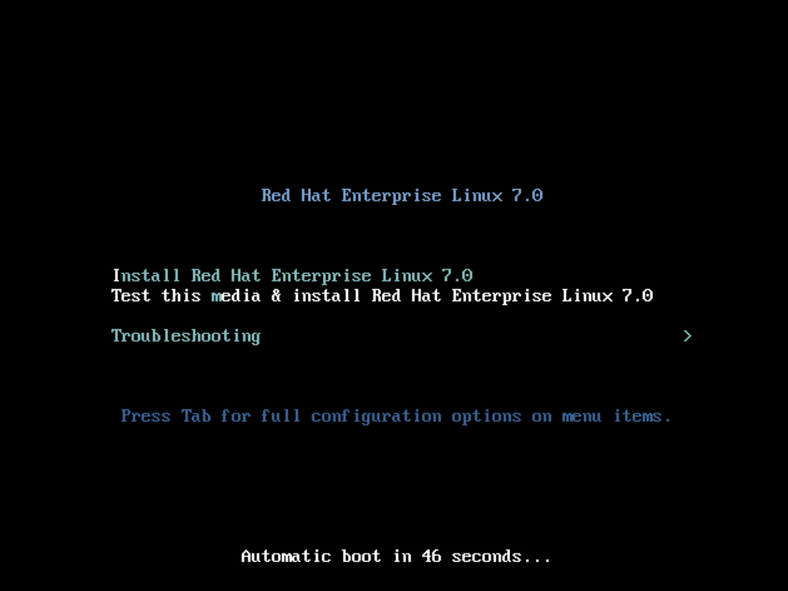 - Choose the appropriate Language and Keyboard options.
- When prompted about which type of devices your installation uses, choose Auto-detected installation media. 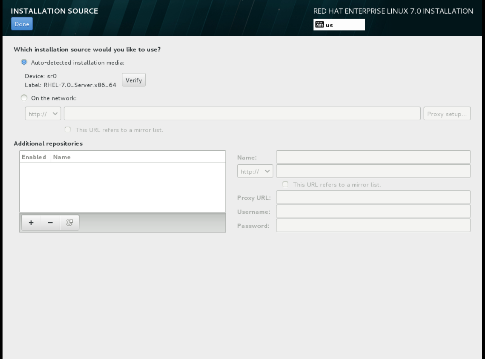
- When prompted about which type of installation destination, choose Local Standard Disks. 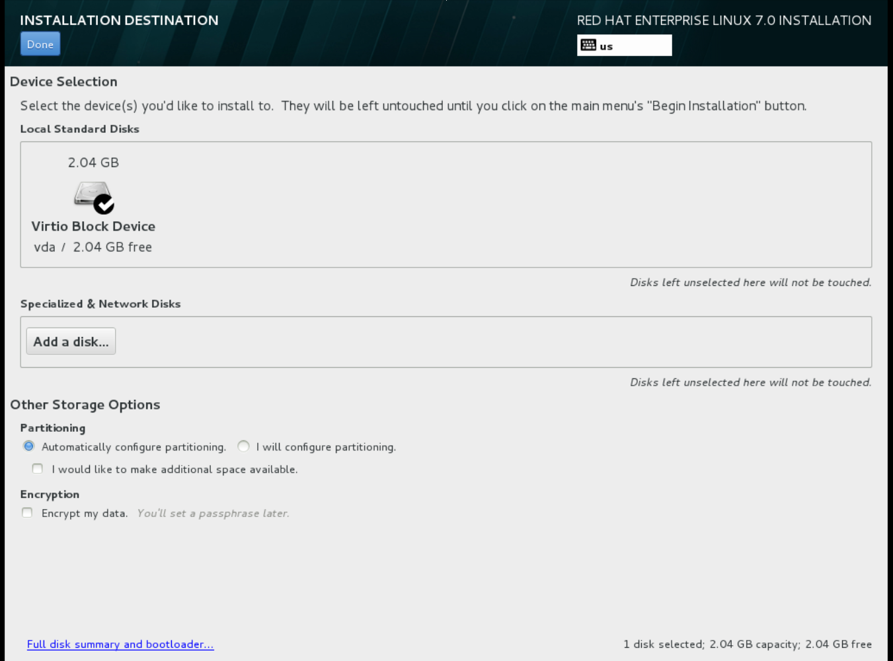 For other storage options, choose Automatically configure partitioning.
- For software selection, choose Minimal Install.
-
For network and host name, choose
eth0for network and choose ahostnamefor your device. The default host name islocalhost.localdomain. -
Choose the
rootpassword. 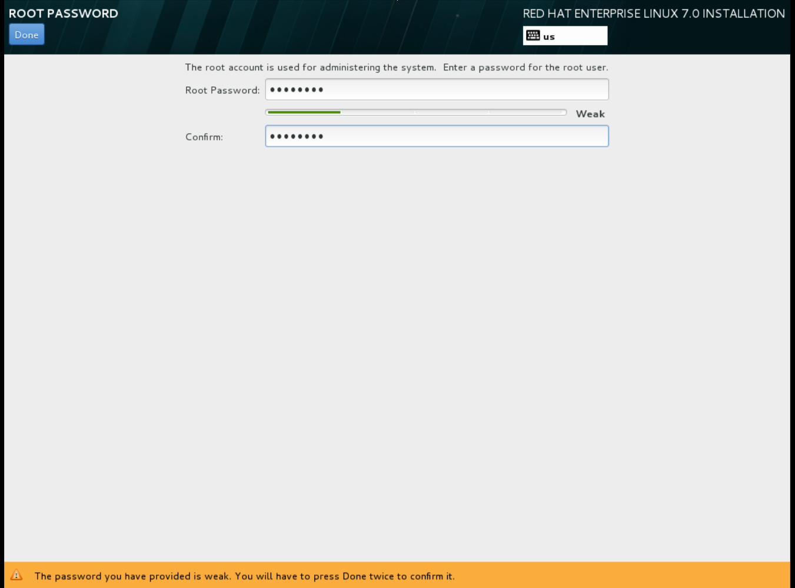 The installation process completes and the Complete! screen appears.
-
At the initial Installer boot menu, choose the
- After the installation is complete, reboot the instance and log in as the root user.
Update the
/etc/sysconfig/network-scripts/ifcfg-eth0file so it only contains the following values:TYPE=Ethernet DEVICE=eth0 ONBOOT=yes BOOTPROTO=dhcp NM_CONTROLLED=no
- Reboot the machine.
Register the machine with the Content Delivery Network.
# sudo subscription-manager register # sudo subscription-manager attach --pool=Valid-Pool-Number-123456 # sudo subscription-manager repos --enable=rhel-7-server-rpms
Update the system:
# dnf -y update
Install the
cloud-initpackages:# dnf install -y cloud-utils-growpart cloud-init
Edit the
/etc/cloud/cloud.cfgconfiguration file and undercloud_init_modulesadd:- resolv-conf
The
resolv-confoption automatically configures theresolv.confwhen an instance boots for the first time. This file contains information related to the instance such asnameservers,domainand other options.Add the following line to
/etc/sysconfig/networkto avoid problems accessing the EC2 metadata service:NOZEROCONF=yes
To ensure the console messages appear in the
Logtab on the dashboard and thenova console-logoutput, add the following boot option to the/etc/default/grubfile:GRUB_CMDLINE_LINUX_DEFAULT="console=tty0 console=ttyS0,115200n8"
Run the
grub2-mkconfigcommand:# grub2-mkconfig -o /boot/grub2/grub.cfg
The output is as follows:
Generating grub configuration file ... Found linux image: /boot/vmlinuz-3.10.0-229.7.2.el7.x86_64 Found initrd image: /boot/initramfs-3.10.0-229.7.2.el7.x86_64.img Found linux image: /boot/vmlinuz-3.10.0-121.el7.x86_64 Found initrd image: /boot/initramfs-3.10.0-121.el7.x86_64.img Found linux image: /boot/vmlinuz-0-rescue-b82a3044fb384a3f9aeacf883474428b Found initrd image: /boot/initramfs-0-rescue-b82a3044fb384a3f9aeacf883474428b.img done
Un-register the virtual machine so that the resulting image does not contain the same subscription details for every instance cloned based on it:
# subscription-manager repos --disable=* # subscription-manager unregister # dnf clean all
Power off the instance:
# poweroff
Reset and clean the image using the
virt-sysprepcommand so it can be used to create instances without issues:[root@host]# virt-sysprep -d rhel7
Reduce image size using the
virt-sparsifycommand. This command converts any free space within the disk image back to free space within the host:[root@host]# virt-sparsify --compress /tmp/rhel7.qcow2 rhel7-cloud.qcow2
This creates a new
rhel7-cloud.qcow2file in the location from where the command is run.
The rhel7-cloud.qcow2 image file is ready to be uploaded to the Image service. For more information on uploading this image to your OpenStack deployment using the dashboard, see Upload an Image.
1.2.1.2.2. Create a Red Hat Enterprise Linux 6 Image
This section provides you with the steps to manually create an OpenStack-compatible image in the QCOW2 format using a Red Hat Enterprise Linux 6 ISO file.
Start the installation using
virt-install:[root@host]# qemu-img create -f qcow2 rhel6.qcow2 4G [root@host]# virt-install --connect=qemu:///system --network=bridge:virbr0 \ --name=rhel6 --os-type linux --os-variant rhel6 \ --disk path=rhel6.qcow2,format=qcow2,size=10,cache=none \ --ram 4096 --vcpus=2 --check-cpu --accelerate \ --hvm --cdrom=rhel-server-6.8-x86_64-dvd.iso
This launches an instance and starts the installation process.
NoteIf the instance does not launch automatically, run the
virt-viewercommand to view the console:[root@host]# virt-viewer rhel6
Set up the virtual machines as follows:
At the initial Installer boot menu, choose the Install or upgrade an existing system option. 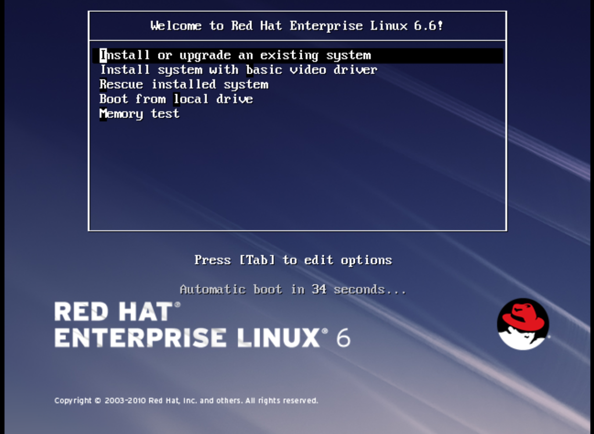 Step through the installation prompts. Accept the defaults.
The installer checks for the disc and lets you decide whether you want to test your installation media before installation. Select OK to run the test or Skip to proceed without testing.
- Choose the appropriate Language and Keyboard options.
- When prompted about which type of devices your installation uses, choose Basic Storage Devices. 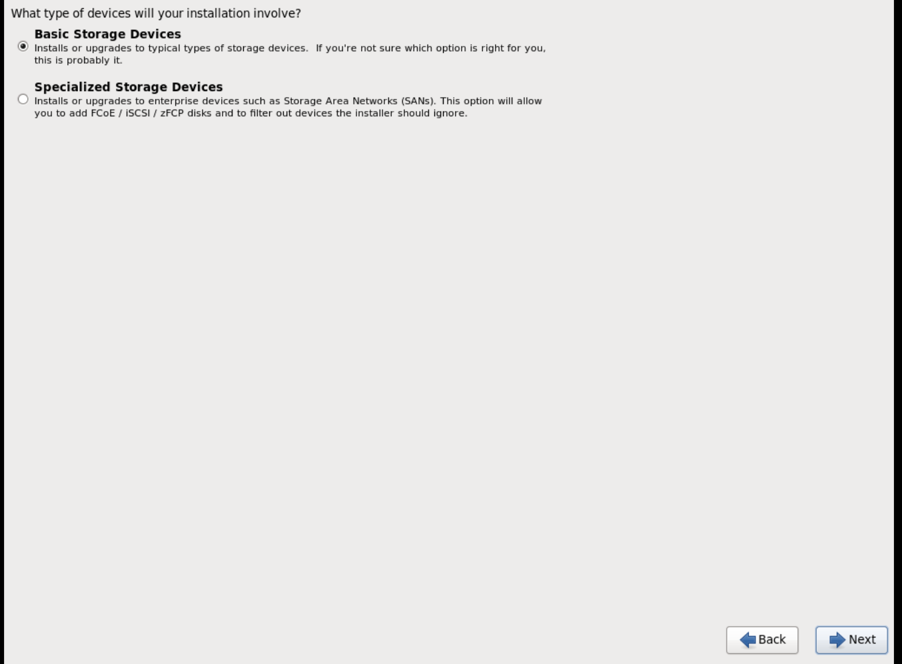
-
Choose a
hostnamefor your device. The default host name islocalhost.localdomain. -
Set timezone and
rootpassword. - Based on the space on the disk, choose the type of installation. 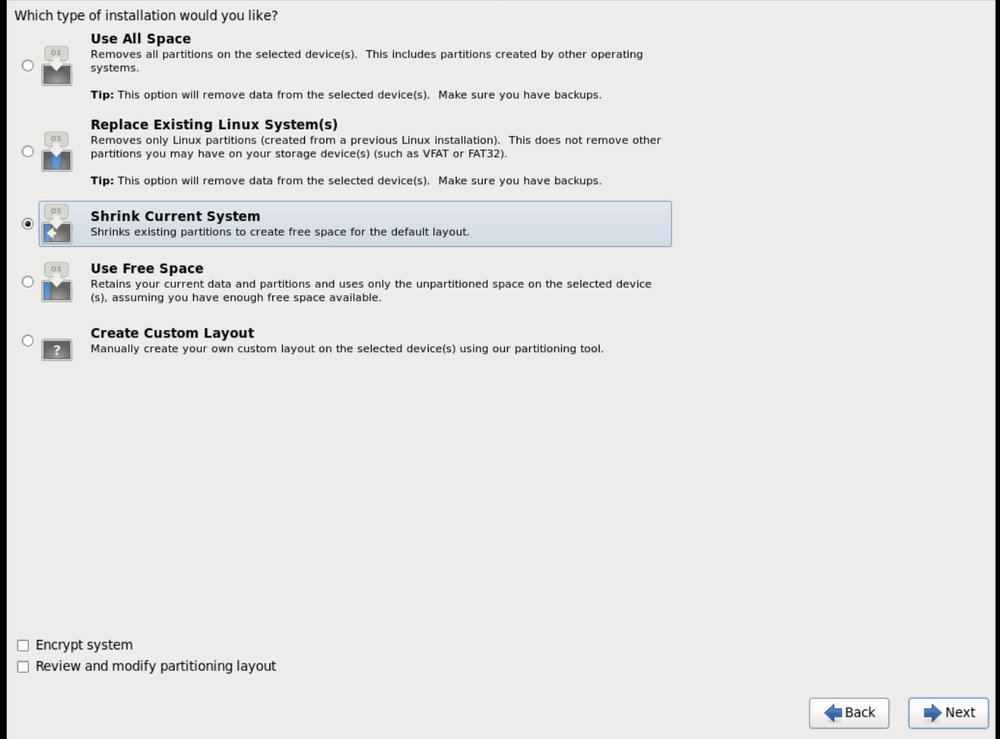
- Choose the Basic Server install, which installs an SSH server. 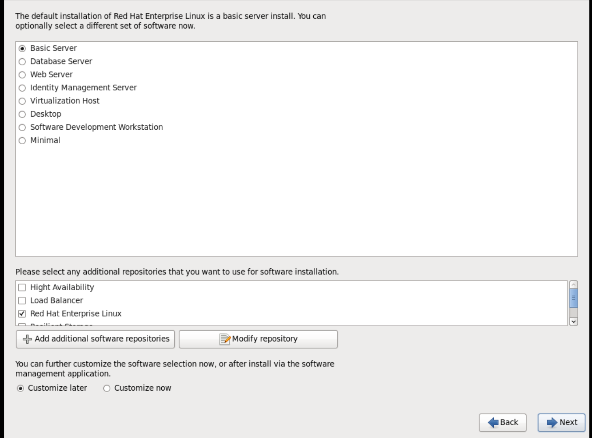
- The installation process completes and Congratulations, your Red Hat Enterprise Linux installation is complete screen appears.
-
Reboot the instance and log in as the
rootuser. Update the
/etc/sysconfig/network-scripts/ifcfg-eth0file so it only contains the following values:TYPE=Ethernet DEVICE=eth0 ONBOOT=yes BOOTPROTO=dhcp NM_CONTROLLED=no
- Reboot the machine.
Register the machine with the Content Delivery Network:
# sudo subscription-manager register # sudo subscription-manager attach --pool=Valid-Pool-Number-123456 # sudo subscription-manager repos --enable=rhel-6-server-rpms
Update the system:
# dnf -y update
Install the
cloud-initpackages:# dnf install -y cloud-utils-growpart cloud-init
Edit the
/etc/cloud/cloud.cfgconfiguration file and undercloud_init_modulesadd:- resolv-conf
The
resolv-confoption automatically configures theresolv.confconfiguration file when an instance boots for the first time. This file contains information related to the instance such asnameservers,domain, and other options.To prevent network issues, create the
/etc/udev/rules.d/75-persistent-net-generator.rulesfile as follows:# echo "#" > /etc/udev/rules.d/75-persistent-net-generator.rules
This prevents
/etc/udev/rules.d/70-persistent-net.rulesfile from being created. If/etc/udev/rules.d/70-persistent-net.rulesis created, networking may not function properly when booting from snapshots (the network interface is created as "eth1" rather than "eth0" and IP address is not assigned).Add the following line to
/etc/sysconfig/networkto avoid problems accessing the EC2 metadata service:NOZEROCONF=yes
To ensure the console messages appear in the
Logtab on the dashboard and thenova console-logoutput, add the following boot option to the/etc/grub.conf:console=tty0 console=ttyS0,115200n8
Un-register the virtual machine so that the resulting image does not contain the same subscription details for every instance cloned based on it:
# subscription-manager repos --disable=* # subscription-manager unregister # dnf clean all
Power off the instance:
# poweroff
Reset and clean the image using the
virt-sysprepcommand so it can be used to create instances without issues:[root@host]# virt-sysprep -d rhel6
Reduce image size using the
virt-sparsifycommand. This command converts any free space within the disk image back to free space within the host:[root@host]# virt-sparsify --compress rhel6.qcow2 rhel6-cloud.qcow2
This creates a new
rhel6-cloud.qcow2file in the location from where the command is run.NoteYou will need to manually resize the partitions of instances based on the image in accordance with the disk space in the flavor that is applied to the instance.
The rhel6-cloud.qcow2 image file is ready to be uploaded to the Image service. For more information on uploading this image to your OpenStack deployment using the dashboard, see Upload an Image
1.2.1.2.3. Create a Windows Image
This section provides you with the steps to manually create an OpenStack-compatible image in the QCOW2 format using a Windows ISO file.
Start the installation using
virt-installas shown below:[root@host]# virt-install --name=name \ --disk size=size \ --cdrom=path \ --os-type=windows \ --network=bridge:virbr0 \ --graphics spice \ --ram=RAM
Replace the values of the
virt-installparameters as follows:- name — the name that the Windows guest should have.
- size — disk size in GB.
- path — the path to the Windows installation ISO file.
RAM — the requested amount of RAM in MB.
NoteThe
--os-type=windowsparameter ensures that the clock is set up correctly for the Windows guest, and enables its Hyper-V enlightenment features.Note that
virt-installsaves the guest image as/var/lib/libvirt/images/name.qcow2by default. If you want to keep the guest image elsewhere, change the parameter of the--diskoption as follows:--disk path=filename,size=size
Replace filename with the name of the file which should store the guest image (and optionally its path); for example
path=win8.qcow2,size=8creates an 8 GB file namedwin8.qcow2in the current working directory.TipIf the guest does not launch automatically, run the
virt-viewercommand to view the console:[root@host]# virt-viewer name
- Installation of Windows systems is beyond the scope of this document. For instructions on how to install Windows, see the relevant Microsoft documentation.
-
To allow the newly installed Windows system to use the virtualized hardware, you might need to install virtio drivers. To so do, first install the image, which you must attach as a CD-ROM drive to the Windows guest. To install the
virtio-winpackage you must add the virtio ISO image to the guest, and install the virtio drivers. See Installing KVM paravirtualized drivers for Windows virtual machines in the Configuring and managing virtualization guide. To complete the setup, download and execute Cloudbase-Init on the Windows system. At the end of the installation of Cloudbase-Init, select the
Run SysprepandShutdowncheck boxes. TheSyspreptool makes the guest unique by generating an OS ID, which is used by certain Microsoft services.ImportantRed Hat does not provide technical support for Cloudbase-Init. If you encounter an issue, contact Cloudbase Solutions.
When the Windows system shuts down, the name.qcow2 image file is ready to be uploaded to the Image service. For more information on uploading this image to your OpenStack deployment using the dashboard or the command line, see Upload an Image.
libosinfo data
The Compute Service has deprecated support for using libosinfo data to set default device models. Instead, use the following image metadata properties to configure the optimal virtual hardware for an instance:
-
os_distro -
os_version -
hw_cdrom_bus -
hw_disk_bus -
hw_scsi_model -
hw_vif_model -
hw_video_model -
hypervisor_type
For more information on these metadata properties, see Appendix A, Image Configuration Parameters.
1.2.2. Upload an image
- In the dashboard, select Project > Compute > Images.
- Click Create Image.
- Fill out the values, and click Create Image when finished.
Table 1.1. Image Options
| Field | Notes |
|---|---|
| Name | Name for the image. The name must be unique within the project. |
| Description | Brief description to identify the image. |
| Image Source | Image source: Image Location or Image File. Based on your selection, the next field is displayed. |
| Image Location or Image File |
|
| Format | Image format (for example, qcow2). |
| Architecture | Image architecture. For example, use i686 for a 32-bit architecture or x86_64 for a 64-bit architecture. |
| Minimum Disk (GB) | Minimum disk size required to boot the image. If this field is not specified, the default value is 0 (no minimum). |
| Minimum RAM (MB) | Minimum memory size required to boot the image. If this field is not specified, the default value is 0 (no minimum). |
| Public | If selected, makes the image public to all users with access to the project. |
| Protected | If selected, ensures only users with specific permissions can delete this image. |
When the image has been successfully uploaded, its status is changed to active, which indicates that the image is available for use. Note that the Image service can handle even large images that take a long time to upload — longer than the lifetime of the Identity service token which was used when the upload was initiated. This is due to the fact that the Image service first creates a trust with the Identity service so that a new token can be obtained and used when the upload is complete and the status of the image is to be updated.
You can also use the glance image-create command with the property option to upload an image. More values are available on the command line. For a complete listing, see Image Configuration Parameters.
1.2.3. Update an image
- In the dashboard, select Project > Compute > Images.
Click Edit Image from the dropdown list.
NoteThe Edit Image option is available only when you log in as an
adminuser. When you log in as ademouser, you have the option to Launch an instance or Create Volume.- Update the fields and click Update Image when finished. You can update the following values - name, description, kernel ID, ramdisk ID, architecture, format, minimum disk, minimum RAM, public, protected.
- Click the drop-down menu and select Update Metadata option.
- Specify metadata by adding items from the left column to the right one. In the left column, there are metadata definitions from the Image Service Metadata Catalog. Select Other to add metadata with the key of your choice and click Save when finished.
You can also use the glance image-update command with the property option to update an image. More values are available on the command line; for a complete listing, see Image Configuration Parameters.
1.2.4. Import an image
You can import images into the Image service (glance) using web-download to import an image from a URI and glance-direct to import an image from a local file system. The web-download method is enabled by default.
Import methods are configured by the cloud administrator. Run the glance import-info command to list available import options.
1.2.4.1. Import from a remote URI
You can use the web-download method to copy an image from a remote URI.
Create an image and specify the URI of the image to import.
glance image-create --uri <URI>
-
You can monitor the image’s availability using the
glance image-show <image-ID>command where the ID is the one provided during image creation.
The Image service web-download method uses a two-stage process to perform the import. First, it creates an image record. Second, it retrieves the image the specified URI. This method provides a more secure way to import images than the deprecated copy-from method used in Image API v1.
The URI is subject to optional blacklist and whitelist filtering as described in the Advanced Overcloud Customization Guide.
The Image Property Injection plugin may inject metadata properties to the image as described in the Advanced Overcloud Customization Guide. These injected properties determine which compute nodes the image instances are launched on.
1.2.4.2. Import from a local volume
The glance-direct method creates an image record, which generates an image ID. Once the image is uploaded to the service from a local volume, it is stored in a staging area and is made active after it passes any configured checks. The glance-direct method requires a shared staging area when used in a highly available (HA) configuration.
Image uploads using the glance-direct method fail in an HA environment if a common staging area is not present. In an HA active-active environment, API calls are distributed to the glance controllers. The download API call could be sent to a different controller than the API call to upload the image. For more information about configuring the staging area, refer to the Storage Configuration section in the Advanced Overcloud Customization Guide.
The glance-direct method uses three different calls to import an image:
-
glance image-create -
glance image-stage -
glance image-import
You can use the glance image-create-via-import command to perform all three of these calls in one command. In the example below, uppercase words should be replaced with the appropriate options.
glance image-create-via-import --container-format FORMAT --disk-format DISKFORMAT --name NAME --file /PATH/TO/IMAGE
Once the image moves from the staging area to the back end location, the image is listed. However, it may take some time for the image to become active.
You can monitor the image’s availability using the glance image-show <image-ID> command where the ID is the one provided during image creation.
1.2.5. Delete an image
- In the dashboard, select Project > Compute > Images.
- Select the image you want to delete and click Delete Images.
1.2.6. Hide or unhide an image
You can hide public images from normal listings presented to users. For instance, you can hide obsolete CentOS 7 images and show only the latest version to simplify the user experience. Users can discover and use hidden images.
To hide an image:
glance image-update <image-id> --hidden 'true'
To create a hidden image, add the --hidden argument to the glance image-create command.
To unhide an image:
glance image-update <image-id> --hidden 'false'
1.2.8. Enabling image conversion
With the GlanceImageImportPlugins parameter enabled, you can upload a QCOW2 image, and the Image service will convert it to RAW.
Image conversion is automatically enabled when you use Red Hat Ceph Storage RBD to store images and boot Nova instances.
To enable image conversion, create an environment file that contains the following parameter value and include the new environment file with the -e option in the openstack overcloud deploy command:
parameter_defaults: GlanceImageImportPlugins:'image_conversion'
1.2.9. Converting an image to RAW format
Red Hat Ceph Storage can store, but does not support using, QCOW2 images to host virtual machine (VM) disks.
When you upload a QCOW2 image and create a VM from it, the compute node downloads the image, converts the image to RAW, and uploads it back into Ceph, which can then use it. This process affects the time it takes to create VMs, especially during parallel VM creation.
For example, when you create multiple VMs simultaneously, uploading the converted image to the Ceph cluster may impact already running workloads. The upload process can starve those workloads of IOPS and impede storage responsiveness.
To boot VMs in Ceph more efficiently (ephemeral back end or boot from volume), the glance image format must be RAW.
Converting an image to RAW may yield an image that is larger in size than the original QCOW2 image file. Run the following command before the conversion to determine the final RAW image size:
qemu-img info <image>.qcow2
To convert an image from QCOW2 to RAW format, do the following:
qemu-img convert -p -f qcow2 -O raw <original qcow2 image>.qcow2 <new raw image>.raw
1.2.9.1. Configuring Image Service to accept RAW and ISO only
Optionally, to configure the Image Service to accept only RAW and ISO image formats, deploy using an additional environment file that contains the following:
parameter_defaults:
ExtraConfig:
glance::config::api_config:
image_format/disk_formats:
value: "raw,iso"1.2.10. Storing an image in RAW format
With the GlanceImageImportPlugins parameter enabled, run the following command to store a previously created image in RAW format:
$ glance image-create-via-import \
--disk-format qcow2 \
--container-format bare \
--name NAME \
--visibility public \
--import-method web-download \
--uri http://server/image.qcow2-
For
--name, replaceNAMEwith the name of the image; this is the name that will appear inglance image-list. -
For
--uri, replacehttp://server/image.qcow2with the location and file name of the QCOW2 image.
This command example creates the image record and imports it by using the web-download method. The glance-api downloads the image from the --uri location during the import process. If web-download is not available, glanceclient cannot automatically download the image data. Run the glance import-info command to list the available image import methods.
Chapter 2. Image service with multiple stores
The Red Hat OpenStack Platform Image service (glance) supports using multiple stores with distributed edge architecture so that you can have an image pool at every edge site. You can copy images between the central site, which is also known as the hub site, and the edge sites.
The image metadata contains the location of each copy. For example, an image present on two edge sites is exposed as a single UUID with three locations: the central site plus the two edge sites. This means you can have copies of image data that share a single UUID on many stores. For more information about locations, see Understanding the location of images.
With an RBD image pool at every edge site, you can boot VMs quickly by using Ceph RBD copy-on-write (COW) and snapshot layering technology. This means that you can boot VMs from volumes and have live migration. For more information about layering with Ceph RBD, see Ceph block device layering in the Block Device Guide.
2.1. Requirements of storage edge architecture
- A copy of each image must exist in the Image service at the central location.
- Prior to creating an instance at an edge site, you must have a local copy of the image at that edge site.
-
Source the
centralrcauthentication file to schedule workloads at edge sites as well as at the central location. Authentication files that are automatically generated for edge sites are not needed. - Images uploaded to an edge site must be copied to the central location before they can be copied to other edge sites.
- Use the Image service RBD driver for all edge sites. Mixed architecture is not supported.
- Multistack must be used with a single stack at each site.
- RBD must be the storage driver for the Image, Compute and Block Storage services.
-
For each site, you must assign the same value to the
NovaComputeAvailabilityZoneandCinderStorageAvailabilityZoneparameters.
2.2. Import an image to multiple stores
Use the interoperable image import workflow to import image data into multiple Ceph Storage clusters. You can import images into the Image service that are available on the local file system or through a web server.
If you import an image from a web server, the image can be imported into multiple stores at once. If the image is not available on a web server, you can import the image from a local file system into the central store and then copy it to additional stores. For more information, see Copy an existing image to multiple stores.
Always store an image copy on the central site, even if there are no instances using the image at the central location. For more information about importing images into the Image service, see the Distributed compute node and storage deployment guide.
2.2.1. Manage image import failures
You can manage failures of the image import operation by using the --allow-failure parameter:
-
If the value of the
--allow-failureparameter totrue, the image status becomesactiveafter the first store successfully imports the data. This is the default setting. You can view a list of stores that failed to import the image data by using theos_glance_failed_importimage property. -
If you set the value of the
--allow-failureparameter tofalse, the image status only becomesactiveafter all specified stores successfully import the data. Failure of any store to import the image data results in an image status offailed. The image is not imported into any of the specified stores.
2.2.2. Importing image data to multiple stores
Because the default setting of the --allow-failure parameter is true, you do not need to include the parameter in the command if it is acceptable for some stores to fail to import the image data.
This procedure does not require all stores to successfully import the image data.
Procedure
Import image data to multiple, specified stores:
$ glance image-create-via-import \ --container-format bare \ --name IMAGE-NAME \ --import-method web-download \ --uri URI \ --stores STORE1,STORE2,STORE3
- Replace IMAGE-NAME with the name of the image you want to import.
- Replace URI with the URI of the image.
- Replace STORE1, STORE2, and STORE3 with the names of the stores to which you want to import the image data.
-
Alternatively, replace
--storeswith--all-stores trueto upload the image to all the stores.
The glance image-create-via-import command, which automatically converts the QCOW2 image to RAW format, works only with the web-download method. The glance-direct method is available, but it works only in deployments with a configured shared file system. For more information, see Storing an image in RAW format.
2.2.3. Importing image data to multiple stores without failure
This procedure requires all stores to successfully import the image data.
Procedure
Import image data to multiple, specified stores:
$ glance image-create-via-import \ --container-format bare \ --name IMAGE-NAME \ --import-method web-download \ --uri URI \ --stores STORE1,STORE2
- Replace IMAGE-NAME with the name of the image you want to import.
- Replace URI with the URI of the image.
- Replace STORE1, STORE2, and STORE3 with the names of stores to which you want to copy the image data.
Alternatively, replace
--storeswith--all-stores trueto upload the image to all the stores.NoteWith the
--allow-failureparameter set tofalse, the Image service does not ignore stores that fail to import the image data. You can view the list of failed stores with the image propertyos_glance_failed_import. For more information see Checking the progress of image import operation.
Verify that the image data was added to specific stores:
$ glance image-show IMAGE-ID | grep storesReplace IMAGE-ID with the ID of the original existing image.
The output displays a comma-delimited list of stores.
2.2.4. Importing image data to a single store
You can import image data to a single store.
Procedure
Import image data to a single store:
$ glance image-create-via-import \ --container-format bare \ --name IMAGE-NAME \ --import-method web-download \ --uri URI \ --store STORE
- Replace IMAGE-NAME with the name of the image you want to import.
- Replace URI with the URI of the image.
Replace STORE with the name of the store to which you want to copy the image data.
NoteIf you do not include the options of
--stores,--all-stores, or--storein the command, the Image service creates the image in the central store.
Verify that the image data was added to specific store:
$ glance image-show IMAGE-ID | grep storesReplace IMAGE-ID with the ID of the original existing image.
The output displays a comma-delimited list of stores.
2.2.5. Checking the progress of the image import operation
The interoperable image import workflow sequentially imports image data into stores. The size of the image, the number of stores, and the network speed between the central site and the edge sites impact how long it takes for the image import operation to complete.
You can follow the progress of the image import by looking at two image properties, which appear in notifications sent during the image import operation:
-
The
os_glance_importing_to_storesproperty lists the stores that have not imported the image data. At the beginning of the import, all requested stores show up in the list. Each time a store successfully imports the image data, the Image service removes the store from the list. -
The
os_glance_failed_importproperty lists the stores that fail to import the image data. This list is empty at the beginning of the image import operation.
In the following procedure, the environment has three Ceph Storage clusters: the central store and two stores at the edge, dcn0 and dcn1.
Procedure
Verify that the image data was added to specific stores:
$ glance image-show IMAGE-IDReplace IMAGE-ID with the ID of the original existing image.
The output displays a comma-delimited list of stores similar to the following example snippet:
| os_glance_failed_import | | os_glance_importing_to_stores | central,dcn0,dcn1 | status | importing
Monitor the status of the image import operation. When you precede a command with
watch, the command output refreshes every two seconds.$ watch glance image-show IMAGE-IDReplace IMAGE-ID with the ID of the original existing image.
The status of the operation changes as the image import operation progresses:
| os_glance_failed_import | | os_glance_importing_to_stores | dcn0,dcn1 | status | importing
Output that shows that an image failed to import resembles the following example:
| os_glance_failed_import | dcn0 | os_glance_importing_to_stores | dcn1 | status | importing
After the operation completes, the status changes to active:
| os_glance_failed_import | dcn0 | os_glance_importing_to_stores | | status | active
2.3. Copy an existing image to multiple stores
This feature enables you to copy existing images using Red Hat OpenStack Image service (glance) image data into multiple Ceph Storage stores at the edge by using the interoperable image import workflow.
The image must be present at the central site before you copy it to any edge sites. Only the image owner or administrator can copy existing images to newly added stores.
You can copy existing image data either by setting --all-stores to true or by specifying specific stores to receive the image data.
-
The default setting for the
--all-storesoption isfalse. If--all-storesisfalse, you must specify which stores receive the image data by using--stores STORE1,STORE2. If the image data is already present in any of the specified stores, the request fails. -
If you set
all-storestotrue, and the image data already exists in some of the stores, then those stores are excluded from the list.
After you specify which stores receive the image data, the Image service copies data from the central site to a staging area. Then the Image service imports the image data by using the interoperable image import workflow. For more information, see Importing an image to multiple stores.
Red Hat recommends that administrators carefully avoid closely timed image copy requests. Two closely timed copy-image operations for the same image causes race conditions and unexpected results. Existing image data remains as it is, but copying data to new stores fails.
2.3.1. Copying an image to all stores
Use the following procedure to copy image data to all available stores.
Procedure
Copy image data to all available stores:
$ glance image-import IMAGE-ID \ --all-stores true \ --import-method copy-imageReplace IMAGE-ID with the name of the image you want to copy.
Confirm that the image data successfully replicated to all available stores:
$ glance image-list --include-stores
For information about how to check the status of the image import operation, see Checking the progress of the image import operation.
2.3.2. Copying an image to specific stores
Use the following procedure to copy image data to specific stores.
Procedure
Copy image data to specific stores:
$ glance image-import IMAGE-ID \ --stores STORE1,STORE2 \ --import-method copy-image
- Replace IMAGE-ID with the name of the image you want to copy.
- Replace STORE1 and STORE2 with the names of the stores to which you want to copy the image data.
Confirm that the image data successfully replicated to the specified stores:
$ glance image-list --include-stores
For information about how to check the status of the image import operation, see Checking the progress of the image import operation.
2.4. Deleting an image from a specific store
This feature enables you to delete an existing image copy on a specific store using Red Hat OpenStack Image service (glance).
This feature is available in this release as a Technology Preview, and therefore is not fully supported by Red Hat. It should only be used for testing, and should not be deployed in a production environment. For more information about Technology Preview features, see Scope of Coverage Details.
Procedure
Delete an image from a specific store:
$ glance stores-delete --store _STORE_ID_ _IMAGE_ID_
- Replace _STORE_ID with the name of the store on which the image copy should be deleted.
- Replace IMAGE_ID with the ID of the image you want to delete.
Using glance image-delete will permanently delete the image across all the sites. All image copies will be deleted, as well as the image instance and metadata.
2.5. Understanding the locations of images
Although an image can be present on multiple sites, there is only a single UUID for a given image. The image metadata contains the locations of each copy. For example, an image present on two edge sites is exposed as a single UUID with three locations: the central site plus the two edge sites.
Procedure
Show the sites on which a copy of the image exists:
$ glance image-show ID | grep "stores" | stores | default_backend,dcn1,dcn2
In the example, the image is present on the central site, the
default_backend, and on the two edge sitesdcn1anddcn2.Alternatively, you can run the
glance image-listcommand with the--include-storesoption to see the sites where the images exist:$ glance image-list --include-stores | ID | Name | Stores | 2bd882e7-1da0-4078-97fe-f1bb81f61b00 | cirros | default_backend,dcn1,dcn2
List the image locations properties to show the details of each location:
$ openstack image show ID -c properties | properties | (--- cut ---) locations='[{'url': 'rbd://79b70c32-df46-4741-93c0-8118ae2ae284/images/2bd882e7-1da0-4078-97fe-f1bb81f61b00/snap', 'metadata': {'store': 'default_backend'}}, {'url': 'rbd://63df2767-8ddb-4e06-8186-8c155334f487/images/2bd882e7-1da0-4078-97fe-f1bb81f61b00/snap', 'metadata': {'store': 'dcn1'}}, {'url': 'rbd://1b324138-2ef9-4ef9-bd9e-aa7e6d6ead78/images/2bd882e7-1da0-4078-97fe-f1bb81f61b00/snap', 'metadata': {'store': 'dcn2'}}]', (--- cut --)The image properties show the different Ceph RBD URIs for the location of each image.
In the example, the central image location URI is:
rbd://79b70c32-df46-4741-93c0-8118ae2ae284/images/2bd882e7-1da0-4078-97fe-f1bb81f61b00/snap', 'metadata': {'store': 'default_backend'}}The URI is composed of the following data:
-
79b70c32-df46-4741-93c0-8118ae2ae284corresponds to the central Ceph FSID. Each Ceph cluster has a unique FSID. -
The default value for all sites is
images, which corresponds to the Ceph pool on which the images are stored. -
2bd882e7-1da0-4078-97fe-f1bb81f61b00corresponds to the image UUID. The UUID is the same for a given image regardless of its location. -
The metadata shows the glance store to which this location maps. In this example, it maps to the
default_backend, which is the central hub site.
-
Chapter 3. Configuring the Compute (nova) service
Use environment files to customize the Compute (nova) service. Puppet generates and stores this configuration in the /var/lib/config-data/puppet-generated/<nova_container>/etc/nova/nova.conf file. Use the following configuration methods to customize the Compute service configuration:
Heat parameters - as detailed in the Compute (nova) Parameters section in the Overcloud Parameters guide. For example:
parameter_defaults: NovaSchedulerDefaultFilters: AggregateInstanceExtraSpecsFilter,RetryFilter,ComputeFilter,ComputeCapabilitiesFilter,ImagePropertiesFilter NovaNfsEnabled: true NovaNfsShare: '192.0.2.254:/export/nova' NovaNfsOptions: 'context=system_u:object_r:nfs_t:s0' NovaNfsVersion: '4.2'
Puppet parameters - as defined in
/etc/puppet/modules/nova/manifests/*:parameter_defaults: ComputeExtraConfig: nova::compute::force_raw_images: TrueNoteOnly use this method if an equivalent heat parameter does not exist.
Manual hieradata overrides - for customizing parameters when no heat or Puppet parameter exists. For example, the following sets the
timeout_nbdin the[DEFAULT]section on the Compute role:parameter_defaults: ComputeExtraConfig: nova::config::nova_config: DEFAULT/timeout_nbd: value: '20'
If a heat parameter exists, it must be used instead of the Puppet parameter; if a Puppet parameter exists, but not a heat parameter, then the Puppet parameter must be used instead of the manual override method. The manual override method must only be used if there is no equivalent heat or Puppet parameter.
Follow the guidance in Identifying Parameters to Modify to determine if a heat or Puppet parameter is available for customizing a particular configuration.
See Parameters in the Advanced Overcloud Customization guide for further details on configuring overcloud services.
3.1. Configuring memory for overallocation
When you use memory overcommit (NovaRAMAllocationRatio >= 1.0), you need to deploy your overcloud with enough swap space to support the allocation ratio.
If your NovaRAMAllocationRatio parameter is set to < 1, follow the RHEL recommendations for swap size. For more information, see Recommended system swap space in the RHEL Managing Storage Devices guide.
Prerequisites
- You have calculated the swap size your node requires. For more information, see Section 3.3, “Calculating swap size”.
Procedure
Copy the
/usr/share/openstack-tripleo-heat-templates/environments/enable-swap.yamlfile to your environment file directory:$ cp /usr/share/openstack-tripleo-heat-templates/environments/enable-swap.yaml /home/stack/templates/enable-swap.yaml
Configure the swap size by adding the following parameters to your
enable-swap.yamlfile:parameter_defaults: swap_size_megabytes: <swap size in MB> swap_path: <full path to location of swap, default: /swap>
To apply this configuration, add the
enable_swap.yamlenvironment file to the stack with your other environment files and deploy the overcloud:(undercloud) $ openstack overcloud deploy --templates \ -e [your environment files] \ -e /home/stack/templates/enable-swap.yaml \
3.2. Calculating reserved host memory on Compute nodes
To determine the total amount of RAM to reserve for host processes, you need to allocate enough memory for each of the following:
- The resources that run on the node, for instance, OSD consumes 3 GB of memory.
- The emulator overhead required to visualize instances on a host.
- The hypervisor for each instance.
After you calculate the additional demands on memory, use the following formula to help you determine the amount of memory to reserve for host processes on each node:
NovaReservedHostMemory = total_RAM - ( (vm_no * (avg_instance_size + overhead)) + (resource1 * resource_ram) + (resource _n_ * resource_ram))
-
Replace
vm_nowith the number of instances. -
Replace
avg_instance_sizewith the average amount of memory each instance can use. -
Replace
overheadwith the hypervisor overhead required for each instance. -
Replace
resource1with the number of a resource type on the node. -
Replace
resource_ramwith the amount of RAM each resource of this type requires.
3.3. Calculating swap size
The allocated swap size must be large enough to handle any memory overcommit. You can use the following formulas to calculate the swap size your node requires:
-
overcommit_ratio =
NovaRAMAllocationRatio- 1 -
Minimum swap size (MB) =
(total_RAM * overcommit_ratio) + RHEL_min_swap -
Recommended (maximum) swap size (MB) =
total_RAM * (overcommit_ratio + percentage_of_RAM_to_use_for_swap)
The percentage_of_RAM_to_use_for_swap variable creates a buffer to account for QEMU overhead and any other resources consumed by the operating system or host services.
For instance, to use 25% of the available RAM for swap, with 64GB total RAM, and NovaRAMAllocationRatio set to 1:
- Recommended (maximum) swap size = 64000 MB * (0 + 0.25) = 16000 MB
For information on how to calculate the NovaReservedHostMemory value, see Section 3.2, “Calculating reserved host memory on Compute nodes”.
For information on how to determine the RHEL_min_swap value, see Recommended system swap space in the RHEL Managing Storage Devices guide.
Chapter 4. Scaling deployments with Compute cells
You can use cells to divide Compute nodes in large deployments into groups, each with a message queue and dedicated database that contains instance information.
By default, the director installs the overcloud with a single cell for all Compute nodes. This single-cell deployment contains all instances and instance metadata. For larger deployments, you can deploy the overcloud with multiple cells to accommodate a larger number of Compute nodes.
In multi-cell deployments, each cell runs standalone copies of the cell-specific components and stores instance metadata only for instances in that cell. Global information and cell mappings are stored in the global Controller cell, which helps with security and recovery in case one of the cells fails.
You can add cells to your environment when you install a new overcloud or at any time afterwards.
4.1. Cell components
In single-cell deployments, all components are contained in the same cell. In multi-cell deployments, the global services run on the main Controller cell, and each Compute cell runs standalone copies of the cell-specific components and contains the database and message queue for the Compute nodes in that cell.
Global components
The following components are deployed in a Controller cell once for each overcloud, regardless of the number of Compute cells.
- Compute API
- Provides the external REST API to users.
- Scheduler
- Determines to which Compute node to assign the instances.
- Placement service
- Monitors and allocates Compute resources to the instances.
- API database
Used by the Compute API and the Compute scheduler services to track location information about instances, and provides a temporary location for instances that are built but not scheduled.
In multi-cell deployments, this database also contains cell mappings that specify the database connection for each cell.
cell0database- Dedicated database for information about instances that failed to be scheduled.
- Super conductor
In multi-cell deployments, this service coordinates between the global services and each Compute cell, and also sends failed instance information to the
cell0database.NoteThis component exists only in multi-cell deployments.
Cell-specific components
The following components are deployed in each Compute cell.
- Cell database
- Contains most of the information about instances. Used by the global API, the conductor, and the Compute services.
- Conductor
- Coordinates database queries and long-running tasks from the global services, and insulates Compute nodes from direct database access.
- Message queue
- Messaging service used by all services to communicate with each other within the cell and with the global services.
Configuration files
The overcloud includes configuration files that define the following information for the Compute cells:
-
[DEFAULT]/transport_url: Message queue endpoint for each cell. -
[DATABASE]/connection: Database connection for each cell. -
[API_DATABASE]/connection: Routing and placement information for the global components. - (Multi-cell deployments only) Cell mapping records to be stored in the global API database.
This information is extracted from the overcloud when you deploy the multi-cell environment, as described in Section 4.4, “Deploying a multi-cell overcloud”.
4.2. Cell deployments architecture
Each deployment type allows you to optimize your overcloud for different use-cases.
Single-cell deployment architecture (default)
The following diagram shows an example of the basic structure and interaction in a default single-cell overcloud.
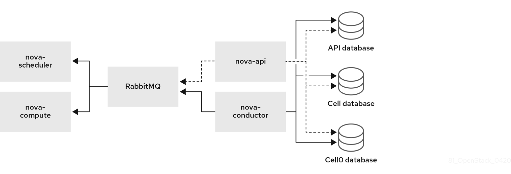
In this deployment, all services are configured to use a single conductor to communicate between the Compute API and the Compute nodes, and a single database stores all live instance data.
In smaller deployments this configuration might be sufficient, but if any API-level (global) service or the database fails, the entire Compute deployment cannot send or receive information, regardless of high availability configurations.
Multi-cell deployment architecture (custom)
The following diagram shows an example of the basic structure and interaction in a custom multi-cell overcloud.
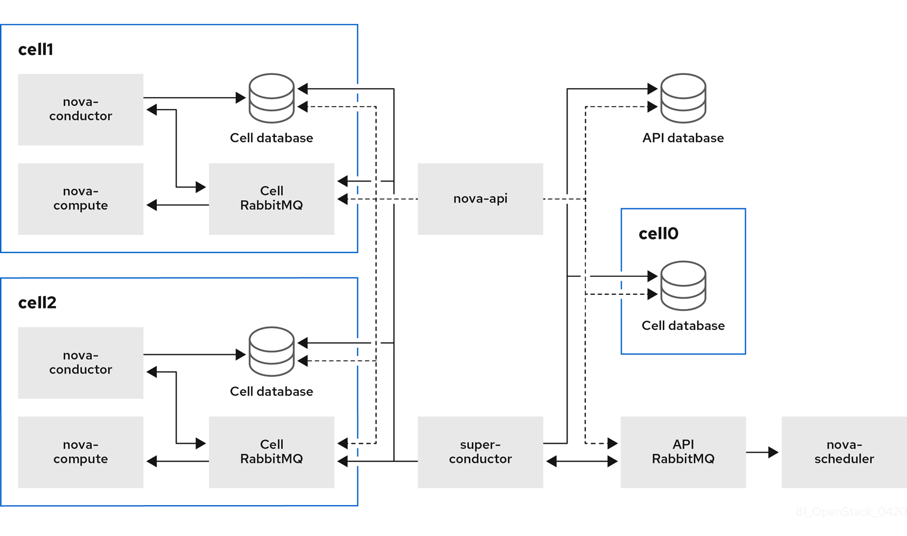
In this deployment, the Compute nodes are divided to multiple cells, each with their own conductor, database, and message queue. The global services use the super conductor to communicate with each cell, and the global database contains only information required for the whole overcloud.
The cell-level services cannot access global services directly. This isolation provides additional security and fail-safe capabilities in case of cell failure.
In Edge deployments, you must deploy the first cell on the central site, therefore, do not deploy the first cell on any of the edge sites. Do not run any Compute services on the first cell. Instead, deploy each new cell containing the Compute nodes separately on the edge sites.
4.3. Considerations for multi-cell deployments
- Maximum number of Compute nodes in a multi-cell deployment
- The maximum number of Compute nodes is 500 across all cells.
- SSL/TLS
- You cannot enable SSL/TLS on the overcloud.
- Cross-cell instance migrations
Migrating an instance from a host in one cell to a host in another cell is not supported. This limitation affects the following operations:
- cold migration
- live migration
- unshelve
- resize
- evacuation
- Service quotas
Compute service quotas are calculated dynamically at each resource consumption point, instead of statically in the database. In multi-cell deployments, unreachable cells cannot provide usage information in real-time, which might cause the quotas to be exceeded when the cell is reachable again.
You can use the Placement service and API database to configure the quota calculation to withstand failed or unreachable cells.
- API database
- The Compute API database is always global for all cells and cannot be duplicated for each cell.
- Console proxies
-
You must configure console proxies for each cell, because console token authorizations are stored in cell databases. Each console proxy server needs to access the
database.connectioninformation of the corresponding cell database. - Template URLs in cell mappings
You can create templates for the
--database_connectionand--transport-urlin cell mappings with variables that are dynamically updated each time you query the global database. The values are taken from the configuration files of the Compute nodes.The format of a template URL is as follows:
{scheme}://{username}:{password}@{hostname}/{path}The following table shows the variables that you can use in cell mapping URLs:
Variable Description scheme
Prefix before
://username
User name
password
Password
hostname
Host name or IP address
port
Port number (must be specified)
path
Path to the directory in the host (without leading slash)
query
Full query with string arguments (without leading question mark)
fragment
Path after the first hash
#sign- Compute metadata API
You can run the Compute metadata API globally or in each cell. Choose one of the following:
-
If you have networks that cover multiple cells, you need to run the metadata API globally so that it can bridge between the cells. In this case, the metadata API needs to access the
api_database.connectioninformation. -
If you have networks in separate segments for each cell, you can run the metadata API separately in each cell. This configuration can improve performance and data isolation. In this case,
neutron-metadata-agentservice point to the correspondingnova-api-metadataservice.
You use the
api.local_metadata_per_cellconfiguration option to set which method to implement. For details on configuring this option, see the Create environment files with cell parameters section in Section 4.4, “Deploying a multi-cell overcloud”.-
If you have networks that cover multiple cells, you need to run the metadata API globally so that it can bridge between the cells. In this case, the metadata API needs to access the
4.4. Deploying a multi-cell overcloud
Deploying a multi-cell overcloud includes the following stages:
- Extracting parameter information from the default first cell in the basic overcloud. This cell becomes the global Controller after you redeploy the overcloud.
- Configuring a custom role and flavor for the cell.
- Creating an environment file with cell-specific parameters.
- Redeploying the overcloud with the new cell stack.
- This process adds one cell to the overcloud. Repeat these steps for each additional cell you want to deploy in the overcloud.
-
In this procedure, the name of the new cell is
cell1. Replace the name in all commands with the actual cell name.
Prerequisites
- Deploy a basic overcloud with the required number of Controller and Compute nodes.
- Review the requirements and limitations for a multi-cell overcloud as described in Section 4.3, “Considerations for multi-cell deployments”.
Extract parameter information from the overcloud
Create a new directory for the new cell and export the contents to the new directory. For example:
$ source ~/stackrc (undercloud) $ mkdir cell1 (undercloud) $ export DIR=cell1
Export the
EndpointMap,HostsEntry,AllNodesConfig,GlobalConfigparameters, and the password information from the overcloud to a new environment file for the cell. For example:(undercloud) $ openstack overcloud cell export cell1 -o cell1/cell1-ctrl-input.yaml
NoteIf the environment file already exists, run the command with the
--force-overwriteor-foption.
Configure a custom role for a cell
Add the
CellControllerrole to your roles data file and regenerate the file. For example:(undercloud) $ openstack overcloud roles generate --roles-path \ /usr/share/openstack-tripleo-heat-templates/roles \ -o $DIR/cell_roles_data.yaml Compute CellControllerThe
CellControllercustom role includes the services from the defaultComputerole and additional configuration for the following services:- Galera database
- RabbitMQ
-
nova-conductor -
nova novnc proxy -
nova metadata(only in case you set theNovaLocalMetadataPerCellparameter)
In case you want to divide your network between the global Controller and the cells, configure network access in the roles file that you created. For example:
name: Compute description: | Basic Compute Node role CountDefault: 1 # Create external Neutron bridge (unset if using ML2/OVS without DVR) tags: - external_bridge networks: InternalApi: subnet: internal_api_cell1 Tenant: subnet: tenant_subnet Storage: subnet: storage_cell1 ... - name: CellController description: | CellController role for the nova cell_v2 controller services CountDefault: 1 tags: - primary - controller networks: External: subnet: external_cell1 InternalApi: subnet: internal_api_cell1 Storage: subnet: storage_cell1 StorageMgmt: subnet: storage_mgmt_cell1 Tenant: subnet: tenant_subnet
Configure a flavor and tag nodes to a cell
Create the
cellcontrollerflavor to tag nodes that you want to allocate to the cell. For example:(undercloud) $ openstack flavor create --id auto --ram 4096 --disk 40 --vcpus 1 cellcontroller (undercloud) $ openstack flavor set --property "cpu_arch"="x86_64" \ --property "capabilities:boot_option"="local" \ --property "capabilities:profile"="cellcontroller" \ --property "resources:CUSTOM_BAREMETAL=1" \ --property "resources:DISK_GB=0" \ --property "resources:MEMORY_MB=0" \ --property "resources:VCPU=0" \ cellcontrollerTag each node that you want to assign to the cell with the
cellcontrollerprofile.(undercloud) $ openstack baremetal node set --property \ capabilities='profile:cellcontroller,boot_option:local' <NODE_UUID>Replace
<NODE_UUID>with the actual ID of the Compute node that you want to assign to the cell.
Create environment files with cell parameters
Create a new environment file in the directory for the cell, such as /cell1/cell1.yaml, and add the following parameters:
resource_registry: # since the same networks are used in this example, the # creation of the different networks is omitted OS::TripleO::Network::External: OS::Heat::None OS::TripleO::Network::InternalApi: OS::Heat::None OS::TripleO::Network::Storage: OS::Heat::None OS::TripleO::Network::StorageMgmt: OS::Heat::None OS::TripleO::Network::Tenant: OS::Heat::None OS::TripleO::Network::Management: OS::Heat::None OS::TripleO::Network::Ports::OVNDBsVipPort: /usr/share/openstack-tripleo-heat-templates/network/ports/noop.yaml OS::TripleO::Network::Ports::RedisVipPort: /usr/share/openstack-tripleo-heat-templates/network/ports/noop.yaml parameter_defaults: # CELL Parameter to reflect that this is an additional CELL NovaAdditionalCell: True # mapping of the CellController flavor to the CellController role CellControllerFlavor: cellcontroller # The DNS names for the VIPs for the cell CloudName: cell1.ooo.test CloudNameInternal: cell1.internalapi.ooo.test CloudNameStorage: cell1.storage.ooo.test CloudNameStorageManagement: cell1.storagemgmt.ooo.test CloudNameCtlplane: cell1.ctlplane.ooo.test # Flavors used for the cell controller and computes OvercloudCellControllerFlavor: cellcontroller OvercloudComputeFlavor: compute # Number of controllers/computes in the cell CellControllerCount: 3 ComputeCount: 1 # Compute node name (must be unique) ComputeHostnameFormat: 'cell1-compute-%index%' # default gateway ControlPlaneStaticRoutes: - ip_netmask: 0.0.0.0/0 next_hop: 192.168.24.1 default: true DnsServers: - x.x.x.xChange the parameter values in this example according to your deployment needs.
Depending on your network configuration, you might need to allocate a network resource to the cell. Add the following parameter if you need to register cells to the network:
resource_registry: OS::TripleO::CellController::Net::SoftwareConfig: single-nic-vlans/controller.yaml OS::TripleO::Compute::Net::SoftwareConfig: single-nic-vlans/compute.yaml
If you divide your network between the global Controller and the cells and want to run the Compute metadata API in each cell instead of in the global Controller, add the following parameter:
parameter_defaults: NovaLocalMetadataPerCell: True
Note- The parameters in this file restrict the overcloud to use a single network for all cells.
- The Compute host names must be unique across all cells.
Copy the network_data.yaml file and name it according to the cell name. For example:
(undercloud) $ cp /usr/share/openstack-tripleo-heat-templates/network_data.yaml cell1/network_data-ctrl.yaml
Add the UUIDs for the network components you want to reuse for the cells to the new network data file.
external_resource_network_id: [EXISTING_NETWORK_UUID] external_resource_subnet_id: [EXISTING_SUBNET_UUID] external_resource_segment_id: [EXISTING_SEGMENT_UUID] external_resource_vip_id: [EXISTING_VIP_UUID]
(Optional) Configure networking for segmented networks
If you want to divide your network between the global Controller and the Compute cells, create an environment file such as routes.yaml and add the routing information and virtual IP address (VIP) information for the cell. For example:
parameter_defaults:
InternalApiInterfaceRoutes:
- destination: 172.17.2.0/24
nexthop: 172.16.2.254
StorageInterfaceRoutes:
- destination: 172.17.1.0/24
nexthop: 172.16.1.254
StorageMgmtInterfaceRoutes:
- destination: 172.17.3.0/24
nexthop: 172.16.3.254
parameter_defaults:
VipSubnetMap:
InternalApi: internal_api_cell1
Storage: storage_cell1
StorageMgmt: storage_mgmt_cell1
External: external_cell1(Optional) Configure networking for Edge sites
To distribute Compute nodes across Edge sites, create one environment file for the main Controller cell and separate environment files for each Compute cell in that Edge site.
-
In the primary environment file, set the ComputeCount parameter to
0in the Controller cell. This cell is separate from the Edge site Compute cells, which will contain the actual Compute nodes. In the Compute cell environment files, add the following parameter to disable external VIP ports:
resource_registry: # Since the compute stack deploys only compute nodes ExternalVIPPorts are not required. OS::TripleO::Network::Ports::ExternalVipPort: /usr/share/openstack-tripleo-heat-templates/network/ports/noop.yaml
Deploy the overcloud
Choose one of the following:
- Multi-cell deployment with a single network
Run the
overcloud deploycommand and add the environment files that you created to configure the new cell stack. For example:$ openstack overcloud deploy \ --templates /usr/share/openstack-tripleo-heat-templates \ --stack cell1 \ -r $HOME/$DIR/cell_roles_data.yaml \ -e $HOME/$DIR/cell1-ctrl_input.yaml \ -e $HOME/$DIR/cell1.yaml
- Multi-cell deployment with segmented networks
Run the
overcloud deploycommand with the additional network data environment file that you created in the previous steps.The following example shows the
overcloud deploycommand with the environment files that you created to designate a network segment for the cell. Edit the command according to the actual number and names of the cells that you want to deploy.openstack overcloud deploy \ --templates /usr/share/openstack-tripleo-heat-templates \ --stack cell1-ctrl \ -r $HOME/$DIR/cell_roles_data.yaml \ -n $HOME/$DIR/cell1_routes.yaml \ -n $HOME/$DIR/network_data-ctrl.yaml \ -e $HOME/$DIR/cell1-ctrl-input.yaml \ -e $HOME/$DIR/cell1.yaml
NoteIf you deploy Compute cells in Edge sites, run the
overcloud deploycommand in each site with the environment files and configuration for each Compute cell in that site.
4.5. Creating and provisioning a cell
After you deploy the overcloud with a new cell stack as described in Section 4.4, “Deploying a multi-cell overcloud”, you create and provision the Compute cell.
This process must be repeated for each cell that you create and launch. You can automate the steps in an Ansible playbook. For an example of an Ansible playbook, see the Create the cell and discover Compute nodes section of the OpenStack community documentation. Community documentation is provided as-is and is not officially supported.
Get the IP addresses of the control plane and cell controller.
$ CTRL_IP=$(openstack server list -f value -c Networks --name overcloud-controller-0 | sed 's/ctlplane=//') $ CELL_CTRL_IP=$(openstack server list -f value -c Networks --name cellcontroller-0 | sed 's/ctlplane=//')
Add the cell information to all Controller nodes. This information is used to connect to the cell endpoint from the undercloud.
(undercloud) [stack@undercloud ~]$ CELL_INTERNALAPI_INFO=$(ssh heat-admin@${CELL_CTRL_IP} egrep \ cellcontrol.*\.internalapi /etc/hosts) (undercloud) [stack@undercloud ~]$ ansible -i /usr/bin/tripleo-ansible-inventory Controller -b \ -m lineinfile -a "dest=/etc/hosts line=\"$CELL_INTERNALAPI_INFO\""Get the
transport_urlanddatabase.connectionendpoint information from the controller cell.(undercloud) [stack@undercloud ~]$ CELL_TRANSPORT_URL=$(ssh heat-admin@${CELL_CTRL_IP} sudo \ crudini --get /var/lib/config-data/nova/etc/nova/nova.conf DEFAULT transport_url) (undercloud) [stack@undercloud ~]$ CELL_MYSQL_VIP=$(ssh heat-admin@${CELL_CTRL_IP} sudo \ crudini --get /var/lib/config-data/nova/etc/nova/nova.conf database connection \ | perl -nle'/(\d+\.\d+\.\d+\.\d+)/ && print $1')Log in to one of the global Controller nodes to create the cell based on the information that you retrieved in the previous steps. For example:
$ export CONTAINERCLI='podman' $ ssh heat-admin@${CTRL_IP} sudo ${CONTAINERCLI} exec -i -u root nova_api \ nova-manage cell_v2 create_cell --name computecell1 \ --database_connection "{scheme}://{username}:{password}@$CELL_MYSQL_VIP/nova?{query}" \ --transport-url "$CELL_TRANSPORT_URL"Check that the cell is created and appears in the cell list.
$ ssh heat-admin@${CTRL_IP} sudo ${CONTAINERCLI} exec -i -u root nova_api \ nova-manage cell_v2 list_cells --verboseRestart the Compute services on the Controller nodes.
$ ansible -i /usr/bin/tripleo-ansible-inventory Controller -b -a \ "systemctl restart tripleo_nova_api tripleo_nova_conductor tripleo_nova_scheduler"
Check that the cell controller services are provisioned.
(overcloud) [stack@undercloud ~]$ nova service-list
4.6. Adding Compute nodes to a cell
- Log into one of the Controller nodes.
Get the IP address of the control plane for the cell and run the host discovery command to expose and assign Compute hosts to the cell.
$ CTRL=overcloud-controller-0 $ CTRL_IP=$(openstack server list -f value -c Networks --name $CTRL | sed 's/ctlplane=//') $ export CONTAINERCLI='podman' $ ssh heat-admin@${CTRL_IP} sudo ${CONTAINERCLI} exec -i -u root nova_api \ nova-manage cell_v2 discover_hosts --by-service --verboseVerify that the Compute hosts were assigned to the cell.
$ ssh heat-admin@${CTRL_IP} sudo ${CONTAINERCLI} exec -i -u root nova_api \ nova-manage cell_v2 list_hosts
4.7. Configuring an availability zone
You must assign each cell to an availability zone (AZ) to keep the Compute nodes in that cell during instance creation and migration. The Controller cell must be in a different AZ from the Compute cells.
You can use host aggregates to configure the AZ for the Compute cell. The following example shows the command to create a host aggregate for the cell cell1, define the AZ for the host aggregate, and add the hosts within the cell to the AZ:
(undercloud)$ source ~/overcloudrc (overcloud)$ openstack aggregate create cell1 --zone cell1 (overcloud)$ openstack aggregate add host cell1 hostA (overcloud)$ openstack aggregate add host cell1 hostB
-
You cannot use the
OS::TripleO::Services::NovaAZConfigparameter to automatically create the AZ during deployment, because the cell is not created at this stage. - Migrating instances between cells is not supported. To move an instance to a different cell, you must delete it from the old cell and re-create it in the new cell.
For more information on host aggregates and availability zones, see Creating and managing host aggregates.
4.8. Deleting a Compute node from a cell
To delete a Compute node from a cell, you must delete all instances from the cell and delete the host names from the Placement database.
Delete all instances from the Compute nodes in the cell.
NoteMigrating instances between cells is not supported. You must delete the instances and re-create them in another cell.
On one of the global Controllers, delete all Compute nodes from the cell.
$ CTRL=overcloud-controller-0 $ CTRL_IP=$(openstack server list -f value -c Networks --name $CTRL | sed 's/ctlplane=//') $ export CONTAINERCLI='podman' $ ssh heat-admin@${CTRL_IP} sudo ${CONTAINERCLI} exec -i -u root nova_api \ nova-manage cell_v2 list_hosts $ ssh heat-admin@${CTRL_IP} sudo ${CONTAINERCLI} exec -i -u root nova_api \ nova-manage cell_v2 delete_host --cell_uuid <uuid> --host <compute>Delete the resource providers for the cell from the Placement service, to ensure that the host name is available in case you want to add Compute nodes with the same host name to another cell later. For example:
(undercloud) $ source ~/overcloudrc (overcloud) $ openstack resource provider list +--------------------------------------+---------------------------------------+------------+ | uuid | name | generation | +--------------------------------------+---------------------------------------+------------+ | 9cd04a8b-5e6c-428e-a643-397c9bebcc16 | computecell1-novacompute-0.site1.test | 11 | +--------------------------------------+---------------------------------------+------------+ (overcloud) $ openstack resource provider delete 9cd04a8b-5e6c-428e-a643-397c9bebcc16
4.9. Deleting a cell
To delete a cell, you must first delete all instances and Compute nodes from the cell, as described in Section 4.8, “Deleting a Compute node from a cell”. Then, you delete the cell itself and the cell stack.
On one of the global Controllers, delete the cell.
$ CTRL=overcloud-controller-0 $ CTRL_IP=$(openstack server list -f value -c Networks --name $CTRL | sed 's/ctlplane=//') $ export CONTAINERCLI='podman' $ ssh heat-admin@${CTRL_IP} sudo ${CONTAINERCLI} exec -i -u root nova_api \ nova-manage cell_v2 list_cells $ ssh heat-admin@${CTRL_IP} sudo ${CONTAINERCLI} exec -i -u root nova_api \ nova-manage cell_v2 delete_cell --cell_uuid <uuid>Delete the cell stack from the overcloud.
$ openstack stack delete <stack name> --wait --yes && openstack overcloud plan delete <STACK_NAME>
NoteIf you deployed separate cell stacks for a Controller and Compute cell, delete the Compute cell stack first and then the Controller cell stack.
Chapter 5. Creating and managing host aggregates
You can partition a Compute deployment into logical groups for performance or administrative purposes. Red Hat OpenStack Platform (RHOSP) provides the following mechanisms for partitioning logical groups:
- Host aggregate
A host aggregate is a grouping of Compute nodes into a logical unit based on attributes such as the hardware or performance characteristics. You can assign a Compute node to one or more host aggregates.
You can map flavors and images to host aggregates by setting metadata on the host aggregate, and then matching flavor extra specs or image metadata properties to the host aggregate metadata. The Compute scheduler can use this metadata to schedule instances when the required filters are enabled. Metadata that you specify in a host aggregate limits the use of that host to any instance that has the same metadata specified in its flavor or image.
You can configure weight multipliers for each host aggregate by setting the
xxx_weight_multiplierconfiguration option in the host aggregate metadata.You can use host aggregates to handle load balancing, enforce physical isolation or redundancy, group servers with common attributes, or separate classes of hardware.
When you create a host aggregate, you can specify a zone name. This name is presented to cloud users as an availability zone that they can select.
- Availability zones
An availability zone is the cloud user view of a host aggregate. A cloud user cannot view the Compute nodes in the availability zone, or view the metadata of the availability zone. The cloud user can only see the name of the availability zone.
You can assign each Compute node to only one availability zone. You can configure a default availability zone where instances will be scheduled when the cloud user does not specify a zone. You can direct cloud users to use availability zones that have specific capabilities.
5.1. Enabling scheduling on host aggregates
To schedule instances on host aggregates that have specific attributes, update the configuration of the Compute scheduler to enable filtering based on the host aggregate metadata.
Procedure
- Open your Compute environment file.
Add the following values to the
NovaSchedulerDefaultFiltersparameter, if they are not already present:AggregateInstanceExtraSpecsFilter: Add this value to filter Compute nodes by host aggregate metadata that match flavor extra specs.NoteFor this filter to perform as expected, you must scope the flavor extra specs by prefixing the
extra_specskey with theaggregate_instance_extra_specs:namespace.AggregateImagePropertiesIsolation: Add this value to filter Compute nodes by host aggregate metadata that match image metadata properties.NoteTo filter host aggregate metadata using image metadata properties, the host aggregate metadata key must match a valid image metadata property. For details on valid image metadata properties, see Appendix A. Image Configuration Parameters.
AvailabilityZoneFilter: Add this value to filter by availability zone when launching an instance.NoteInstead of using the
AvailabilityZoneFilterCompute scheduler service filter, you can use the Placement service to process availability zone requests.
- Save the updates to your Compute environment file.
Deploy the overcloud, adding your Compute environment file to the stack along with your other environment files:
(undercloud)$ openstack overcloud deploy --templates \ -e [your environment files] \ -e /home/stack/templates/<compute_environment_file>.yaml
5.2. Creating a host aggregate
You can create as many host aggregates as you require.
Procedure
To create a host aggregate, enter the following command:
(overcloud)# openstack aggregate create <aggregate_name>
Replace
<aggregate_name>with the name you want to assign to the host aggregate.Add metadata to the host aggregate:
(overcloud)# openstack aggregate set --property <key=value> \ --property <key=value> \ <aggregate_name>
-
Replace
<key=value>with the metadata key-value pair. If you are using theAggregateInstanceExtraSpecsFilterfilter, the key can be any arbitrary string, for example,ssd=true. If you are using theAggregateImagePropertiesIsolationfilter, the key must match a valid image metadata property. For more information on valid image metadata properties, see Appendix A. Image Configuration Parameters. -
Replace
<aggregate_name>with the name of the host aggregate.
-
Replace
Add the Compute nodes to the host aggregate:
(overcloud)# openstack aggregate add host <aggregate_name> \ <host_name>
-
Replace
<aggregate_name>with the name of the host aggregate to add the Compute node to. -
Replace
<host_name>with the name of the Compute node to add to the host aggregate.
-
Replace
Create a flavor or image for the host aggregate:
Create a flavor:
(overcloud)$ openstack flavor create \ --ram <size-mb> \ --disk <size-gb> \ --vcpus <no_reserved_vcpus> \ host-agg-flavor
Create an image:
(overcloud)$ openstack image create host-agg-image
For information on how to create an image, see Creating an image.
Set one or more key-value pairs on the flavor or image that match the key-value pairs on the host aggregate.
To set the key-value pairs on a flavor, use the scope
aggregate_instance_extra_specs:(overcloud)# openstack flavor set \ --property aggregate_instance_extra_specs:ssd=true \ host-agg-flavor
To set the key-value pairs on an image, use valid image metadata properties as the key:
(overcloud)# openstack image set --property os_type=linux \ host-agg-image
5.3. Creating an availability zone
You can create an availability zone that cloud users can select when they create an instance.
Procedure
To create an availability zone, you can create a new availability zone host aggregate, or make an existing host aggregate an availability zone:
To create a new availability zone host aggregate, enter the following command:
(overcloud)# openstack aggregate create --zone <availability_zone> \ <aggregate_name>
-
Replace
<availability_zone>with the name you want to assign to the availability zone. -
Replace
<aggregate_name>with the name you want to assign to the host aggregate.
-
Replace
To make an existing host aggregate an availability zone, enter the following command:
(overcloud)# openstack aggregate set --zone <availability_zone> \ <aggregate_name>
-
Replace
<availability_zone>with the name you want to assign to the availability zone. -
Replace
<aggregate_name>with the name of the host aggregate.
-
Replace
Optional: Add metadata to the availability zone:
(overcloud)# openstack aggregate set --property <key=value> \ <aggregate_name>
-
Replace
<key=value>with your metadata key-value pair. You can add as many key-value properties as required. -
Replace
<aggregate_name>with the name of the availability zone host aggregate.
-
Replace
Add Compute nodes to the availability zone host aggregate:
(overcloud)# openstack aggregate add host <aggregate_name> \ <host_name>
-
Replace
<aggregate_name>with the name of the availability zone host aggregate to add the Compute node to. -
Replace
<host_name>with the name of the Compute node to add to the availability zone.
-
Replace
5.4. Deleting a host aggregate
To delete a host aggregate, you first remove all the Compute nodes from the host aggregate.
Procedure
To view a list of all the Compute nodes assigned to the host aggregate, enter the following command:
(overcloud)# openstack aggregate show <aggregate_name>
To remove all assigned Compute nodes from the host aggregate, run the following command for each Compute node:
(overcloud)# openstack aggregate remove host <aggregate_name> \ <host_name>
-
Replace
<aggregate_name>with the name of the host aggregate to remove the Compute node from. -
Replace
<host_name>with the name of the Compute node to remove from the host aggregate.
-
Replace
After you remove all the Compute nodes from the host aggregate, enter the following command to delete the host aggregate:
(overcloud)# openstack aggregate delete <aggregate_name>
5.5. Creating a tenant-isolated host aggregate
You can create a host aggregate that is available only to specific tenants. Only the tenants that you assign to the host aggregate can launch instances on the host aggregate.
Tenant isolation uses the Placement service to filter host aggregates for each tenant. This process supersedes the functionality of the AggregateMultiTenancyIsolation filter. You therefore do not need to use the AggregateMultiTenancyIsolation filter.
Procedure
- Open your Compute environment file.
-
To schedule the tenant instances on the tenant-isolated host aggregate, set the
NovaSchedulerLimitTenantsToPlacementAggregateparameter toTruein the Compute environment file. Optional: To ensure that only the tenants that you assign to a host aggregate can create instances on your cloud, set the
NovaSchedulerPlacementAggregateRequiredForTenantsparameter toTrue.NoteNovaSchedulerPlacementAggregateRequiredForTenantsisFalseby default. When this parameter isFalse, tenants that are not assigned to a host aggregate can create instances on any host aggregate.- Save the updates to your Compute environment file.
Deploy the overcloud, adding your Compute environment file to the stack along with your other environment files:
(undercloud)$ openstack overcloud deploy --templates \ -e [your environment files] \ -e /home/stack/templates/<compute_environment_file>.yaml \
- Create the host aggregate. For more information, see Creating a host aggregate.
Retrieve the list of tenant IDs:
(overcloud)# openstack project list
Use the
filter_tenant_id<suffix>metadata key to assign tenants to the host aggregate:(overcloud)# openstack aggregate set \ --property filter_tenant_id<ID0>=<tenant_id0> \ --property filter_tenant_id<ID1>=<tenant_id1> \ ... --property filter_tenant_id<IDn>=<tenant_idn> \ <aggregate_name>
-
Replace
<ID0>,<ID1>, and all IDs up to<IDn>with unique values for each tenant filter that you want to create. -
Replace
<tenant_id0>,<tenant_id1>, and all tenant IDs up to<tenant_idn>with the ID of each tenant that you want to assign to the host aggregate. Replace
<aggregate_name>with the name of the tenant-isolated host aggregate.For example, use the following syntax to assign tenants
78f1,9d3t, andaa29to the host aggregatetenant-isolated-aggregate:(overcloud) # openstack aggregate set \ --property filter_tenant_id0=78f1 \ --property filter_tenant_id1=9d3t \ --property filter_tenant_id2=aa29 \ tenant-isolated-aggregate
TipYou can create a host aggregate that is available only to a single specific tenant by omitting the suffix from the
filter_tenant_idmetadata key:(overcloud) # openstack aggregate set \ --property filter_tenant_id=78f1 \ single-tenant-isolated-aggregate
-
Replace
Chapter 6. Configure OpenStack Compute Storage
This chapter describes the architecture for the back-end storage of images in OpenStack Compute (nova), and provides basic configuration options.
6.1. Architecture Overview
In Red Hat OpenStack Platform, the OpenStack Compute service uses the KVM hypervisor to execute compute workloads. The libvirt driver handles all interactions with KVM, and enables the creation of virtual machines.
Two types of libvirt storage must be considered for Compute:
- Base image, which is a cached and formatted copy of the Image service image.
-
Instance disk, which is created using the
libvirtbase and is the back end for the virtual machine instance. Instance disk data can be stored either in Compute’s ephemeral storage (using thelibvirtbase) or in persistent storage (for example, using Block Storage).
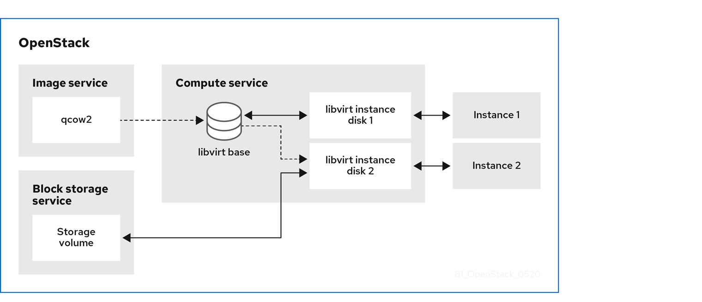
The steps that Compute takes to create a virtual machine instance are:
-
Cache the Image service’s backing image as the
libvirtbase. - Convert the base image to the raw format (if configured).
- Resize the base image to match the VM’s flavor specifications.
- Use the base image to create the libvirt instance disk.
In the diagram above, the #1 instance disk uses ephemeral storage; the #2 disk uses a block-storage volume.
Ephemeral storage is an empty, unformatted, additional disk available to an instance. This storage value is defined by the instance flavor. The value provided by the user must be less than or equal to the ephemeral value defined for the flavor. The default value is 0, meaning no ephemeral storage is created.
The ephemeral disk appears in the same way as a plugged-in hard drive or thumb drive. It is available as a block device which you can check using the lsblk command. You can format it, mount it, and use it however you normally would a block device. There is no way to preserve or reference that disk beyond the instance it is attached to.
Block storage volume is persistant storage available to an instance regardless of the state of the running instance.
6.2. Configuration
You can configure performance tuning and security for your virtual disks by customizing the Compute (nova) configuration files. Compute is configured in custom environment files and heat templates using the parameters detailed in the Compute (nova) Parameters section in the Overcloud Parameters guide. This configuration is generated and stored in the /var/lib/config-data/puppet-generated/<nova_container>/etc/nova/nova.conf file, as detailed in the following table.
Table 6.1. Compute Image Parameters
| Section | Parameter | Description | Default |
|---|---|---|---|
| [DEFAULT] |
|
Whether to convert a
Converting the base to raw uses more space for any image that could have been used directly by the hypervisor (for example, a qcow2 image). If you have a system with slower I/O or less available space, you might want to specify false, trading the higher CPU requirements of compression for that of minimized input bandwidth.
Raw base images are always used with |
|
| [DEFAULT] |
|
Whether to use CoW (Copy on Write) images for
| true |
| [DEFAULT] |
|
Preallocation mode for
Even when not using CoW instance disks, the copy each VM gets is sparse and so the VM may fail unexpectedly at run time with ENOSPC. By running | none |
| [DEFAULT] |
|
Whether to enable direct resizing of the base image by accessing the image over a block device (boolean). This is only necessary for images with older versions of Because this parameter enables the direct mounting of images which might otherwise be disabled for security reasons, it is not enabled by default. |
|
| [DEFAULT] |
|
The default format that is used for a new ephemeral volume. Value can be: |
|
| [DEFAULT] |
|
Number of seconds to wait between runs of the image cache manager, which impacts base caching on libvirt compute nodes. This period is used in the auto removal of unused cached images (see |
|
| [DEFAULT] |
|
Whether to enable the automatic removal of unused base images (checked every |
|
| [DEFAULT] |
|
How old an unused base image must be before being removed from the |
|
|
[ |
|
Image type to use for |
|
Chapter 7. Virtual Machine Instances
OpenStack Compute is the central component that provides virtual machines on demand. Compute interacts with the Identity service for authentication, Image service for images (used to launch instances), and the dashboard service for the user and administrative interface.
Red Hat OpenStack Platform allows you to easily manage virtual machine instances in the cloud. The Compute service creates, schedules, and manages instances, and exposes this functionality to other OpenStack components. This chapter discusses these procedures along with procedures to add components like key pairs, security groups, host aggregates and flavors. The term instance is used by OpenStack to mean a virtual machine instance.
7.1. Manage Instances
Before you can create an instance, you need to ensure certain other OpenStack components (for example, a network, key pair and an image or a volume as the boot source) are available for the instance.
This section discusses the procedures to add these components, create and manage an instance. Managing an instance refers to updating, and logging in to an instance, viewing how the instances are being used, resizing or deleting them.
7.1.1. Add Components
Use the following sections to create a network, key pair and upload an image or volume source. These components are used in the creation of an instance and are not available by default. You will also need to create a new security group to allow SSH access to the user.
- In the dashboard, select Project.
- Select Network > Networks, and ensure there is a private network to which you can attach the new instance (to create a network, see Create a Network section in the Networking Guide).
- Select Compute > Access & Security > Key Pairs, and ensure there is a key pair (to create a key pair, see Section 7.2.1.1, “Create a Key Pair”).
Ensure that you have either an image or a volume that can be used as a boot source:
- To view boot-source images, select the Images tab (to create an image, see Section 1.2.1, “Creating an Image”).
- To view boot-source volumes, select the Volumes tab (to create a volume, see Create a Volume in the Storage Guide).
- Select Compute > Access & Security > Security Groups, and ensure you have created a security group rule (to create a security group, see Project Security Management in the Users and Identity Management Guide).
7.1.2. Launch an Instance
Launch one or more instances from the dashboard.
By default, the Launch Instance form is used to launch instances. However, you can also enable a Launch Instance wizard that simplifies the steps required. For more information, see Appendix B, Enabling the Launch Instance Wizard.
- In the dashboard, select Project > Compute > Instances.
- Click Launch Instance.
- Fill out the fields (those marked with '* ' are required), and click Launch.
One or more instances are created, and launched based on the options provided.
7.1.2.1. Launch Instance Options
The following table outlines the options available when launching a new instance using the Launch Instance form. The same options are also available in the Launch instance wizard.
Table 7.1. Launch Instance Form Options
| Tab | Field | Notes |
|---|---|---|
| Project and User | Project | Select the project from the dropdown list. |
| User | Select the user from the dropdown list. | |
| Details | Availability Zone | Zones are logical groupings of cloud resources in which your instance can be placed. If you are unsure, use the default zone. |
| Instance Name | A name to identify your instance. | |
| Flavor | The flavor determines what resources the instance is given (for example, memory). For default flavor allocations and information on creating new flavors, see Section 7.3, “Manage Flavors”. | |
| Instance Count | The number of instances to create with these parameters. "1" is preselected. | |
| Instance Boot Source | Depending on the item selected, new fields are displayed allowing you to select the source:
| |
| Access and Security | Key Pair | The specified key pair is injected into the instance and is used to remotely access the instance using SSH (if neither a direct login information or a static key pair is provided). Usually one key pair per project is created. |
| Security Groups | Security groups contain firewall rules which filter the type and direction of the instance’s network traffic (for more information on configuring groups, see Project Security Management in the Users and Identity Management Guide). | |
| Networking | Selected Networks | You must select at least one network. Instances are typically assigned to a private network, and then later given a floating IP address to enable external access. |
| Post-Creation | Customization Script Source | You can provide either a set of commands or a script file, which will run after the instance is booted (for example, to set the instance host name or a user password). If Direct Input is selected, write your commands in the Script Data field; otherwise, specify your script file. Note Any script that starts with #cloud-config is interpreted as using the cloud-config syntax (for information on the syntax, see http://cloudinit.readthedocs.org/en/latest/topics/examples.html). |
| Advanced Options | Disk Partition | By default, the instance is built as a single partition and dynamically resized as needed. However, you can choose to manually configure the partitions yourself. |
| Configuration Drive | If selected, OpenStack writes metadata to a read-only configuration drive that is attached to the instance when it boots (instead of to Compute’s metadata service). After the instance has booted, you can mount this drive to view its contents (enables you to provide files to the instance). |
7.1.4. Resize an Instance
To resize an instance (memory or CPU count), you must select a new flavor for the instance that has the right capacity. If you are increasing the size, remember to first ensure that the host has enough space.
- Ensure communication between hosts by setting up each host with SSH key authentication so that Compute can use SSH to move disks to other hosts (for example, compute nodes can share the same SSH key).
Enable resizing on the original host by setting the
allow_resize_to_same_hostparameter to "True" in your Compute environment file.NoteThe
allow_resize_to_same_hostparameter does not resize the instance on the same host. Even if the parameter equals "True" on all Compute nodes, the scheduler does not force the instance to resize on the same host. This is the expected behavior.- In the dashboard, select Project > Compute > Instances.
- Click the instance’s Actions arrow, and select Resize Instance.
- Select a new flavor in the New Flavor field.
If you want to manually partition the instance when it launches (results in a faster build time):
- Select Advanced Options.
- In the Disk Partition field, select Manual.
- Click Resize.
7.1.5. Connect to an Instance
This section discusses the different methods you can use to access an instance console using the dashboard or the command-line interface. You can also directly connect to an instance’s serial port allowing you to debug even if the network connection fails.
7.1.5.1. Access an Instance Console using the Dashboard
The console allows you a way to directly access your instance within the dashboard.
- In the dashboard, select Compute > Instances.
- Click the instance’s More button and select Console. 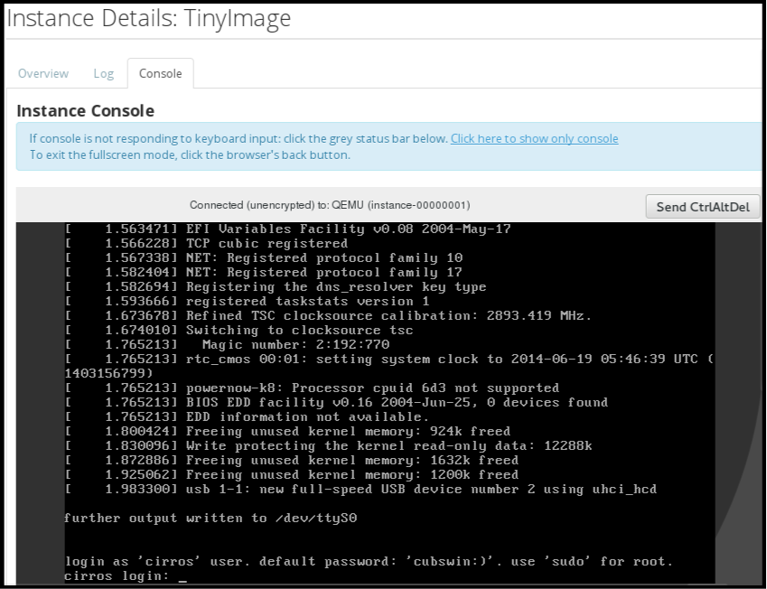
- Log in using the image’s user name and password (for example, a CirrOS image uses cirros/cubswin:)).
7.1.5.2. Directly Connect to a VNC Console
You can directly access an instance’s VNC console using a URL returned by nova get-vnc-console command.
- Browser
To obtain a browser URL, use:
$ nova get-vnc-console INSTANCE_ID novnc- Java Client
To obtain a Java-client URL, use:
$ nova get-vnc-console INSTANCE_ID xvpvnc
nova-xvpvncviewer provides a simple example of a Java client. To download the client, use:
# git clone https://github.com/cloudbuilders/nova-xvpvncviewer # cd nova-xvpvncviewer/viewer # make
Run the viewer with the instance’s Java-client URL:
# java -jar VncViewer.jar URLThis tool is provided only for customer convenience, and is not officially supported by Red Hat.
7.1.6. View Instance Usage
The following usage statistics are available:
Per Project
To view instance usage per project, select Project > Compute > Overview. A usage summary is immediately displayed for all project instances.
You can also view statistics for a specific period of time by specifying the date range and clicking Submit.
Per Hypervisor
If logged in as an administrator, you can also view information for all projects. Click Admin > System and select one of the tabs. For example, the Resource Usage tab offers a way to view reports for a distinct time period. You might also click Hypervisors to view your current vCPU, memory, or disk statistics.
NoteThe
vCPU Usagevalue (x of y) reflects the number of total vCPUs of all virtual machines (x) and the total number of hypervisor cores (y).
7.1.7. Delete an Instance
- In the dashboard, select Project > Compute > Instances, and select your instance.
- Click Terminate Instance.
Deleting an instance does not delete its attached volumes; you must do this separately (see Delete a Volume in the Storage Guide).
7.1.8. Manage Multiple Instances at Once
If you need to start multiple instances at the same time (for example, those that were down for compute or controller maintenance) you can do so easily at Project > Compute > Instances:
- Click the check boxes in the first column for the instances that you want to start. If you want to select all of the instances, click the check box in the first row in the table.
- Click More Actions above the table and select Start Instances.
Similarly, you can shut off or soft reboot multiple instances by selecting the respective actions.
7.2. Manage Instance Security
You can manage access to an instance by assigning it the correct security group (set of firewall rules) and key pair (enables SSH user access). Further, you can assign a floating IP address to an instance to enable external network access. The sections below outline how to create and manage key pairs, security groups, floating IP addresses and logging in to an instance using SSH. There is also a procedure for injecting an admin password in to an instance.
For information on managing security groups, see Project Security Management in the Users and Identity Management Guide.
7.2.1. Manage Key Pairs
Key pairs provide SSH access to the instances. Each time a key pair is generated, its certificate is downloaded to the local machine and can be distributed to users. Typically, one key pair is created for each project (and used for multiple instances).
You can also import an existing key pair into OpenStack.
7.2.1.1. Create a Key Pair
- In the dashboard, select Project > Compute > Access & Security.
- On the Key Pairs tab, click Create Key Pair.
- Specify a name in the Key Pair Name field, and click Create Key Pair.
When the key pair is created, a key pair file is automatically downloaded through the browser. Save this file for later connections from external machines. For command-line SSH connections, you can load this file into SSH by executing:
# ssh-add ~/.ssh/os-key.pem
7.2.1.2. Import a Key Pair
- In the dashboard, select Project > Compute > Access & Security.
- On the Key Pairs tab, click Import Key Pair.
- Specify a name in the Key Pair Name field, and copy and paste the contents of your public key into the Public Key field.
- Click Import Key Pair.
7.2.1.3. Delete a Key Pair
- In the dashboard, select Project > Compute > Access & Security.
- On the Key Pairs tab, click the key’s Delete Key Pair button.
7.2.2. Create a Security Group
Security groups are sets of IP filter rules that can be assigned to project instances, and which define networking access to the instance. Security group are project specific; project members can edit the default rules for their security group and add new rule sets.
- In the dashboard, select the Project tab, and click Compute > Access & Security.
- On the Security Groups tab, click + Create Security Group.
- Provide a name and description for the group, and click Create Security Group.
For more information on managing project security, see Project Security Management in the Users and Identity Management Guide.
7.2.3. Create, Assign, and Release Floating IP Addresses
By default, an instance is given an internal IP address when it is first created. However, you can enable access through the public network by creating and assigning a floating IP address (external address). You can change an instance’s associated IP address regardless of the instance’s state.
Projects have a limited range of floating IP address that can be used (by default, the limit is 50), so you should release these addresses for reuse when they are no longer needed. Floating IP addresses can only be allocated from an existing floating IP pool, see Create Floating IP Pools in the Networking Guide.
7.2.3.1. Allocate a Floating IP to the Project
- In the dashboard, select Project > Compute > Access & Security.
- On the Floating IPs tab, click Allocate IP to Project.
- Select a network from which to allocate the IP address in the Pool field.
- Click Allocate IP.
7.2.3.2. Assign a Floating IP
- In the dashboard, select Project > Compute > Access & Security.
- On the Floating IPs tab, click the address' Associate button.
Select the address to be assigned in the IP address field.
NoteIf no addresses are available, you can click the
+button to create a new address.- Select the instance to be associated in the Port to be Associated field. An instance can only be associated with one floating IP address.
- Click Associate.
7.2.3.3. Release a Floating IP
- In the dashboard, select Project > Compute > Access & Security.
- On the Floating IPs tab, click the address' menu arrow (next to the Associate/Disassociate button).
- Select Release Floating IP.
7.2.4. Log in to an Instance
Prerequisites:
- Ensure that the instance’s security group has an SSH rule (see Project Security Management in the Users and Identity Management Guide).
- Ensure the instance has a floating IP address (external address) assigned to it (see Section 7.2.3, “Create, Assign, and Release Floating IP Addresses”).
- Obtain the instance’s key-pair certificate. The certificate is downloaded when the key pair is created; if you did not create the key pair yourself, ask your administrator (see Section 7.2.1, “Manage Key Pairs”).
To first load the key pair file into SSH, and then use ssh without naming it:
Change the permissions of the generated key-pair certificate.
$ chmod 600 os-key.pem
Check whether
ssh-agentis already running:# ps -ef | grep ssh-agent
If not already running, start it up with:
# eval `ssh-agent`
On your local machine, load the key-pair certificate into SSH. For example:
$ ssh-add ~/.ssh/os-key.pem
- You can now SSH into the file with the user supplied by the image.
The following example command shows how to SSH into the Red Hat Enterprise Linux guest image with the user cloud-user:
$ ssh cloud-user@192.0.2.24
You can also use the certificate directly. For example:
$ ssh -i /myDir/os-key.pem cloud-user@192.0.2.24
7.2.5. Inject an admin Password Into an Instance
You can inject an admin (root) password into an instance using the following procedure.
In the
/etc/openstack-dashboard/local_settingsfile, set thechange_set_passwordparameter value toTrue.can_set_password: True
Set the
inject_passwordparameter to "True" in your Compute environment file.inject_password=true
Restart the Compute service.
# service nova-compute restart
When you use the nova boot command to launch a new instance, the output of the command displays an adminPass parameter. You can use this password to log into the instance as the root user.
The Compute service overwrites the password value in the /etc/shadow file for the root user. This procedure can also be used to activate the root account for the KVM guest images. For more information on how to use KVM guest images, see Section 1.2.1.1, “Use a KVM Guest Image With Red Hat OpenStack Platform”
You can also set a custom password from the dashboard. To enable this, run the following command after you have set can_set_password parameter to true.
# systemctl restart httpd.service
The newly added admin password fields are as follows:
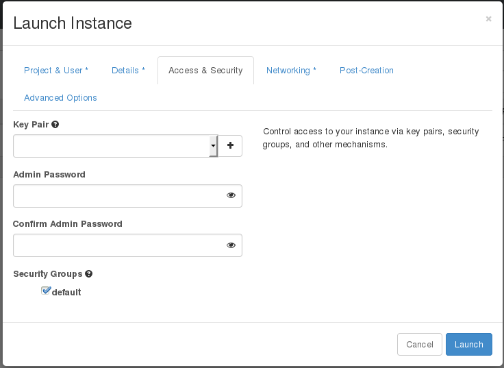
These fields can be used when you launch or rebuild an instance.
7.3. Manage Flavors
Each created instance is given a flavor (resource template), which determines the instance’s size and capacity. Flavors can also specify secondary ephemeral storage, swap disk, metadata to restrict usage, or special project access (none of the default flavors have these additional attributes defined).
Table 7.3. Default Flavors
| Name | vCPUs | RAM | Root Disk Size |
|---|---|---|---|
| m1.tiny | 1 | 512 MB | 1 GB |
| m1.small | 1 | 2048 MB | 20 GB |
| m1.medium | 2 | 4096 MB | 40 GB |
| m1.large | 4 | 8192 MB | 80 GB |
| m1.xlarge | 8 | 16384 MB | 160 GB |
The majority of end users will be able to use the default flavors. However, you can create and manage specialized flavors. For example, you can:
- Change default memory and capacity to suit the underlying hardware needs.
- Add metadata to force a specific I/O rate for the instance or to match a host aggregate.
Behavior set using image properties overrides behavior set using flavors (for more information, see Section 1.2, “Manage images”).
7.3.1. Update Configuration Permissions
By default, only administrators can create flavors or view the complete flavor list (select Admin > System > Flavors). To allow all users to configure flavors, specify the following in the /etc/nova/policy.json file (nova-api server):
"compute_extension:flavormanage": "",
7.3.2. Create a Flavor
- As an admin user in the dashboard, select Admin > System > Flavors.
Click Create Flavor, and specify the following fields:
Table 7.4. Flavor Options
Tab Field Description Flavor Information
Name
Unique name.
ID
Unique ID. The default value,
auto, generates a UUID4 value, but you can also manually specify an integer or UUID4 value.VCPUs
Number of virtual CPUs.
RAM (MB)
Memory (in megabytes).
Root Disk (GB)
Ephemeral disk size (in gigabytes); to use the native image size, specify
0. This disk is not used if Instance Boot Source=Boot from Volume.Epehemeral Disk (GB)
Secondary ephemeral disk size (in gigabytes) available to an instance. This disk is destroyed when an instance is deleted.
The default value is
0, which implies that no ephemeral disk is created.Swap Disk (MB)
Swap disk size (in megabytes).
Flavor Access
Selected Projects
Projects which can use the flavor. If no projects are selected, all projects have access (
Public=Yes).- Click Create Flavor.
7.3.3. Update General Attributes
- As an admin user in the dashboard, select Admin > System > Flavors.
- Click the flavor’s Edit Flavor button.
- Update the values, and click Save.
7.3.4. Update Flavor Metadata
In addition to editing general attributes, you can add metadata to a flavor (extra_specs), which can help fine-tune instance usage. For example, you might want to set the maximum-allowed bandwidth or disk writes.
- Pre-defined keys determine hardware support or quotas. Pre-defined keys are limited by the hypervisor you are using (for libvirt, see Table 7.5, “Libvirt Metadata”).
-
Both pre-defined and user-defined keys can determine instance scheduling. For example, you might specify
SpecialComp=True; any instance with this flavor can then only run in a host aggregate with the same key-value combination in its metadata.
7.3.4.1. View Metadata
- As an admin user in the dashboard, select Admin > System > Flavors.
-
Click the flavor’s Metadata link (
YesorNo). All current values are listed on the right-hand side under Existing Metadata.
7.3.4.2. Add Metadata
You specify a flavor’s metadata using a key/value pair.
- As an admin user in the dashboard, select Admin > System > Flavors.
-
Click the flavor’s Metadata link (
YesorNo). All current values are listed on the right-hand side under Existing Metadata. - Under Available Metadata, click on the Other field, and specify the key you want to add (see Table 7.5, “Libvirt Metadata”).
- Click the + button; you can now view the new key under Existing Metadata.
Fill in the key’s value in its right-hand field.
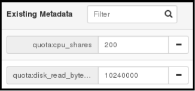
- When finished with adding key-value pairs, click Save.
Table 7.5. Libvirt Metadata
| Key | Description |
|---|---|
|
| Action that configures support limits per instance. Valid actions are:
Example: |
|
| Definition of NUMA topology for the instance. For flavors whose RAM and vCPU allocations are larger than the size of NUMA nodes in the compute hosts, defining NUMA topology enables hosts to better utilize NUMA and improve performance of the guest OS. NUMA definitions defined through the flavor override image definitions. Valid definitions are:
Note
If the values of Example when the instance has 8 vCPUs and 4GB RAM:
The scheduler looks for a host with 2 NUMA nodes with the ability to run 6 CPUs + 3072 MB, or 3 GB, of RAM on one node, and 2 CPUS + 1024 MB, or 1 GB, of RAM on another node. If a host has a single NUMA node with capability to run 8 CPUs and 4 GB of RAM, it will not be considered a valid match. |
|
| An instance watchdog device can be used to trigger an action if the instance somehow fails (or hangs). Valid actions are:
Example: |
|
| You can use this parameter to specify the NUMA affinity policy for PCI passthrough devices and SR-IOV interfaces. Set to one of the following valid values:
Example: |
|
|
A random-number generator device can be added to an instance using its image properties (see If the device has been added, valid actions are:
Example: |
|
| Maximum permitted RAM to be allowed for video devices (in MB).
Example: |
|
| Enforcing limit for the instance. Valid options are:
Example: In addition, the VMware driver supports the following quota options, which control upper and lower limits for CPUs, RAM, disks, and networks, as well as shares, which can be used to control relative allocation of available resources among tenants:
|
7.4. Schedule Hosts
The Compute scheduling service determines on which host, or host aggregate, to place an instance. As an administrator, you can influence where the scheduler places an instance. For example, you might want to limit scheduling to hosts in a certain group or with the right RAM.
You can configure the following components:
- Filters - Determine the initial set of hosts on which an instance might be placed (see Section 7.4.1, “Configure Scheduling Filters”).
- Weights - When filtering is complete, the resulting set of hosts are prioritized using the weighting system. The highest weight has the highest priority (see Section 7.4.2, “Configure Scheduling Weights”).
-
Scheduler service - There are a number of configuration options in the
/var/lib/config-data/puppet-generated/<nova_container>/etc/nova/nova.conffile (on the scheduler host), which determine how the scheduler executes its tasks, and handles weights and filters. - Placement service - Specify the traits an instance requires a host to have, such as the type of storage disk, or the Intel CPU instruction set extension (see Section 7.4.3, “Configure Placement Service Traits”).
In the following diagram, both host 1 and 3 are eligible after filtering. Host 1 has the highest weight and therefore has the highest priority for scheduling.
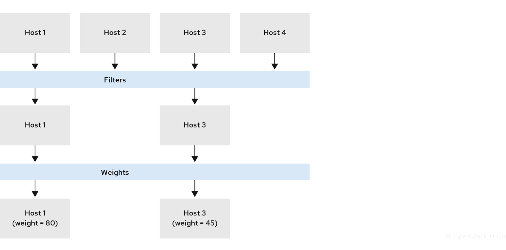
7.4.1. Configure Scheduling Filters
You define the filters you want the scheduler to use using the NovaSchedulerDefaultFilters parameter in your Compute environment file. Filters can be added or removed.
The default configuration runs the following filters in the scheduler:
- RetryFilter
- AvailabilityZoneFilter
- ComputeFilter
- ComputeCapabilitiesFilter
- ImagePropertiesFilter
- ServerGroupAntiAffinityFilter
- ServerGroupAffinityFilter
Some filters use information in parameters passed to the instance in:
-
The
nova bootcommand. - The instance’s flavor (see Section 7.3.4, “Update Flavor Metadata”)
- The instance’s image (see Appendix A, Image Configuration Parameters).
All available filters are listed in the following table.
Table 7.6. Scheduling Filters
| Filter | Description |
|---|---|
|
| Only passes hosts in host aggregates whose metadata matches the instance’s image metadata; only valid if a host aggregate is specified for the instance. For more information, see Section 1.2.1, “Creating an Image”. |
|
| Metadata in the host aggregate must match the host’s flavor metadata. For more information, see Section 7.3.4, “Update Flavor Metadata”. |
|
To use this filter in the same
| |
|
|
A host with the specified Note The tenant can still place instances on other hosts. |
|
| Passes all available hosts (however, does not disable other filters). |
|
| Filters using the instance’s specified availability zone. |
|
|
Ensures Compute metadata is read correctly. Anything before the |
|
| Passes only hosts that are operational and enabled. |
|
|
Enables an instance to build on a host that is different from one or more specified hosts. Specify |
|
| Only passes hosts that match the instance’s image properties. For more information, see Section 1.2.1, “Creating an Image”. |
|
|
Passes only isolated hosts running isolated images that are specified using |
|
| Recognises and uses an instance’s custom JSON filters:
|
|
The filter is specified as a query hint in the
| |
|
|
Use this filter to limit scheduling to Compute nodes that report the metrics configured by using Tip
By default, the Compute scheduling service updates the metrics every 60 seconds. To ensure the metrics are up-to-date, you can increase the frequency at which the metrics data is refreshed using the parameter_defaults:
ComputeExtraConfig:
nova::config::nova_config:
DEFAULT/update_resources_interval:
value: '2' |
|
| Filters out hosts based on its NUMA topology. If the instance has no topology defined, any host can be used. The filter tries to match the exact NUMA topology of the instance to those of the host (it does not attempt to pack the instance onto the host). The filter also looks at the standard over-subscription limits for each NUMA node, and provides limits to the compute host accordingly. |
|
|
Filters out hosts that have failed a scheduling attempt; valid if |
|
|
Passes one or more specified hosts; specify hosts for the instance using the |
|
| Only passes hosts for a specific server group:
|
|
| Only passes hosts in a server group that do not already host an instance:
|
|
|
Only passes hosts on the specified IP subnet range specified by the instance’s cidr and
|
7.4.2. Configure Scheduling Weights
Hosts can be weighted for scheduling; the host with the largest weight (after filtering) is selected. All weighers are given a multiplier that is applied after normalising the node’s weight. A node’s weight is calculated as:
w1_multiplier * norm(w1) + w2_multiplier * norm(w2) + ...
You can configure weight options in the Compute node configuration file.
Table 7.7. Configuration options for Scheduling service weights
| Configuration option | Description |
|---|---|
|
| Use this parameter to configure which of the following attributes to use for calculating the weight of each host:
Type: String |
|
| Use this parameter to specify the multiplier to use to weigh hosts based on the available RAM. Set to a positive value to prefer hosts with more available RAM, which spreads instances across many hosts. Set to a negative value to prefer hosts with less available RAM, which fills up (stacks) hosts as much as possible before scheduling to a less-used host. The absolute value, whether positive or negative, controls how strong the RAM weigher is relative to other weighers.
By default, the scheduler spreads instances across all hosts evenly ( Type: Floating point |
|
| Use this parameter to specify the multiplier to use to weigh hosts based on the available disk space. Set to a positive value to prefer hosts with more available disk space, which spreads instances across many hosts. Set to a negative value to prefer hosts with less available disk space, which fills up (stacks) hosts as much as possible before scheduling to a less-used host. The absolute value, whether positive or negative, controls how strong the disk weigher is relative to other weighers.
By default, the scheduler spreads instances across all hosts evenly ( Type: Floating point |
|
| Use this parameter to specify the multiplier to use to weigh hosts based on the available vCPUs. Set to a positive value to prefer hosts with more available vCPUs, which spreads instances across many hosts. Set to a negative value to prefer hosts with less available vCPUs, which fills up (stacks) hosts as much as possible before scheduling to a less-used host. The absolute value, whether positive or negative, controls how strong the vCPU weigher is relative to other weighers.
By default, the scheduler spreads instances across all hosts evenly ( Type: Floating point |
|
| Use this parameter to specify the multiplier to use to weigh hosts based on the host workload. Set to a negative value to prefer hosts with lighter workloads, which distributes the workload across more hosts. Set to a positive value to prefer hosts with heavier workloads, which schedules instances onto hosts that are already busy. The absolute value, whether positive or negative, controls how strong the I/O operations weigher is relative to other weighers.
By default, the scheduler distributes the workload across more hosts ( Type: Floating point |
|
| Use this parameter to specify the multiplier to use to weigh hosts based on recent build failures. Set to a positive value to increase the significance of build failures recently reported by the host. Hosts with recent build failures are then less likely to be chosen.
Set to Default: 1000000.0 Type: Floating point |
|
| Use this parameter to specify the multiplier to use to weigh hosts during a cross-cell move. This option determines how much weight is placed on a host which is within the same source cell when moving an instance. By default, the scheduler prefers hosts within the same source cell when migrating an instance. Set to a positive value to prefer hosts within the same cell the instance is currently running. Set to a negative value to prefer hosts located in a different cell from that where the instance is currently running. Default: 1000000.0 Type: Floating point |
|
| Use this parameter to specify the multiplier to use to weigh hosts based on the number of PCI devices on the host and the number of PCI devices requested by an instance. If an instance requests PCI devices, then the more PCI devices a Compute node has the higher the weight allocated to the Compute node. For example, if there are three hosts available, one with a single PCI device, one with multiple PCI devices and one without any PCI devices, then the Compute scheduler prioritizes these hosts based on the demands of the instance. The first host should be preferred if the instance requests one PCI device, the second host if the instance requires multiple PCI devices and the third host if the instance does not request a PCI device. Configure this option to prevent non-PCI instances from occupying resources on hosts with PCI devices. Default: 1.0 Type: Positive floating point |
|
| Use this parameter to specify the size of the subset of filtered hosts from which to select the host. Must be set to at least 1. A value of 1 selects the first host returned by the weighing functions. Any value less than 1 is ignored and 1 is used instead. Set to a value greater than 1 to prevent multiple scheduler processes handling similar requests selecting the same host, creating a potential race condition. By selecting a host randomly from the N hosts that best fit the request, the chance of a conflict is reduced. However, the higher you set this value, the less optimal the chosen host may be for a given request. Default: 1 Type: Integer |
|
| Use this parameter to specify the multiplier to use to weigh hosts for group soft-affinity. Default: 1.0 Type: Positive floating point |
|
| Use this parameter to specify the multiplier to use to weigh hosts for group soft-anti-affinity. Default: 1.0 Type: Positive floating point |
|
|
Use this parameter to specify the multiplier to use for weighting metrics. By default, Set to a number greater than 1.0 to increase the effect of the metric on the overall weight. Set to a number between 0.0 and 1.0 to reduce the effect of the metric on the overall weight. Set to 0.0 to ignore the metric value and return the value of the ‘weight_of_unavailable’ option. Set to a negative number to prioritize the host with lower metrics, and stack instances in hosts. Default: 1.0 Type: Floating point |
|
| Use this parameter to specify the metrics to use for weighting, and the ratio to use to calculate the weight of each metric. Valid metric names:
Example:
Type: Comma-separated list of |
|
|
Use this parameter to specify how to handle configured
Type: Boolean |
|
|
Use this parameter to specify the weight to use if any Default: -10000.0 Type: Floating point |
7.4.3. Configure Placement Service Traits
The placement service tracks the inventory and usage of resource providers, which can be a compute node, a shared storage pool, or an IP allocation pool. Any service that needs to manage the selection and consumption of resources can use the placement service.
To query the placement service, install the python3-osc-placement package on the undercloud.
Each resource provider has a set of traits. Traits are the qualitative aspects of a resource provider, for example, the type of storage disk, or the Intel CPU instruction set extension. An instance can specify which of these traits it requires.
The Compute (nova) service interacts with the placement service when it creates instances, with the nova-compute and nova-scheduler processes.
nova-compute- Creates the resource provider record.
- Sets the inventory that describes the available quantitative resources, such as the available vCPUs.
-
Sets the traits that describe qualitative aspects of the resource provider. The
libvirtvirtualization driver reports these traits to the placement service (see Section 7.4.3.1, “libvirtvirtualization driver capabilities as placement service traits” for details).
nova-scheduler- Sends a request to the placement service for a list of allocation candidates.
- Decides which destination host to build a server on, based on the traits required by the instance.
7.4.3.1. libvirt virtualization driver capabilities as placement service traits
You can use the capabilities of libvirt virtualization drivers as placement service traits. The traits that you can specify are defined in the os-traits library, for example:
-
COMPUTE_TRUSTED_CERTS -
COMPUTE_NET_ATTACH_INTERFACE_WITH_TAG -
COMPUTE_IMAGE_TYPE_RAW -
HW_CPU_X86_AVX -
HW_CPU_X86_AVX512VL -
HW_CPU_X86_AVX512CD
See the os-traits library for a catalog of the standardized constants that an instance can request for a particular hardware, virtualization, storage, network, or device trait.
The following libvirt virtualization drivers automatically report the features that a host CPU provides, such as the type of instruction set, for example, SSE4, AVX, or AVX-512, to the placement service:
- Libvirt QEMU (x86)
- Libvirt KVM (x86)
- Libvirt KVM (ppc64)
If you are using one of these drivers, you can configure the flavor extra specs or image metadata for an instance to request a resource provider with specific CPU features.
7.4.3.2. Using placement service traits to specify resource provider requirements
You can use one of the following methods to specify the required resource provider traits for an instance:
In the following example procedures, the instance requires a particular type of CPU.
Prerequisites
-
The placement service package,
python3-osc-placement, is installed on the undercloud. Your deployment uses one of the following
libvirtvirtualization drivers:- Libvirt QEMU (x86)
- Libvirt KVM (x86)
- Libvirt KVM (ppc64)
Procedure: Requesting a trait using image metadata
Create a new image or modify an existing one to set the required trait:
$ openstack image create ... $IMAGE $ openstack image set --property trait:HW_CPU_X86_AVX512BW=required $IMAGE
Boot an instance using the image:
$ openstack server create --image=$IMAGE ... $SERVER_NAME
Result: The instance is created on a host that supports AVX-512.
Procedure: Requesting a trait using flavor extra specs
Create a new flavor or modify an existing one to set the required trait:
$ openstack flavor create ... $FLAVOR $ openstack flavor set --property trait:HW_CPU_X86_AVX512BW=required $FLAVOR
Boot an instance using the flavor:
$ openstack server create --flavor=$FLAVOR ... $SERVER_NAME
Result: The instance is created on a host that supports AVX-512.
7.4.4. Configuring a guaranteed minimum bandwidth QoS
You can create instances that request a guaranteed minimum bandwidth by using a Quality of Service (QoS) policy.
QoS policies with a guaranteed minimum bandwidth rule are assigned to ports on a specific physical network. When you create an instance that uses the configured port, the Compute scheduling service selects a host for the instance that satisfies this request. The Compute scheduling service checks the Placement service for the amount of bandwidth reserved by other instances on each physical interface, before selecting a host to deploy an instance on.
Limitations/Restrictions
- You can only assign a guaranteed minimum bandwidth QoS policy when creating a new instance. You cannot assign a guaranteed minimum bandwidth QoS policy to instances that are already running, as the Compute service only updates resource usage for an instance in placement during creation or move operations, which means the minimum bandwidth available to the instance cannot be guaranteed.
You cannot live migrate an instance that uses a port that has resource requests, such as a guaranteed minimum bandwidth QoS policy. Run the following command to check if a port has resource requests:
$ openstack port show <port_name/port_id>
Prerequisites
- A QoS policy is available that has a minimum bandwidth rule. For more information, see Configuring Quality of Service (QoS) policies
Procedure
List the available QoS policies:
(overcloud) $ openstack network qos policy list
----------------------------------------------------------------+ | ID | Name | Shared | Default | Project |----------------------------------------------------------------+ | 6d771447-3cf4-4ef1-b613-945e990fa59f | policy2 | True | False | ba4de51bf7694228a350dd22b7a3dc24 | | 78a24462-e3c1-4e66-a042-71131a7daed5 | policy1 | True | False | ba4de51bf7694228a350dd22b7a3dc24 | | b80acc64-4fc2-41f2-a346-520d7cfe0e2b | policy0 | True | False | ba4de51bf7694228a350dd22b7a3dc24 |----------------------------------------------------------------+Check the rules of each of the available policies to determine which has the required minimum bandwidth:
(overcloud) $ openstack network qos policy show policy0
----------------------------------------------------------------------------------------------------+ | Field | Value |----------------------------------------------------------------------------------------------------+ | description | | | id | b80acc64-4fc2-41f2-a346-520d7cfe0e2b | | is_default | False | | location | cloud=', project.domain_id=, project.domain_name='Default, project.id=ba4de51bf7694228a350dd22b7a3dc24, project.name=admin, region_name=regionOne, zone= | | name | policy0 | | project_id | ba4de51bf7694228a350dd22b7a3dc24 | | rules | [{min_kbps: 100000, direction: egress, id: d46218fe-9218-4e96-952b-9f45a5cb3b3c, qos_policy_id: b80acc64-4fc2-41f2-a346-520d7cfe0e2b, type: minimum_bandwidth}, {min_kbps: 100000, direction: ingress, id: 1202c4e3-a03a-464c-80d5-0bf90bb74c9d, qos_policy_id: b80acc64-4fc2-41f2-a346-520d7cfe0e2b, type: minimum_bandwidth}] | | shared | True | | tags | [] |----------------------------------------------------------------------------------------------------+Create a port from the appropriate policy:
(overcloud) $ openstack port create port-normal-qos --network net0 --qos-policy policy0
Create an instance, specifying the NIC port to use:
$ openstack server create --flavor cirros256 --image cirros-0.3.5-x86_64-disk --nic port-id=port-normal-qos --wait qos_instance
An "ACTIVE" status in the output indicates that you have successfully created the instance on a host that can provide the requested guaranteed minimum bandwidth.
7.4.4.1. Removing a guaranteed minimum bandwidth QoS from an instance
If you want to lift the guaranteed minimum bandwidth QoS policy restriction from an instance, you can detach the interface.
To detach the interface, enter the following command:
$ openstack server remove port <vm_name|vm_id> <port_name|port_id>
7.4.5. Reserve NUMA Nodes with PCI Devices
Compute uses the filter scheduler to prioritize hosts with PCI devices for instances requesting PCI. The hosts are weighted using the PCIWeigher option, based on the number of PCI devices available on the host and the number of PCI devices requested by an instance. If an instance requests PCI devices, then the hosts with more PCI devices are allocated a higher weight than the others. If an instance is not requesting PCI devices, then prioritization does not take place.
This feature is especially useful in the following cases:
- As an operator, if you want to reserve nodes with PCI devices (typically expensive and with limited resources) for guest instances that request them.
- As a user launching instances, you want to ensure that PCI devices are available when required.
For this value to be considered, one of the following values must be added to the NovaSchedulerDefaultFilters parameter in your Compute environment file: PciPassthroughFilter or NUMATopologyFilter.
The pci_weight_multiplier configuration option must be a positive value.
7.4.6. Configure Emulator Threads to run on Dedicated Physical CPU
The Compute scheduler determines the CPU resource utilization and places instances based on the number of virtual CPUs (vCPUs) in the flavor. There are a number of hypervisor operations that are performed on the host, on behalf of the guest instance, for example, with QEMU, there are threads used for the QEMU main event loop, asynchronous I/O operations and so on and these operations need to be accounted and scheduled separately.
The libvirt driver implements a generic placement policy for KVM which allows QEMU emulator threads to float across the same physical CPUs (pCPUs) that the vCPUs are running on. This leads to the emulator threads using time borrowed from the vCPUs operations. When you need a guest to have dedicated vCPU allocation, it is necessary to allocate one or more pCPUs for emulator threads. It is therefore necessary to describe to the scheduler any other CPU usage that might be associated with a guest and account for that during placement.
In an NFV deployment, to avoid packet loss, you have to make sure that the vCPUs are never preempted.
Before you enable the emulator threads placement policy on a flavor, check that the following heat parameters are defined as follows:
-
NovaComputeCpuSharedSet: Set this parameter to a list of CPUs defined to run emulator threads. -
NovaSchedulerDefaultFilters: IncludeNUMATopologyFilterin the list of defined filters.
You can define or change heat parameter values on an active cluster, and then redeploy for those changes to take effect.
To isolate emulator threads, you must use a flavor configured as follows:
# openstack flavor set FLAVOR-NAME \ --property hw:cpu_policy=dedicated \ --property hw:emulator_threads_policy=share
7.5. Manage Instance Snapshots
An instance snapshot allows you to create a new image from an instance. This is very convenient for upgrading base images or for taking a published image and customizing it for local use.
The difference between an image that you upload directly to the Image Service and an image that you create by snapshot is that an image created by snapshot has additional properties in the Image Service database. These properties are found in the image_properties table and include the following parameters:
Table 7.8. Snapshot Options
| Name | Value |
|---|---|
| image_type | snapshot |
| instance_uuid | <uuid of instance that was snapshotted> |
| base_image_ref | <uuid of original image of instance that was snapshotted> |
| image_location | snapshot |
Snapshots allow you to create new instances based on that snapshot, and potentially restore an instance to that state. Moreover, this can be performed while the instance is running.
By default, a snapshot is accessible to the users and projects that were selected while launching an instance that the snapshot is based on.
7.5.1. Create an Instance Snapshot
If you intend to use an instance snapshot as a template to create new instances, you must ensure that the disk state is consistent. Before you create a snapshot, set the snapshot image metadata property os_require_quiesce=yes. For example,
$ glance image-update IMAGE_ID --property os_require_quiesce=yes
For this to work, the guest should have the qemu-guest-agent package installed, and the image should be created with the metadata property parameter hw_qemu_guest_agent=yes set. For example,
$ glance image-create --name NAME \ --disk-format raw \ --container-format bare \ --file FILE_NAME \ --is-public True \ --property hw_qemu_guest_agent=yes \ --progress
If you unconditionally enable the hw_qemu_guest_agent=yes parameter, then you are adding another device to the guest. This consumes a PCI slot, and will limit the number of other devices you can allocate to the guest. It also causes Windows guests to display a warning message about an unknown hardware device.
For these reasons, setting the hw_qemu_guest_agent=yes parameter is optional, and the parameter should be used for only those images that require the QEMU guest agent.
- In the dashboard, select Project > Compute > Instances.
- Select the instance from which you want to create a snapshot.
- In the Actions column, click Create Snapshot.
In the Create Snapshot dialog, enter a name for the snapshot and click Create Snapshot.
The Images category now shows the instance snapshot.
To launch an instance from a snapshot, select the snapshot and click Launch.
7.5.2. Manage a Snapshot
- In the dashboard, select Project > Images.
- All snapshots you created, appear under the Project option.
For every snapshot you create, you can perform the following functions, using the dropdown list:
- Use the Create Volume option to create a volume and entering the values for volume name, description, image source, volume type, size and availability zone. For more information, see Create a Volume in the Storage Guide.
- Use the Edit Image option to update the snapshot image by updating the values for name, description, Kernel ID, Ramdisk ID, Architecture, Format, Minimum Disk (GB), Minimum RAM (MB), public or private. For more information, see Section 1.2.3, “Update an image”.
- Use the Delete Image option to delete the snapshot.
7.5.3. Rebuild an Instance to a State in a Snapshot
In an event that you delete an instance on which a snapshot is based, the snapshot still stores the instance ID. You can check this information using the nova image-list command and use the snapshot to restore the instance.
- In the dashboard, select Project > Compute > Images.
- Select the snapshot from which you want to restore the instance.
- In the Actions column, click Launch Instance.
- In the Launch Instance dialog, enter a name and the other details for the instance and click Launch.
For more information on launching an instance, see Section 7.1.2, “Launch an Instance”.
7.5.4. Consistent Snapshots
Previously, file systems had to be quiesced manually (fsfreeze) before taking a snapshot of active instances for consistent backups.
Compute’s libvirt driver automatically requests the QEMU Guest Agent to freeze the file systems (and applications if fsfreeze-hook is installed) during an image snapshot. Support for quiescing file systems enables scheduled, automatic snapshots at the block device level.
This feature is only valid if the QEMU Guest Agent is installed (qemu-ga) and the image metadata enables the agent (hw_qemu_guest_agent=yes)
Snapshots should not be considered a substitute for an actual system backup.
7.6. Use Rescue Mode for Instances
Compute has a method to reboot a virtual machine in rescue mode. Rescue mode provides a mechanism for access when the virtual machine image renders the instance inaccessible. A rescue virtual machine allows a user to fix their virtual machine by accessing the instance with a new root password. This feature is useful if an instance’s filesystem is corrupted. By default, rescue mode starts an instance from the initial image attaching the current boot disk as a secondary one.
7.6.1. Preparing an Image for a Rescue Mode Instance
Due to the fact that both the boot disk and the disk for rescue mode have same UUID, sometimes the virtual machine can be booted from the boot disk instead of the disk for rescue mode.
To avoid this issue, you should create a new image as rescue image based on the procedure in Section 1.2.1, “Creating an Image”:
The rescue image is stored in glance and configured in the nova.conf as a default, or you can select when you do the rescue.
7.6.1.1. Rescue Image if Using ext4 Filesystem
When the base image uses ext4 filesystem, you can create a rescue image from it using the following procedure:
Change the UUID to a random value using the
tune2fscommand:# tune2fs -U random /dev/DEVICE_NODE
Here DEVICE_NODE is the root device node (for example,
sda,vda, and so on).Verify the details of the filesystem, including the new UUID:
# tune2fs -l
-
Update the
/etc/fstabto use the new UUID. You may need to repeat this for any additional partitions you have, that are mounted in thefstabby UUID. -
Update the
/boot/grub2/grub.conffile and update the UUID parameter with the new UUID of the root disk. - Shut down and use this image as your rescue image. This will cause the rescue image to have a new random UUID that will not conflict with the instance that you are rescuing.
The XFS filesystem cannot change the UUID of the root device on the running virtual machine. Reboot the virtual machine until the virtual machine is launched from the disk for rescue mode.
7.6.2. Adding the Rescue Image to the OpenStack Image Service
When you have completed modifying the UUID of your image, use the following commands to add the generated rescue image to the OpenStack Image service:
Add the rescue image to the Image service:
# glance image-create --name IMAGE_NAME --disk-format qcow2 \ --container-format bare --is-public True --file IMAGE_PATH
Here IMAGE_NAME is the name of the image, IMAGE_PATH is the location of the image.
Use the
image-listcommand to obtain the IMAGE_ID required for launching an instace in the rescue mode.# glance image-list
You can also upload an image using the OpenStack Dashboard, see Section 1.2.2, “Upload an image”.
7.6.3. Launching an Instance in Rescue Mode
Since you need to rescue an instance with a specific image, rather than the default one, use the
--imageparameter:# nova rescue --image IMAGE_ID VIRTUAL_MACHINE_ID
Here IMAGE_ID is the ID of the image you want to use and VIRTUAL_MACHINE_ID is ID of a virtual machine that you want to rescue.
NoteThe
nova rescuecommand allows an instance to perform a soft shut down. This allows the guest operating system to perform a controlled shutdown before the instance is powered off. The shut down behavior is configured usingshutdown_timeoutin your Compute configuration file. The value stands for the overall period (in seconds) a guest operation system is allowed to complete the shutdown. The default timeout is 60 seconds.The timeout value can be overridden on a per image basis by means of
os_shutdown_timeoutthat is an image metadata setting allowing different types of operating systems to specify how much time they need to shut down cleanly.- Reboot the virtual machine.
-
Confirm the status of the virtual machine is RESCUE on the controller node by using
nova listcommand or by using dashboard. - Log in to the new virtual machine dashboard by using the password for rescue mode.
You can now make the necessary changes to your instance to fix any issues.
7.6.4. Unrescuing an Instance
You can unrescue the fixed instance to restart it from the boot disk.
Execute the following commands on the controller node.
# nova unrescue VIRTUAL_MACHINE_ID
Here VIRTUAL_MACHINE_ID is ID of a virtual machine that you want to unrescue.
The status of your instance returns to ACTIVE once the unrescue operation has completed successfully.
7.7. Set a Configuration Drive for Instances
You can use the config-drive parameter to present a read-only drive to your instances. This drive can contain selected files that are then accessible to the instance. The configuration drive is attached to the instance at boot, and is presented to the instance as a partition. Configuration drives are useful when combined with cloud-init (for server bootstrapping), and when you want to pass large files to your instances.
7.7.1. Configuration Drive Options
Use your Compute environment file to set the following configuration drive parameters:
-
config_drive_format- sets the format of the drive, and accepts the optionsiso9660andvfat. By default, it usesiso9660. -
force_config_drive- this forces the configuration drive to be presented to all instances. Set to "True". -
mkisofs_cmd- specifies the command to use for ISO file creation. This value must not be changed, as only genisoimage is supported.
7.7.2. Use a Configuration Drive
An instance attaches its configuration drive at boot time. This is enabled by the --config-drive option. For example, this command creates a new instance named test-instance01 and attaches a drive containing a file named /root/user-data.txt:
# nova boot --flavor m1.tiny --config-drive true --file /root/user-data.txt=/root/user-data.txt --image cirros test-instance01
Once the instance has booted, you can log in to it and see a file named /root/user-data.txt.
You can use the configuration drive as a source for cloud-init information. During the initial instance boot, cloud-init can automatically mount the configuration drive and run the setup scripts.
Chapter 8. Configuring Compute nodes for performance
You can configure the scheduling and placement of instances for optimal performance by creating customized flavors to target specialized workloads, including NFV and High Performance Computing (HPC).
Use the following features to tune your instances for optimal performance:
- CPU pinning: Pin virtual CPUs to physical CPUs.
- Emulator threads: Pin emulator threads associated with the instance to physical CPUs.
- Huge pages: Tune instance memory allocation policies both for normal memory (4k pages) and huge pages (2 MB or 1 GB pages).
Configuring any of these features creates an implicit NUMA topology on the instance if there is no NUMA topology already present.
8.1. Configuring CPU pinning on the Compute node
You can configure instances to run on dedicated host CPUs. Enabling CPU pinning implicitly configures a guest NUMA topology. Each NUMA node of this NUMA topology maps to a separate host NUMA node. For more information about NUMA, see CPUs and NUMA nodes in the Network Functions Virtualization Product Guide.
Configure CPU pinning on your Compute node based on the NUMA topology of your host system. Reserve some CPU cores across all the NUMA nodes for the host processes for efficiency. Assign the remaining CPU cores to managing your instances.
The following example illustrates eight CPU cores spread across two NUMA nodes.
Table 8.1. Example of NUMA Topology
| NUMA Node 0 | NUMA Node 1 | ||
| Core 0 | Core 1 | Core 2 | Core 3 |
| Core 4 | Core 5 | Core 6 | Core 7 |
You can schedule dedicated (pinned) and shared (unpinned) instances on the same Compute node. The following procedure reserves cores 0 and 4 for host processes, cores 1, 3, 5 and 7 for instances that require CPU pinning, and cores 2 and 6 for floating instances that do not require CPU pinning.
If the host supports simultaneous multithreading (SMT), group thread siblings together in either the dedicated or the shared set. Thread siblings share some common hardware which means it is possible for a process running on one thread sibling to impact the performance of the other thread sibling.
For example, the host identifies four CPUs in a dual core CPU with SMT: 0, 1, 2, and 3. Of these four, there are two pairs of thread siblings:
- Thread sibling 1: CPUs 0 and 2
- Thread sibling 2: CPUs 1 and 3
In this scenario, you should not assign CPUs 0 and 1 as dedicated and 2 and 3 as shared. Instead, you should assign 0 and 2 as dedicated and 1 and 3 as shared.
Prerequisite
- You know the NUMA topology of your Compute node. For more information, see Discovering your NUMA node topology in the Network Functions Virtualization Planning and Configuration Guide.
Procedure
Reserve physical CPU cores for the dedicated instances by setting the
NovaComputeCpuDedicatedSetconfiguration in the Compute environment file for each Compute node:NovaComputeCpuDedicatedSet: 1,3,5,7
Reserve physical CPU cores for the shared instances by setting the
NovaComputeCpuSharedSetconfiguration in the Compute environment file for each Compute node:NovaComputeCpuSharedSet: 2,6
Set the
NovaReservedHostMemoryoption in the same files to the amount of RAM to reserve for host processes. For example, if you want to reserve 512 MB, use:NovaReservedHostMemory: 512
To ensure that host processes do not run on the CPU cores reserved for instances, set the parameter
IsolCpusListin each Compute environment file to the CPU cores you have reserved for instances. Specify the value of theIsolCpusListparameter using a list, or ranges, of CPU indices separated by a whitespace.IsolCpusList: 1 2 3 5 6 7
-
To filter out hosts based on its NUMA topology, add
NUMATopologyFilterto theNovaSchedulerDefaultFiltersparameter in each Compute environment file. To apply this configuration, add the environment file(s) to your deployment command and deploy the overcloud:
(undercloud) $ openstack overcloud deploy --templates \ -e [your environment files] -e /home/stack/templates/<compute_environment_file>.yaml
8.1.1. Upgrading CPU pinning configuration
From Red Hat OpenStack Platform (RHOSP) 16+ it is not necessary to use host aggregates to ensure dedicated (pinned) and shared (unpinned) instance types run on separate hosts. Also, the [DEFAULT] reserved_host_cpus config option is no longer necessary and can be unset.
To upgrade your CPU pinning configuration from earlier versions of RHOSP:
-
Migrate the value of
NovaVcpuPinSettoNovaComputeCpuDedicatedSetfor hosts that were previously used for pinned instances. -
Migrate the value of
NovaVcpuPinSettoNovaComputeCpuSharedSetfor hosts that were previously used for unpinned instances. -
If there is no value set for
NovaVcpuPinSet, then all host cores should be assigned to eitherNovaComputeCpuDedicatedSetorNovaComputeCpuSharedSet, depending on the type of instance running there.
Once the upgrade is complete, it is possible to start setting both options on the same host. However, to do this, all the instances should be migrated from the host, as the Compute service cannot start when cores for an unpinned instance are not listed in NovaComputeCpuSharedSet, or when cores for a pinned instance are not listed in NovaComputeCpuDedicatedSet.
8.1.2. Launching an instance with CPU pinning
You can launch an instance that uses CPU pinning by specifying a flavor with a dedicated CPU policy.
Prerequisites
- Simultaneous multithreading (SMT) is enabled on the host.
- The Compute node is configured to allow CPU pinning. For more information, see Configuring CPU pinning on the Compute node.
Procedure
Create a flavor for instances that require CPU pinning:
(overcloud) $ openstack flavor create --ram <size-mb> --disk <size-gb> --vcpus <no_reserved_vcpus> pinned_cpus
To request pinned CPUs, set the
hw:cpu_policyproperty of the flavor todedicated:(overcloud) $ openstack flavor set --property hw:cpu_policy=dedicated pinned_cpus
To place each vCPU on thread siblings, set the
hw:cpu_thread_policyproperty of the flavor torequire:(overcloud) $ openstack flavor set --property hw:cpu_thread_policy=require pinned_cpus
Note-
If the host does not have an SMT architecture or enough CPU cores with available thread siblings, scheduling will fail. To prevent this, set
hw:cpu_thread_policytopreferinstead ofrequire. The (default)preferpolicy ensures that thread siblings are used when available. -
If you use
cpu_thread_policy=isolate, you must have SMT disabled or use a platform that does not support SMT.
-
If the host does not have an SMT architecture or enough CPU cores with available thread siblings, scheduling will fail. To prevent this, set
Create an instance using the new flavor:
(overcloud) $ openstack server create --flavor pinned_cpus --image <image> pinned_cpu_instance
To verify correct placement of the new instance, run the following command and check for
OS-EXT-SRV-ATTR:hypervisor_hostnamein the output:(overcloud) $ openstack server show pinned_cpu_instance
8.1.3. Launching a floating instance
You can launch an instance that is placed on a floating CPU by specifying a flavor with a shared CPU policy.
Prerequisites
- The Compute node is configured to reserve physical CPU cores for the floating instances. For more information, see Configuring CPU pinning on the Compute node.
Procedure
Create a flavor for instances that do not require CPU pinning:
(overcloud) $ openstack flavor create --ram <size-mb> --disk <size-gb> --vcpus <no_reserved_vcpus> floating_cpus
To request floating CPUs, set the
hw:cpu_policyproperty of the flavor toshared:(overcloud) $ openstack flavor set --property hw:cpu_policy=shared floating_cpus
Create an instance using the new flavor:
(overcloud) $ openstack server create --flavor floating_cpus --image <image> floating_cpu_instance
To verify correct placement of the new instance, run the following command and check for
OS-EXT-SRV-ATTR:hypervisor_hostnamein the output:(overcloud) $ openstack server show floating_cpu_instance
8.2. Configuring huge pages on the Compute node
Configure the Compute node to enable instances to request huge pages.
Procedure
Configure the amount of huge page memory to reserve on each NUMA node for processes that are not instances:
parameter_defaults: NovaReservedHugePages: ["node:0,size:2048,count:64","node:1,size:1GB,count:1"]
Where:
Attribute
Description
size
The size of the allocated huge page. Valid values: * 2048 (for 2MB) * 1GB
count
The number of huge pages used by OVS per NUMA node. For example, for 4096 of socket memory used by Open vSwitch, set this to 2.
(Optional) To allow instances to allocate 1GB huge pages, configure the CPU feature flags,
cpu_model_extra_flags, to include "pdpe1gb":parameter_defaults: ComputeExtraConfig: nova::compute::libvirt::libvirt_cpu_mode: 'custom' nova::compute::libvirt::libvirt_cpu_model: 'Haswell-noTSX' nova::compute::libvirt::libvirt_cpu_model_extra_flags: 'vmx, pdpe1gb'Note- CPU feature flags do not need to be configured to allow instances to only request 2 MB huge pages.
- You can only allocate 1G huge pages to an instance if the host supports 1G huge page allocation.
-
You only need to set
cpu_model_extra_flagstopdpe1gbwhencpu_modeis set tohost-modelorcustom. -
If the host supports
pdpe1gb, andhost-passthroughis used as thecpu_mode, then you do not need to setpdpe1gbas acpu_model_extra_flags. Thepdpe1gbflag is only included in Opteron_G4 and Opteron_G5 CPU models, it is not included in any of the Intel CPU models supported by QEMU. - To mitigate for CPU hardware issues, such as Microarchitectural Data Sampling (MDS), you might need to configure other CPU flags. For more information, see RHOS Mitigation for MDS ("Microarchitectural Data Sampling") Security Flaws.
To avoid loss of performance after applying Meltdown protection, configure the CPU feature flags,
cpu_model_extra_flags, to include "+pcid":parameter_defaults: ComputeExtraConfig: nova::compute::libvirt::libvirt_cpu_mode: 'custom' nova::compute::libvirt::libvirt_cpu_model: 'Haswell-noTSX' nova::compute::libvirt::libvirt_cpu_model_extra_flags: 'vmx, pdpe1gb, +pcid'TipFor more information, see Reducing the performance impact of Meltdown CVE fixes for OpenStack guests with "PCID" CPU feature flag.
-
Add
NUMATopologyFilterto theNovaSchedulerDefaultFiltersparameter in each Compute environment file, if not already present. Apply this huge page configuration by adding the environment file(s) to your deployment command and deploying the overcloud:
(undercloud) $ openstack overcloud deploy --templates \ -e [your environment files] -e /home/stack/templates/<compute_environment_file>.yaml
8.2.1. Allocating huge pages to instances
Create a flavor with the hw:mem_page_size extra specification key to specify that the instance should use huge pages.
Prerequisites
- The Compute node is configured for huge pages. For more information, see Configuring huge pages on the Compute node.
Procedure
Create a flavor for instances that require huge pages:
$ openstack flavor create --ram <size-mb> --disk <size-gb> --vcpus <no_reserved_vcpus> huge_pages
Set the flavor for huge pages:
$ openstack flavor set huge_pages --property hw:mem_page_size=1GB
Valid values for
hw:mem_page_size:-
large- Selects the largest page size supported on the host, which may be 2 MB or 1 GB on x86_64 systems. -
small- (Default) Selects the smallest page size supported on the host. On x86_64 systems this is 4 kB (normal pages). -
any- Selects the largest available huge page size, as determined by the libvirt driver. - <pagesize>: (string) Set an explicit page size if the workload has specific requirements. Use an integer value for the page size in KB, or any standard suffix. For example: 4KB, 2MB, 2048, 1GB.
-
Create an instance using the new flavor:
$ openstack server create --flavor huge_pages --image <image> huge_pages_instance
Validation
The scheduler identifies a host with enough free huge pages of the required size to back the memory of the instance. If the scheduler is unable to find a host and NUMA node with enough pages, then the request will fail with a NoValidHost error.
8.3. Configuring Compute nodes to use file-backed memory for instances
You can use file-backed memory to expand your Compute node memory capacity, by allocating files within the libvirt memory backing directory as instance memory. You can configure the amount of host disk that is available for instance memory, and the location on the disk of the instance memory files.
The OpenStack Compute service reports the capacity configured for file-backed memory to the Placement service as the total system memory capacity. This allows the Compute node to run more instances than would normally fit within the system memory.
To use file-backed memory for instances, you must enable file-backed memory on the Compute node.
Limitations
- You cannot live migrate instances between Compute nodes that have file-backed memory enabled and Compute nodes that do not have file-backed memory enabled.
- File-backed memory is not compatible with huge pages. Instances that use huge pages cannot start on a Compute node with file-backed memory enabled. Use host aggregates to ensure that instances that use huge pages are not placed on Compute nodes with file-backed memory enabled.
- File-backed memory is not compatible with memory overcommit.
-
You cannot reserve memory for host processes using
NovaReservedHostMemory. When file-backed memory is in use, reserved memory corresponds to disk space not set aside for file-backed memory. File-backed memory is reported to the Placement service as the total system memory, with RAM used as cache memory.
Prerequisites
-
NovaRAMAllocationRatiomust be set to "1.0" on the node and any host aggregate the node is added to. -
NovaReservedHostMemorymust be set to "0".
Procedure
- Open your Compute environment file.
Configure the amount of host disk space, in MiB, to make available for instance RAM, by adding the following parameter to your Compute environment file:
parameter_defaults: NovaLibvirtFileBackedMemory: 102400
Optional: To configure the directory to store the memory backing files, set the
QemuMemoryBackingDirparameter in your Compute environment file. If not set, the memory backing directory defaults to/var/lib/libvirt/qemu/ram/.NoteYou must locate your backing store in a directory at or above the default directory location,
/var/lib/libvirt/qemu/ram/.You can also change the host disk for the backing store. For more information, see Section 8.3.1, “Changing the memory backing directory host disk”.
- Save the updates to your Compute environment file.
To apply this configuration, add your Compute environment file to the stack with your other environment files and deploy the overcloud:
(undercloud) $ openstack overcloud deploy --templates \ -e [your environment files] \ -e /home/stack/templates/<compute_environment_file>.yaml
8.3.1. Changing the memory backing directory host disk
You can move the memory backing directory from the default primary disk location to an alternative disk.
Procedure
Create a file system on the alternative backing device. For example, enter the following command to create an
ext4filesystem on/dev/sdb:# mkfs.ext4 /dev/sdb
Mount the backing device. For example, enter the following command to mount
/dev/sdbon the default libvirt memory backing directory:# mount /dev/sdb /var/lib/libvirt/qemu/ram
NoteThe mount point must match the value of the
QemuMemoryBackingDirparameter.
Chapter 9. Configuring SEV-capable Compute nodes to provide memory encryption for instances
This feature is available in this release as a Technology Preview, and therefore is not fully supported by Red Hat. It should only be used for testing, and should not be deployed in a production environment. For more information about Technology Preview features, see Scope of Coverage Details.
As a cloud administrator, you can provide cloud users the ability to create instances that run on SEV-capable Compute nodes with memory encryption enabled.
To enable your cloud users to create instances that use memory encryption, you must complete the following procedures:
- Configure the Compute nodes that have the SEV-capable hardware.
- Create a SEV-enabled flavor or image for launching instances.
9.1. Secure Encrypted Virtualization (SEV)
Secure Encrypted Virtualization (SEV), provided by AMD, protects the data in DRAM that a running virtual machine instance is using. SEV encrypts the memory of each instance with a unique key.
SEV increases security when you use non-volatile memory technology (NVDIMM), because an NVDIMM chip can be physically removed from a system with the data intact, similar to a hard drive. Without encryption, any stored information such as sensitive data, passwords, or secret keys can be compromised.
For more information, see the AMD Secure Encrypted Virtualization (SEV) documentation.
Limitations of SEV-encrypted instances
- You cannot live migrate, or suspend and resume SEV-encrypted instances.
- You cannot use PCI passthrough on SEV-encrypted instances to directly access devices.
You cannot use virtio-blk as the boot disk of SEV-encrypted instances.
NoteYou can use virtio-scsi or SATA as the boot disk, or virtio-blk for non-boot disks.
- The operating system running in an encrypted instance must contain SEV support.
- Machines that support SEV have a limited number of slots in their memory controller for storing encryption keys. Each running instance with encrypted memory consumes one of these slots. Therefore, the number of SEV instances that can run concurrently is limited to the number of slots in the memory controller. For example, on AMD EPYC Zen 1 the limit is 16, and on AMD EPYC Zen 2, the limit is 255.
- Memory-encrypted instances pin pages in RAM. The Compute service cannot swap these pages, therefore you cannot safely overcommit a Compute node that hosts memory-encrypted instances.
9.2. Configuring a SEV-capable Compute node
To enable your cloud users to create instances that use memory encryption, you must configure the Compute nodes that have the SEV-capable hardware.
Prerequisites
Your deployment must include a Compute node that runs on AMD hardware capable of supporting SEV, such as an AMD EPYC CPU. You can use the following command to determine if your deployment is SEV-capable:
$ lscpu | grep sev
- Your deployment must include libvirt 4.5 or later, which includes support for SEV.
Procedure
- Open your Compute environment file.
Optional: Add the following configuration to your Compute environment file to specify the maximum number of memory-encrypted instances the SEV-capable Compute node can host concurrently:
parameter_defaults: ComputeExtraConfig: nova::config::nova_config: libvirt/num_memory_encrypted_guests: value: 15NoteIf not set,
libvirt/num_memory_encrypted_guestsdefaults tonone, which means the SEV-capable Compute node does not impose a limit on the number of memory-encrypted instances that can be hosted concurrently. Instead, the hardware determines the maximum number of memory-encrypted instances the SEV-capable Compute node can host concurrently, which might cause some memory-encrypted instances to fail to launch.Optional: To specify that all x86_64 images use the q35 machine type by default, add the
NovaHWMachineTypeparameter to the Compute environment file, and set it tox86_64=q35.This configuration removes the need to set the
hw_machine_typeproperty toq35on every SEV-enabled instance image.-
To prevent memory overcommit, set the
NovaRAMAllocationRatioparameter to1.0in the Compute environment file. -
To ensure that the SEV-capable Compute nodes reserve enough memory for host-level services to function, add 16MB for each potential SEV instance (the maximum number of concurrent SEV instances), to your value for
NovaReservedHostMemoryin the Compute environment file. Add the following configuration to your Compute environment file to schedule memory-encrypted instances on a SEV-capable Compute node aggregate:
parameter_defaults: ControllerExtraConfig: nova::config::nova_config: scheduler/enable_isolated_aggregate_filtering: value: 'True'- Save the updates to your Compute environment file.
To apply this configuration, add your Compute environment file to the stack with your other environment files and deploy the overcloud:
(undercloud) $ openstack overcloud deploy --templates \ -e [your environment files] -e /home/stack/templates/<compute_environment_file>.yaml
Create a host aggregate for SEV Compute nodes to ensure that instances that do not request memory encryption are not created on SEV-capable hosts:
(undercloud) $ source ~/overcloudrc (overcloud) $ openstack aggregate create sev_agg (overcloud) $ openstack aggregate add host sev_agg hostA (overcloud) $ openstack aggregate add host sev_agg hostB (overcloud) $ openstack --os-compute-api-version 2.53 aggregate set --property trait:HW_CPU_X86_AMD_SEV=required sev_agg
9.3. Creating the image and flavor for memory encryption
To enable your cloud users to create instances that use memory encryption, you can define a SEV-enabled flavor, and you can create a SEV-enabled image.
9.3.1. Creating a SEV-enabled image for instances
When the overcloud contains SEV-capable Compute nodes, you can create a SEV-enabled instance image that your cloud users can use to launch instances that have memory encryption.
Procedure
Create a new image for SEV:
(overcloud) $ openstack image create ... --property hw_firmware_type=uefi sev-image
NoteIf you use an existing image, the image must have the
hw_firmware_typeproperty set touefi.Optional: Add the property
hw_mem_encryption=Trueto the image to enable SEV memory encryption on the image:(overcloud) $ openstack image set --property hw_mem_encryption=True sev-image
TipYou can enable SEV memory encryption on the flavor. For more information, see Creating a SEV-enabled flavor for instances.
Optional: Set the machine type to
q35, if not already set in the Compute node configuration:(overcloud) $ openstack image set --property hw_machine_type=q35 sev-image
Optional: To schedule memory-encrypted instances on a SEV-capable host aggregate, add the following trait to the image extra specs:
(overcloud) $ openstack image set --property trait:HW_CPU_X86_AMD_SEV=required sev-image
TipYou can also specify this trait on the flavor. For more information, see Creating a SEV-enabled flavor for instances.
9.3.2. Creating a SEV-enabled flavor for instances
When the overcloud contains SEV-capable Compute nodes, you can create one or more SEV-enabled flavors that your cloud users can use to launch instances that have memory encryption.
Procedure
Create a flavor for SEV:
(overcloud) $ openstack flavor create --vcpus 1 --ram 512 --disk 2 --property hw:mem_encryption=True m1.small-sev
To schedule memory-encrypted instances on a SEV-capable host aggregate, add the following trait to the flavor extra specs:
(overcloud) $ openstack flavor set --property trait:HW_CPU_X86_AMD_SEV=required m1.small-sev
Chapter 10. Migrating virtual machine instances between Compute nodes
You sometimes need to migrate instances from one Compute node to another Compute node in the overcloud, to perform maintenance, rebalance the workload, or replace a failed or failing node.
- Compute node maintenance
- If you need to temporarily take a Compute node out of service, for instance, to perform hardware maintenance or repair, kernel upgrades and software updates, you can migrate instances running on the Compute node to another Compute node.
- Failing Compute node
- If a Compute node is about to fail and you need to service it or replace it, you can migrate instances from the failing Compute node to a healthy Compute node.
- Failed Compute nodes
- If a Compute node has already failed, you can evacuate the instances. You can rebuild instances from the original image on another Compute node, using the same name, UUID, network addresses, and any other allocated resources the instance had before the Compute node failed.
- Workload rebalancing
- You can migrate one or more instances to another Compute node to rebalance the workload. For example, you can consolidate instances on a Compute node to conserve power, migrate instances to a Compute node that is physically closer to other networked resources to reduce latency, or distribute instances across Compute nodes to avoid hot spots and increase resiliency.
Director configures all Compute nodes to provide secure migration. All Compute nodes also require a shared SSH key to provide the users of each host with access to other Compute nodes during the migration process. Director creates this key using the OS::TripleO::Services::NovaCompute composable service. This composable service is one of the main services included on all Compute roles by default. For more information, see Composable Services and Custom Roles in the Advanced Overcloud Customization guide.
If you have a functioning Compute node, and you want to make a copy of an instance for backup purposes, or to copy the instance to a different environment, follow the procedure in Importing virtual machines into the overcloud in the Director Installation and Usage guide.
10.1. Migration types
Red Hat OpenStack Platform (RHOSP) supports the following types of migration.
Cold migration
Cold migration, or non-live migration, involves shutting down a running instance before migrating it from the source Compute node to the destination Compute node.
Cold migration involves some downtime for the instance. The migrated instance maintains access to the same volumes and IP addresses.
Cold migration requires that both the source and destination Compute nodes are running.
Live migration
Live migration involves moving the instance from the source Compute node to the destination Compute node without shutting it down, and while maintaining state consistency.
Live migrating an instance involves little or no perceptible downtime. However, live migration does impact performance for the duration of the migration operation. Therefore, instances should be taken out of the critical path while being migrated.
Live migration requires that both the source and destination Compute nodes are running.
In some cases, instances cannot use live migration. For more information, see Migration Constraints.
Evacuation
If you need to migrate instances because the source Compute node has already failed, you can evacuate the instances.
10.2. Migration constraints
Migration constraints typically arise with block migration, configuration disks, or when one or more instances access physical hardware on the Compute node.
CPU constraints
The source and destination Compute nodes must have the same CPU architecture. For example, Red Hat does not support migrating an instance from an x86_64 CPU to a ppc64le CPU. In some cases, the CPU of the source and destination Compute node must match exactly, such as instances that use CPU host passthrough. In all cases, the CPU features of the destination node must be a superset of the CPU features on the source node.
Memory constraints
The destination Compute node must have sufficient available RAM. Memory oversubscription can cause migration to fail.
Block migration constraints
Migrating instances that use disks that are stored locally on a Compute node takes significantly longer than migrating volume-backed instances that use shared storage, such as Red Hat Ceph Storage. This latency arises because OpenStack Compute (nova) migrates local disks block-by-block between the Compute nodes over the control plane network by default. By contrast, volume-backed instances that use shared storage, such as Red Hat Ceph Storage, do not have to migrate the volumes, because each Compute node already has access to the shared storage.
Network congestion in the control plane network caused by migrating local disks or instances that consume large amounts of RAM might impact the performance of other systems that use the control plane network, such as RabbitMQ.
Read-only drive migration constraints
Migrating a drive is supported only if the drive has both read and write capabilities. For example, OpenStack Compute (nova) cannot migrate a CD-ROM drive or a read-only config drive. However, OpenStack Compute (nova) can migrate a drive with both read and write capabilities, including a config drive with a drive format such as vfat.
Live migration constraints
In some cases, live migrating instances involves additional constraints.
- No new operations during migration
- To achieve state consistency between the copies of the instance on the source and destination nodes, RHOSP must prevent new operations during live migration. Otherwise, live migration might take a long time or potentially never end if writes to memory occur faster than live migration can replicate the state of the memory.
- CPU pinning with NUMA
-
NovaSchedulerDefaultFiltersparameter in the Compute configuration must include the valuesAggregateInstanceExtraSpecsFilterandNUMATopologyFilter. - Multi-cell clouds
- In a multi-cell cloud, instances can be live migrated to a different host in the same cell, but not across cells.
- Floating instances
-
When live migrating floating instances, if the configuration of
NovaComputeCpuSharedSeton the destination Compute node is different from the configuration ofNovaComputeCpuSharedSeton the source Compute node, the instances will not be allocated to the CPUs configured for shared (unpinned) instances on the destination Compute node. Therefore, if you need to live migrate floating instances, you must configure all the Compute nodes with the same CPU mappings for dedicated (pinned) and shared (unpinned) instances, or use a host aggregate for the shared instances. - Destination Compute node capacity
- The destination Compute node must have sufficient capacity to host the instance that you want to migrate.
- SR-IOV live migration
- Instances with SR-IOV-based network interfaces can be live migrated. Live migrating instances with direct mode SR-IOV network interfaces attached incurs network downtime while the direct mode interfaces are being detached and re-attached.
Constraints that preclude live migration
You cannot live migrate an instance that uses the following features.
- PCI passthrough
- QEMU/KVM hypervisors support attaching PCI devices on the Compute node to an instance. Use PCI passthrough to give an instance exclusive access to PCI devices, which appear and behave as if they are physically attached to the operating system of the instance. However, because PCI passthrough involves physical addresses, OpenStack Compute does not support live migration of instances using PCI passthrough.
- Port resource requests
You cannot live migrate an instance that uses a port that has resource requests, such as a guaranteed minimum bandwidth QoS policy. Use the following command to check if a port has resource requests:
$ openstack port show <port_name/port_id>
10.3. Preparing to migrate
Before you migrate one or more instances, you need to determine the Compute node names and the IDs of the instances to migrate.
Procedure
Identify the source Compute node host name and the destination Compute node host name:
(undercloud) $ source ~/overcloudrc (overcloud) $ openstack compute service list
List the instances on the source Compute node and locate the ID of the instance or instances that you want to migrate:
(overcloud) $ openstack server list --host <source> --all-projects
Replace
<source>with the name or ID of the source Compute node.Optional: If you are migrating instances from a source Compute node to perform maintenance on the node, you must disable the node to prevent the scheduler from assigning new instances to the node during maintenance:
(overcloud) $ source ~/stackrc (undercloud) $ openstack compute service set <source> nova-compute --disable
Replace
<source>with the name or ID of the source Compute node.
You are now ready to perform the migration. Follow the required procedure detailed in Cold migrating an instance or Live migrating an instance.
10.4. Cold migrating an instance
Cold migrating an instance involves stopping the instance and moving it to another Compute node. Cold migration facilitates migration scenarios that live migrating cannot facilitate, such as migrating instances that use PCI passthrough. The scheduler automatically selects the destination Compute node. For more information, see Migration Constraints.
Procedure
To cold migrate an instance, enter the following command to power off and move the instance:
(overcloud) $ openstack server migrate <vm> --wait
-
Replace
<vm>with the name or ID of the instance to migrate. -
Specify the
--block-migrationflag if migrating a locally stored volume.
-
Replace
- Wait for migration to complete. While you wait for the instance migration to complete, you can check the migration status. For more information, see Checking migration status.
Check the status of the instance:
(overcloud) $ openstack server list --all-projects
A status of "VERIFY_RESIZE" indicates you need to confirm or revert the migration:
If the migration worked as expected, confirm it:
(overcloud) $ openstack server resize --confirm <vm>`
Replace
<vm>with the name or ID of the instance to migrate. A status of "ACTIVE" indicates that the instance is ready to use.If the migration did not work as expected, revert it:
(overcloud) $ openstack server resize --revert <vm>`
Replace
<vm>with the name or ID of the instance.
Restart the instance:
(overcloud) $ openstack server start <vm>
Replace
<vm>with the name or ID of the instance.Optional: If you disabled the source Compute node for maintenance, you must re-enable the node so that new instances can be assigned to it:
(overcloud) $ source ~/stackrc (undercloud) $ openstack compute service set <source> nova-compute --enable
Replace
<source>with the host name of the source Compute node.
10.5. Live migrating an instance
Live migration moves an instance from a source Compute node to a destination Compute node with a minimal amount of downtime. Live migration might not be appropriate for all instances. For more information, see Migration Constraints.
Procedure
To live migrate an instance, specify the instance and the destination Compute node:
(overcloud) $ openstack server migrate <vm> --live-migration [--host <dest>] --wait
-
Replace
<vm>with the name or ID of the instance. Replace
<dest>with the name or ID of the destination Compute node.NoteThe
openstack server migratecommand covers migrating instances with shared storage, which is the default. Specify the--block-migrationflag to migrate a locally stored volume:(overcloud) $ openstack server migrate <vm> --live-migration [--host <dest>] --wait --block-migration
-
Replace
Confirm that the instance is migrating:
(overloud) $ openstack server show <vm> +----------------------+--------------------------------------+ | Field | Value | +----------------------+--------------------------------------+ | ... | ... | | status | MIGRATING | | ... | ... | +----------------------+--------------------------------------+
- Wait for migration to complete. While you wait for the instance migration to complete, you can check the migration status. For more information, see Checking migration status.
Check the status of the instance to confirm if the migration was successful:
(overcloud) $ openstack server list --host <dest> --all-projects
Replace
<dest>with the name or ID of the destination Compute node.Optional: If you disabled the source Compute node for maintenance, you must re-enable the node so that new instances can be assigned to it:
(overcloud) $ source ~/stackrc (undercloud) $ openstack compute service set <source> nova-compute --enable
Replace
<source>with the host name of the source Compute node.
10.6. Checking migration status
Migration involves several state transitions before migration is complete. During a healthy migration, the migration state typically transitions as follows:
- Queued: The Compute service has accepted the request to migrate an instance, and migration is pending.
- Preparing: The Compute service is preparing to migrate the instance.
- Running: The Compute service is migrating the instance.
- Post-migrating: The Compute service has built the instance on the destination Compute node and is releasing resources on the source Compute node.
- Completed: The Compute service has completed migrating the instance and finished releasing resources on the source Compute node.
Procedure
Retrieve the list of migration IDs for the instance:
$ nova server-migration-list <vm> +----+-------------+----------- (...) | Id | Source Node | Dest Node | (...) +----+-------------+-----------+ (...) | 2 | - | - | (...) +----+-------------+-----------+ (...)
Replace
<vm>with the name or ID of the instance.Show the status of the migration:
$ <vm> <migration-id>
-
Replace
<vm>with the name or ID of the instance. Replace
<migration-id>with the ID of the migration.Running the
nova server-migration-showcommand returns the following example output:+------------------------+--------------------------------------+ | Property | Value | +------------------------+--------------------------------------+ | created_at | 2017-03-08T02:53:06.000000 | | dest_compute | controller | | dest_host | - | | dest_node | - | | disk_processed_bytes | 0 | | disk_remaining_bytes | 0 | | disk_total_bytes | 0 | | id | 2 | | memory_processed_bytes | 65502513 | | memory_remaining_bytes | 786427904 | | memory_total_bytes | 1091379200 | | server_uuid | d1df1b5a-70c4-4fed-98b7-423362f2c47c | | source_compute | compute2 | | source_node | - | | status | running | | updated_at | 2017-03-08T02:53:47.000000 | +------------------------+--------------------------------------+
TipThe OpenStack Compute service measures progress of the migration by the number of remaining memory bytes to copy. If this number does not decrease over time, the migration might be unable to complete, and the Compute service might abort it.
-
Replace
Sometimes instance migration can take a long time or encounter errors. For more information, see Troubleshooting migration.
10.7. Evacuating an instance
If you want to move an instance from a dead or shut-down Compute node to a new host in the same environment, you can evacuate it.
The evacuate process destroys the original instance and rebuilds it on another Compute node using the original image, instance name, UUID, network addresses, and any other resources the original instance had allocated to it.
If the instance uses shared storage, the instance root disk is not rebuilt during the evacuate process, as the disk remains accessible by the destination Compute node. If the instance does not use shared storage, then the instance root disk is also rebuilt on the destination Compute node.
-
You can only perform an evacuation when the Compute node is fenced, and the API reports that the state of the Compute node is "down" or "forced-down". If the Compute node is not reported as "down" or "forced-down", the
evacuatecommand fails. - To perform an evacuation, you must be a cloud administrator.
10.7.1. Evacuating one instance
You can evacuate instances one at a time.
Procedure
- Log onto the failed Compute node as an administrator.
Disable the Compute node:
(overcloud) [stack@director ~]$ openstack compute service set \ <host> <service> --disable
-
Replace
<host>with the name of the Compute node to evacuate the instance from. -
Replace
<service>with the name of the service to disable, for examplenova-compute.
-
Replace
To evacuate an instance, enter the following command:
(overcloud) [stack@director ~]$ nova evacuate [--password <pass>] <vm> [<dest>]
-
Replace
<pass>with the admin password to set for the evacuated instance. If a password is not specified, a random password is generated and output when the evacuation is complete. -
Replace
<vm>with the name or ID of the instance to evacuate. Replace
<dest>with the name of the Compute node to evacuate the instance to. If you do not specify the destination Compute node, the Compute scheduler selects one for you. You can find possible Compute nodes by using the following command:(overcloud) [stack@director ~]$ openstack hypervisor list
-
Replace
10.7.2. Evacuating all instances on a host
You can evacuate all instances on a specified Compute node.
Procedure
- Log onto the failed Compute node as an administrator.
Disable the Compute node:
(overcloud) [stack@director ~]$ openstack compute service set \ <host> <service> --disable
-
Replace
<host>with the name of the Compute node to evacuate the instances from. -
Replace
<service>with the name of the service to disable, for examplenova-compute.
-
Replace
Evacuate all instances on a specified Compute node:
(overcloud) [stack@director ~]$ nova host-evacuate [--target_host <dest>] [--force] <host>
Replace
<dest>with the name of the destination Compute node to evacuate the instances to. If you do not specify the destination, the Compute scheduler selects one for you. You can find possible Compute nodes by using the following command:(overcloud) [stack@director ~]$ openstack hypervisor list
-
Replace
<host>with the name of the Compute node to evacuate the instances from.
10.8. Troubleshooting migration
The following issues can arise during instance migration:
- The migration process encounters errors.
- The migration process never ends.
- Performance of the instance degrades after migration.
10.8.1. Errors during migration
The following issues can send the migration operation into an error state:
- Running a cluster with different versions of Red Hat OpenStack Platform (RHOSP).
- Specifying an instance ID that cannot be found.
-
The instance you are trying to migrate is in an
errorstate. - The Compute service is shutting down.
- A race condition occurs.
-
Live migration enters a
failedstate.
When live migration enters a failed state, it is typically followed by an error state. The following common issues can cause a failed state:
- A destination Compute host is not available.
- A scheduler exception occurs.
- The rebuild process fails due to insufficient computing resources.
- A server group check fails.
- The instance on the source Compute node gets deleted before migration to the destination Compute node is complete.
10.8.2. Never-ending live migration
Live migration can fail to complete, which leaves migration in a perpetual running state. A common reason for a live migration that never completes is that client requests to the instance running on the source Compute node create changes that occur faster than the Compute service can replicate them to the destination Compute node.
Use one of the following methods to address this situation:
- Abort the live migration.
- Force the live migration to complete.
Aborting live migration
If the instance state changes faster than the migration procedure can copy it to the destination node, and you do not want to temporarily suspend the instance operations, you can abort the live migration.
Procedure
Retrieve the list of migrations for the instance:
$ nova server-migration-list <vm>
Replace
<vm>with the name or ID of the instance.Abort the live migration:
$ nova live-migration-abort <vm> <migration-id>
-
Replace
<vm>with the name or ID of the instance. -
Replace
<migration-id>with the ID of the migration.
-
Replace
Forcing live migration to complete
If the instance state changes faster than the migration procedure can copy it to the destination node, and you want to temporarily suspend the instance operations to force migration to complete, you can force the live migration procedure to complete.
Forcing live migration to complete might lead to perceptible downtime.
Procedure
Retrieve the list of migrations for the instance:
$ nova server-migration-list <vm>
Replace
<vm>with the name or ID of the instance.Force the live migration to complete:
$ nova live-migration-force-complete <vm> <migration-id>
-
Replace
<vm>with the name or ID of the instance. -
Replace
<migration-id>with the ID of the migration.
-
Replace
10.8.3. Instance performance degrades after migration
For instances that use a NUMA topology, the source and destination Compute nodes must have the same NUMA topology and configuration. The NUMA topology of the destination Compute node must have sufficient resources available. If the NUMA configuration between the source and destination Compute nodes is not the same, it is possible that live migration succeeds while the instance performance degrades. For example, if the source Compute node maps NIC 1 to NUMA node 0, but the destination Compute node maps NIC 1 to NUMA node 5, after migration the instance might route network traffic from a first CPU across the bus to a second CPU with NUMA node 5 to route traffic to NIC 1. This can result in expected behavior, but degraded performance. Similarly, if NUMA node 0 on the source Compute node has sufficient available CPU and RAM, but NUMA node 0 on the destination Compute node already has instances using some of the resources, the instance might run correctly but suffer performance degradation. For more information, see Migration constraints.
Chapter 11. Configuring virtual GPUs for instances
To support GPU-based rendering on your instances, you can define and manage virtual GPU (vGPU) resources according to your available physical GPU devices and your hypervisor type. You can use this configuration to divide the rendering workloads between all your physical GPU devices more effectively, and to have more control over scheduling your vGPU-enabled instances.
To enable vGPU in OpenStack Compute, create flavors that your cloud users can use to create Red Hat Enterprise Linux (RHEL) instances with vGPU devices. Each instance can then support GPU workloads with virtual GPU devices that correspond to the physical GPU devices.
The OpenStack Compute service tracks the number of vGPU devices that are available for each GPU profile you define on each host. The Compute service schedules instances to these hosts based on the flavor, attaches the devices, and monitors usage on an ongoing basis. When an instance is deleted, the Compute service adds the vGPU devices back to the available pool.
11.1. Supported configurations and limitations
Supported GPU cards
For a list of supported NVIDIA GPU cards, see Virtual GPU Software Supported Products on the NVIDIA website.
Limitations when using vGPU devices
- You can enable only one vGPU type on each Compute node.
- Each instance can use only one vGPU resource.
- Live migration of vGPU between hosts is not supported.
- Suspend operations on a vGPU-enabled instance is not supported due to a libvirt limitation. Instead, you can snapshot or shelve the instance.
- Resize and cold migration operations on an instance with a vGPU flavor does not automatically re-allocate the vGPU resources to the instance. After you resize or migrate the instance, you must rebuild it manually to re-allocate the vGPU resources.
- By default, vGPU types on Compute hosts are not exposed to API users. To grant access, add the hosts to a host aggregate. For more information, see Creating and managing host aggregates.
- If you use NVIDIA accelerator hardware, you must comply with the NVIDIA licensing requirements. For example, NVIDIA vGPU GRID requires a licensing server. For more information about the NVIDIA licensing requirements, see NVIDIA License Server Release Notes on the NVIDIA website.
11.2. Configuring vGPU on the Compute nodes
To enable your cloud users to create instances that use a virtual GPU (vGPU), you must configure the Compute nodes that have the physical GPUs:
- Build a custom GPU-enabled overcloud image.
- Prepare the GPU role, profile, and flavor for designating Compute nodes for vGPU.
- Configure the Compute node for vGPU.
- Deploy the overcloud.
To use an NVIDIA GRID vGPU, you must comply with the NVIDIA GRID licensing requirements and you must have the URL of your self-hosted license server. For more information, see the NVIDIA License Server Release Notes web page.
11.2.1. Building a custom GPU overcloud image
Perform the following steps on the director node to install the NVIDIA GRID host driver on an overcloud Compute image and upload the image to the OpenStack Image Service (glance).
Procedure
Copy the overcloud image and add the
gpusuffix to the copied image.$ cp overcloud-full.qcow2 overcloud-full-gpu.qcow2
Install an ISO image generator tool from YUM.
$ sudo yum install genisoimage -y
Download the NVIDIA GRID host driver RPM package that corresponds to your GPU device from the NVIDIA website. To determine which driver you need, see the NVIDIA Driver Downloads Portal.
NoteYou must be a registered NVIDIA customer to download the drivers from the portal.
Create an ISO image from the driver RPM package and save the image in the
nvidia-hostdirectory.$ genisoimage -o nvidia-host.iso -R -J -V NVIDIA nvidia-host/ I: -input-charset not specified, using utf-8 (detected in locale settings) 9.06% done, estimate finish Wed Oct 31 11:24:46 2018 18.08% done, estimate finish Wed Oct 31 11:24:46 2018 27.14% done, estimate finish Wed Oct 31 11:24:46 2018 36.17% done, estimate finish Wed Oct 31 11:24:46 2018 45.22% done, estimate finish Wed Oct 31 11:24:46 2018 54.25% done, estimate finish Wed Oct 31 11:24:46 2018 63.31% done, estimate finish Wed Oct 31 11:24:46 2018 72.34% done, estimate finish Wed Oct 31 11:24:46 2018 81.39% done, estimate finish Wed Oct 31 11:24:46 2018 90.42% done, estimate finish Wed Oct 31 11:24:46 2018 99.48% done, estimate finish Wed Oct 31 11:24:46 2018 Total translation table size: 0 Total rockridge attributes bytes: 358 Total directory bytes: 0 Path table size(bytes): 10 Max brk space used 0 55297 extents written (108 MB)
Create a driver installation script for your Compute nodes. This script installs the NVIDIA GRID host driver on each Compute node that you run it on. The following example creates a script named
install_nvidia.sh:#/bin/bash # NVIDIA GRID package mkdir /tmp/mount mount LABEL=NVIDIA /tmp/mount rpm -ivh /tmp/mount/NVIDIA-vGPU-rhel-8.1-430.27.x86_64.rpm
Customize the overcloud image by attaching the ISO image that you generated in Step 4, and running the driver installation script that you created in Step 5:
$ virt-customize --attach nvidia-packages.iso -a overcloud-full-gpu.qcow2 -v --run install_nvidia.sh [ 0.0] Examining the guest ... libguestfs: launch: program=virt-customize libguestfs: launch: version=1.36.10rhel=8,release=6.el8_5.2,libvirt libguestfs: launch: backend registered: unix libguestfs: launch: backend registered: uml libguestfs: launch: backend registered: libvirt
Relabel the customized image with SELinux:
$ virt-customize -a overcloud-full-gpu.qcow2 --selinux-relabel [ 0.0] Examining the guest ... [ 2.2] Setting a random seed [ 2.2] SELinux relabelling [ 27.4] Finishing off
Prepare the custom image files for upload to the OpenStack Image Service:
$ mkdir /var/image/x86_64/image $ guestmount -a overcloud-full-gpu.qcow2 -i --ro image $ cp image/boot/vmlinuz-3.10.0-862.14.4.el8.x86_64 ./overcloud-full-gpu.vmlinuz $ cp image/boot/initramfs-3.10.0-862.14.4.el8.x86_64.img ./overcloud-full-gpu.initrd
From the undercloud, upload the custom image to the OpenStack Image Service:
(undercloud) $ openstack overcloud image upload --update-existing --os-image-name overcloud-full-gpu.qcow2
11.2.2. Designating Compute nodes for vGPU
To designate Compute nodes for vGPU workloads, you must create a new role file to configure the vGPU role, and configure a new flavor to use to tag the GPU-enabled Compute nodes.
Procedure
To create the new
ComputeGPUrole file, copy the file/usr/share/openstack-tripleo-heat-templates/roles/Compute.yamlto/usr/share/openstack-tripleo-heat-templates/roles/ComputeGPU.yamland edit the following file sections:Table 11.1. ComputeGPU role file edits
Section/Parameter Current value New value Role comment
Role: ComputeRole: ComputeGpuRole name
name: Computename: ComputeGpudescriptionBasic Compute Node roleGPU Compute Node roleImageDefaultovercloud-fullovercloud-full-gpuHostnameFormatDefault-compute--computegpu-deprecated_nic_config_namecompute.yamlcompute-gpu.yamlGenerate a new roles data file named
gpu_roles_data.yamlthat includes theController,Compute, andComputeGpuroles.(undercloud) [stack@director templates]$ openstack overcloud roles generate -o /home/stack/templates/gpu_roles_data.yaml Controller Compute ComputeGpu
The following example shows the
ComputeGpurole details:##################################################################### # Role: ComputeGpu # ##################################################################### - name: ComputeGpu description: | GPU Compute Node role CountDefault: 1 ImageDefault: overcloud-full-gpu networks: - InternalApi - Tenant - Storage HostnameFormatDefault: '%stackname%-computegpu-%index%' RoleParametersDefault: TunedProfileName: "virtual-host" # Deprecated & backward-compatible values (FIXME: Make parameters consistent) # Set uses_deprecated_params to True if any deprecated params are used. uses_deprecated_params: True deprecated_param_image: 'NovaImage' deprecated_param_extraconfig: 'NovaComputeExtraConfig' deprecated_param_metadata: 'NovaComputeServerMetadata' deprecated_param_scheduler_hints: 'NovaComputeSchedulerHints' deprecated_param_ips: 'NovaComputeIPs' deprecated_server_resource_name: 'NovaCompute' deprecated_nic_config_name: 'compute-gpu.yaml' ServicesDefault: - OS::TripleO::Services::Aide - OS::TripleO::Services::AuditD - OS::TripleO::Services::BootParams - OS::TripleO::Services::CACerts - OS::TripleO::Services::CephClient - OS::TripleO::Services::CephExternal - OS::TripleO::Services::CertmongerUser - OS::TripleO::Services::Collectd - OS::TripleO::Services::ComputeCeilometerAgent - OS::TripleO::Services::ComputeNeutronCorePlugin - OS::TripleO::Services::ComputeNeutronL3Agent - OS::TripleO::Services::ComputeNeutronMetadataAgent - OS::TripleO::Services::ComputeNeutronOvsAgent - OS::TripleO::Services::Docker - OS::TripleO::Services::Fluentd - OS::TripleO::Services::IpaClient - OS::TripleO::Services::Ipsec - OS::TripleO::Services::Iscsid - OS::TripleO::Services::Kernel - OS::TripleO::Services::LoginDefs - OS::TripleO::Services::MetricsQdr - OS::TripleO::Services::MySQLClient - OS::TripleO::Services::NeutronBgpVpnBagpipe - OS::TripleO::Services::NeutronLinuxbridgeAgent - OS::TripleO::Services::NeutronVppAgent - OS::TripleO::Services::NovaCompute - OS::TripleO::Services::NovaLibvirt - OS::TripleO::Services::NovaLibvirtGuests - OS::TripleO::Services::NovaMigrationTarget - OS::TripleO::Services::ContainersLogrotateCrond - OS::TripleO::Services::OpenDaylightOvs - OS::TripleO::Services::Podman - OS::TripleO::Services::Rhsm - OS::TripleO::Services::RsyslogSidecar - OS::TripleO::Services::Securetty - OS::TripleO::Services::SensuClient - OS::TripleO::Services::Snmp - OS::TripleO::Services::Sshd - OS::TripleO::Services::Timesync - OS::TripleO::Services::Timezone - OS::TripleO::Services::TripleoFirewall - OS::TripleO::Services::TripleoPackages - OS::TripleO::Services::Tuned - OS::TripleO::Services::Vpp - OS::TripleO::Services::OVNController - OS::TripleO::Services::OVNMetadataAgent- Register the node for the overcloud. For more information, see Registering nodes for the overcloud in the Director Installation and Usage guide.
- Inspect the node hardware. For more information, see Inspecting the hardware of nodes in the Director Installation and Usage guide.
Create the
compute-vgpu-nvidiaflavor to use to tag nodes that you want to designate for vGPU workloads:(undercloud) [stack@director templates]$ openstack flavor create --id auto --ram 6144 --disk 40 --vcpus 4 compute-vgpu-nvidia +----------------------------+--------------------------------------+ | Field | Value | +----------------------------+--------------------------------------+ | OS-FLV-DISABLED:disabled | False | | OS-FLV-EXT-DATA:ephemeral | 0 | | disk | 40 | | id | 9cb47954-be00-47c6-a57f-44db35be3e69 | | name | compute-vgpu-nvidia | | os-flavor-access:is_public | True | | properties | | | ram | 6144 | | rxtx_factor | 1.0 | | swap | | | vcpus | 4 | +----------------------------+--------------------------------------+
Tag each node that you want to designate for GPU workloads with the
compute-vgpu-nvidiaprofile.(undercloud) [stack@director templates]$ openstack baremetal node set --property capabilities='profile:compute-vgpu-nvidia,boot_option:local' <node>
Replace
<node>with the ID of the baremetal node.
11.2.3. Configuring the Compute node for vGPU and deploying the overcloud
You need to retrieve and assign the vGPU type that corresponds to the physical GPU device in your environment, and prepare the environment files to configure the Compute node for vGPU.
Procedure
- Install Red Hat Enterprise Linux and the NVIDIA GRID driver on a temporary Compute node and launch the node. For more information about installing the NVIDIA GRID driver, see Section 11.2.1, “Building a custom GPU overcloud image”.
On the Compute node, locate the vGPU type of the physical GPU device that you want to enable. For libvirt, virtual GPUs are mediated devices, or
mdevtype devices. To discover the supportedmdevdevices, enter the following command:[root@overcloud-computegpu-0 ~]# ls /sys/class/mdev_bus/0000\:06\:00.0/mdev_supported_types/ nvidia-11 nvidia-12 nvidia-13 nvidia-14 nvidia-15 nvidia-16 nvidia-17 nvidia-18 nvidia-19 nvidia-20 nvidia-21 nvidia-210 nvidia-22 [root@overcloud-computegpu-0 ~]# cat /sys/class/mdev_bus/0000\:06\:00.0/mdev_supported_types/nvidia-18/description num_heads=4, frl_config=60, framebuffer=2048M, max_resolution=4096x2160, max_instance=4
Add the
compute-gpu.yamlfile to thenetwork-environment.yamlfile:resource_registry: OS::TripleO::Compute::Net::SoftwareConfig: /home/stack/templates/nic-configs/compute.yaml OS::TripleO::ComputeGpu::Net::SoftwareConfig: /home/stack/templates/nic-configs/compute-gpu.yaml OS::TripleO::Controller::Net::SoftwareConfig: /home/stack/templates/nic-configs/controller.yaml #OS::TripleO::AllNodes::Validation: OS::Heat::None
Add the following parameters to the
node-info.yamlfile to specify the number of GPU Compute nodes, and the flavor to use for the GPU-designated Compute nodes:parameter_defaults: OvercloudControllerFlavor: control OvercloudComputeFlavor: compute OvercloudComputeGpuFlavor: compute-vgpu-nvidia ControllerCount: 1 ComputeCount: 0 ComputeGpuCount: 1
Create a
gpu.yamlfile to specify the vGPU type of your GPU device:parameter_defaults: ComputeGpuExtraConfig: nova::compute::vgpu::enabled_vgpu_types: - nvidia-18NoteEach physical GPU supports only one virtual GPU type. If you specify multiple vGPU types in this property, only the first type is used.
Deploy the overcloud, adding your new role and environment files to the stack along with your other environment files:
(undercloud) $ openstack overcloud deploy --templates \ -r /home/stack/templates/nvidia/gpu_roles_data.yaml -e /home/stack/templates/node-info.yaml -e /home/stack/templates/network-environment.yaml -e [your environment files] -e /home/stack/templates/gpu.yaml
11.3. Creating the vGPU image and flavor
To enable your cloud users to create instances that use a virtual GPU (vGPU), you can define a custom vGPU-enabled image, and you can create a vGPU flavor.
11.3.1. Creating a custom GPU instance image
After you deploy the overcloud with GPU-enabled Compute nodes, you can create a custom vGPU-enabled instance image with the NVIDIA GRID guest driver and license file.
Procedure
Create an instance with the hardware and software profile that your vGPU instances require:
(overcloud) [stack@director ~]$ openstack server create --flavor <flavor> --image <image> temp_vgpu_instance
-
Replace
<flavor>with the name or ID of the flavor that has the hardware profile that your vGPU instances require. For information on default flavors, see Manage flavors. -
Replace
<image>with the name or ID of the image that has the software profile that your vGPU instances require. For information on downloading RHEL cloud images, see Image service.
-
Replace
- Log in to the instance as a cloud-user. For more information, see Log in to an Instance.
-
Create the
gridd.confNVIDIA GRID license file on the instance, following the NVIDIA guidance: Licensing an NVIDIA vGPU on Linux by Using a Configuration File. Install the GPU driver on the instance. For more information about installing an NVIDIA driver, see Installing the NVIDIA vGPU Software Graphics Driver on Linux.
NoteUse the
hw_video_modelimage property to define the GPU driver type. You can choosenoneif you want to disable the emulated GPUs for your vGPU instances. For more information about supported drivers, see Appendix A, Image Configuration Parameters.Create an image snapshot of the instance:
(overcloud) [stack@director ~]$ openstack server image create --name vgpu_image temp_vgpu_instance
- Optional: Delete the instance.
11.3.2. Creating a vGPU flavor for instances
After you deploy the overcloud with GPU-enabled Compute nodes, you can create a custom flavor that your cloud users can use to launch instances for GPU workloads.
Procedure
Create an NVIDIA GPU flavor. For example:
(overcloud) [stack@virtlab-director2 ~]$ openstack flavor create --vcpus 6 --ram 8192 --disk 100 m1.small-gpu +----------------------------+--------------------------------------+ | Field | Value | +----------------------------+--------------------------------------+ | OS-FLV-DISABLED:disabled | False | | OS-FLV-EXT-DATA:ephemeral | 0 | | disk | 100 | | id | a27b14dd-c42d-4084-9b6a-225555876f68 | | name | m1.small-gpu | | os-flavor-access:is_public | True | | properties | | | ram | 8192 | | rxtx_factor | 1.0 | | swap | | | vcpus | 6 | +----------------------------+--------------------------------------+
Assign a vGPU resource to the flavor that you created. You can assign only one vGPU for each instance.
(overcloud) [stack@virtlab-director2 ~]$ openstack flavor set m1.small-gpu --property "resources:VGPU=1" (overcloud) [stack@virtlab-director2 ~]$ openstack flavor show m1.small-gpu +----------------------------+--------------------------------------+ | Field | Value | +----------------------------+--------------------------------------+ | OS-FLV-DISABLED:disabled | False | | OS-FLV-EXT-DATA:ephemeral | 0 | | access_project_ids | None | | disk | 100 | | id | a27b14dd-c42d-4084-9b6a-225555876f68 | | name | m1.small-gpu | | os-flavor-access:is_public | True | | properties | resources:VGPU='1' | | ram | 8192 | | rxtx_factor | 1.0 | | swap | | | vcpus | 6 | +----------------------------+--------------------------------------+
11.3.3. Launching a vGPU instance
You can create a GPU-enabled instance for GPU workloads.
Procedure
Create an instance using a GPU flavor and image. For example:
(overcloud) [stack@virtlab-director2 ~]$ openstack server create --flavor m1.small-gpu --image vgpu_image --security-group web --nic net-id=internal0 --key-name lambda vgpu-instance
- Log in to the instance as a cloud-user. For more information, see Log in to an Instance.
To verify that the GPU is accessible from the instance, run the following command from the instance:
$ lspci -nn | grep <gpu_name>
11.4. Enabling PCI passthrough for a GPU device
You can use PCI passthrough to attach a physical PCI device, such as a graphics card, to an instance. If you use PCI passthrough for a device, the instance reserves exclusive access to the device for performing tasks, and the device is not available to the host.
Prerequisites
-
The
pciutilspackage is installed on the physical servers that have the PCI cards. - The GPU driver is available to install on the GPU instances. For more information, see Section 11.2.1, “Building a custom GPU overcloud image”.
Procedure
To determine the vendor ID and product ID for each passthrough device type, run the following command on the physical server that has the PCI cards:
# lspci -nn | grep -i <gpu_name>
For example, to determine the vendor and product ID for an NVIDIA GPU, run the following command:
# lspci -nn | grep -i nvidia 3b:00.0 3D controller [0302]: NVIDIA Corporation TU104GL [Tesla T4] [10de:1eb8] (rev a1) d8:00.0 3D controller [0302]: NVIDIA Corporation TU104GL [Tesla T4] [10de:1db4] (rev a1)
-
To configure the Controller node on the overcloud for PCI passthrough, create an environment file, for example,
pci_passthru_controller.yaml. Add
PciPassthroughFilterto theNovaSchedulerDefaultFiltersparameter inpci_passthru_controller.yaml:parameter_defaults: NovaSchedulerDefaultFilters: ['RetryFilter','AvailabilityZoneFilter','ComputeFilter','ComputeCapabilitiesFilter','ImagePropertiesFilter','ServerGroupAntiAffinityFilter','ServerGroupAffinityFilter','PciPassthroughFilter','NUMATopologyFilter']
To specify the PCI alias for the devices on the Controller node, add the following to
pci_passthru_controller.yaml:ControllerExtraConfig: nova::pci::aliases: - name: "t4" product_id: "1eb8" vendor_id: "10de" - name: "v100" product_id: "1db4" vendor_id: "10de"NoteIf the
nova-apiservice is running in a role other than the Controller, then replaceControllerExtraConfigwith the user role, in the format<Role>ExtraConfig.-
To configure the Compute node on the overcloud for PCI passthrough, create an environment file, for example,
pci_passthru_compute.yaml. To specify the available PCIs for the devices on the Compute node, add the following to
pci_passthru_compute.yaml:parameter_defaults: NovaPCIPassthrough: - vendor_id: "10de" product_id: "1eb8"To enable IOMMU in the server BIOS of the Compute nodes to support PCI passthrough, add the
KernelArgsparameter topci_passthru_compute.yaml:parameter_defaults: ... ComputeParameters: KernelArgs: "intel_iommu=on iommu=pt"Deploy the overcloud, adding your custom environment files to the stack along with your other environment files:
(undercloud) $ openstack overcloud deploy --templates \ -e [your environment files] -e /home/stack/templates/pci_passthru_controller.yaml -e /home/stack/templates/pci_passthru_compute.yaml
Configure a flavor to request the PCI devices. The following example requests two devices, each with a vendor ID of
10deand a product ID of13f2:# openstack flavor set m1.large --property "pci_passthrough:alias"="t4:2"
Create an instance with a PCI passthrough device:
# openstack server create --flavor m1.large --image rhelgpu --wait test-pci
- Log in to the instance as a cloud-user. For more information, see Log in to an Instance.
Install the GPU driver on the instance. For example, run the following script to install an NVIDIA driver:
$ sh NVIDIA-Linux-x86_64-430.24-grid.run
Verification
To verify that the GPU is accessible from the instance, run the following command from the instance:
$ lspci -nn | grep <gpu_name>
To check the NVIDIA System Management Interface status, run the following command from the instance:
$ nvidia-smi
Example output:
-----------------------------------------------------------------------------| NVIDIA-SMI 440.33.01 Driver Version: 440.33.01 CUDA Version: 10.2 | |---------------------------------------------------------------------------+ | GPU Name Persistence-M| Bus-Id Disp.A | Volatile Uncorr. ECC | | Fan Temp Perf Pwr:Usage/Cap| Memory-Usage | GPU-Util Compute M. | |===========================================================================| | 0 Tesla T4 Off | 00000000:01:00.0 Off | 0 | | N/A 43C P0 20W / 70W | 0MiB / 15109MiB | 0% Default |--------------------------------------------------------------------------------------------------------------------------------------------------------| Processes: GPU Memory | | GPU PID Type Process name Usage | |=============================================================================| | No running processes found |-----------------------------------------------------------------------------
Chapter 12. Configuring Real-Time Compute
In some use-cases, you might need instances on your Compute nodes to adhere to low-latency policies and perform real-time processing. Real-time Compute nodes include a real-time capable kernel, specific virtualization modules, and optimized deployment parameters, to facilitate real-time processing requirements and minimize latency.
The process to enable Real-time Compute includes:
- configuring the BIOS settings of the Compute nodes
- building a real-time image with real-time kernel and Real-Time KVM (RT-KVM) kernel module
-
assigning the
ComputeRealTimerole to the Compute nodes
For a use-case example of Real-time Compute deployment for NFV workloads, see the Example: Configuring OVS-DPDK with ODL and VXLAN tunnelling section in the Network Functions Virtualization Planning and Configuration Guide.
12.1. Preparing Your Compute Nodes for Real-Time
Real-time Compute nodes are supported only with Red Hat Enterprise Linux version 7.5 or later.
Before you can deploy Real-time Compute in your overcloud, you must enable Red Hat Enterprise Linux Real-Time KVM (RT-KVM), configure your BIOS to support real-time, and build the real-time image.
Prerequisites
- You must use Red Hat certified servers for your RT-KVM Compute nodes. See Red Hat Enterprise Linux for Real Time 7 certified servers for details.
You must enable the
rhel-8-for-x86_64-nfv-rpmsrepository for RT-KVM to build the real-time image.NoteYou need a separate subscription to Red Hat OpenStack Platform for Real Time before you can access this repository. For details on managing repositories and subscriptions for your undercloud, see the Registering and updating your undercloud section in the Director Installation and Usage guide.
To check which packages will be installed from the repository, run the following command:
$ dnf repo-pkgs rhel-8-for-x86_64-nfv-rpms list Loaded plugins: product-id, search-disabled-repos, subscription-manager Available Packages kernel-rt.x86_64 4.18.0-80.7.1.rt9.153.el8_0 rhel-8-for-x86_64-nfv-rpms kernel-rt-debug.x86_64 4.18.0-80.7.1.rt9.153.el8_0 rhel-8-for-x86_64-nfv-rpms kernel-rt-debug-devel.x86_64 4.18.0-80.7.1.rt9.153.el8_0 rhel-8-for-x86_64-nfv-rpms kernel-rt-debug-kvm.x86_64 4.18.0-80.7.1.rt9.153.el8_0 rhel-8-for-x86_64-nfv-rpms kernel-rt-devel.x86_64 4.18.0-80.7.1.rt9.153.el8_0 rhel-8-for-x86_64-nfv-rpms kernel-rt-doc.noarch 4.18.0-80.7.1.rt9.153.el8_0 rhel-8-for-x86_64-nfv-rpms kernel-rt-kvm.x86_64 4.18.0-80.7.1.rt9.153.el8_0 rhel-8-for-x86_64-nfv-rpms [ output omitted…]
Building the real-time image
To build the overcloud image for Real-time Compute nodes:
Install the
libguestfs-toolspackage on the undercloud to get thevirt-customizetool:(undercloud) [stack@undercloud-0 ~]$ sudo dnf install libguestfs-tools
Extract the images:
(undercloud) [stack@undercloud-0 ~]$ tar -xf /usr/share/rhosp-director-images/overcloud-full.tar (undercloud) [stack@undercloud-0 ~]$ tar -xf /usr/share/rhosp-director-images/ironic-python-agent.tar
Copy the default image:
(undercloud) [stack@undercloud-0 ~]$ cp overcloud-full.qcow2 overcloud-realtime-compute.qcow2
Register the image and configure the required subscriptions:
(undercloud) [stack@undercloud-0 ~]$ virt-customize -a overcloud-realtime-compute.qcow2 --run-command 'subscription-manager register --username=[username] --password=[password]' [ 0.0] Examining the guest ... [ 10.0] Setting a random seed [ 10.0] Running: subscription-manager register --username=[username] --password=[password] [ 24.0] Finishing off
Replace the
usernameandpasswordvalues with your Red Hat customer account details. For general information about building a Real-time overcloud image, see the Modifying the Red Hat Enterprise Linux OpenStack Platform Overcloud Image with virt-customize knowledgebase article.Find the SKU of the Red Hat OpenStack Platform for Real Time subscription. The SKU might be located on a system that is already registered to the Red Hat Subscription Manager with the same account and credentials. For example:
$ sudo subscription-manager list
Attach the Red Hat OpenStack Platform for Real Time subscription to the image:
(undercloud) [stack@undercloud-0 ~]$ virt-customize -a overcloud-realtime-compute.qcow2 --run-command 'subscription-manager attach --pool [subscription-pool]'
Create a script to configure
rton the image:(undercloud) [stack@undercloud-0 ~]$ cat rt.sh #!/bin/bash set -eux subscription-manager repos --enable=[REPO_ID] dnf -v -y --setopt=protected_packages= erase kernel.$(uname -m) dnf -v -y install kernel-rt kernel-rt-kvm tuned-profiles-nfv-host # END OF SCRIPT
Run the script to configure the real-time image:
(undercloud) [stack@undercloud-0 ~]$ virt-customize -a overcloud-realtime-compute.qcow2 -v --run rt.sh 2>&1 | tee virt-customize.log
Re-label SELinux:
(undercloud) [stack@undercloud-0 ~]$ virt-customize -a overcloud-realtime-compute.qcow2 --selinux-relabel
Extract
vmlinuzandinitrd. For example:(undercloud) [stack@undercloud-0 ~]$ mkdir image (undercloud) [stack@undercloud-0 ~]$ guestmount -a overcloud-realtime-compute.qcow2 -i --ro image (undercloud) [stack@undercloud-0 ~]$ cp image/boot/vmlinuz-4.18.0-80.7.1.rt9.153.el8_0.x86_64 ./overcloud-realtime-compute.vmlinuz (undercloud) [stack@undercloud-0 ~]$ cp image/boot/initramfs-4.18.0-80.7.1.rt9.153.el8_0.x86_64.img ./overcloud-realtime-compute.initrd (undercloud) [stack@undercloud-0 ~]$ guestunmount image
NoteThe software version in the
vmlinuzandinitramfsfilenames vary with the kernel version.Upload the image:
(undercloud) [stack@undercloud-0 ~]$ openstack overcloud image upload --update-existing --os-image-name overcloud-realtime-compute.qcow2
You now have a real-time image you can use with the ComputeRealTime composable role on select Compute nodes.
Modifying BIOS settings on Real-time Compute nodes
To reduce latency on your Real-time Compute nodes, you must modify the BIOS settings in the Compute nodes. You should disable all options for the following components in your Compute node BIOS settings:
- Power Management
- Hyper-Threading
- CPU sleep states
- Logical processors
See Setting BIOS parameters for descriptions of these settings and the impact of disabling them. See your hardware manufacturer documentation for complete details on how to change BIOS settings.
12.2. Deploying the Real-time Compute Role
Red Hat OpenStack Platform director provides the template for the ComputeRealTime role, which you can use to deploy real-time Compute nodes. You must perform additional steps to designate Compute nodes for real-time.
Procedure
Based on the /usr/share/openstack-tripleo-heat-templates/environments/compute-real-time-example.yaml file, create a compute-real-time.yaml environment file that sets the parameters for the
ComputeRealTimerole.cp /usr/share/openstack-tripleo-heat-templates/environments/compute-real-time-example.yaml /home/stack/templates/compute-real-time.yaml
The file must include values for the following parameters:
-
IsolCpusListandNovaComputeCpuDedicatedSet: List of isolated CPU cores and virtual CPU pins to reserve for real-time workloads. This value depends on the CPU hardware of your real-time Compute nodes. -
NovaComputeCpuSharedSet: List of host CPUs to reserve for emulator threads. -
KernelArgs: Arguments to pass to the kernel of the Real-time Compute nodes. For example, you can usedefault_hugepagesz=1G hugepagesz=1G hugepages=<number_of_1G_pages_to_reserve> hugepagesz=2M hugepages=<number_of_2M_pages>to define the memory requirements of guests that have huge pages with multiple sizes. In this example, the default size is 1GB but you can also reserve 2M huge pages.
-
Add the
ComputeRealTimerole to your roles data file and regenerate the file. For example:$ openstack overcloud roles generate -o /home/stack/templates/rt_roles_data.yaml Controller Compute ComputeRealTime
This command generates a
ComputeRealTimerole with contents similar to the following example, and also sets theImageDefaultoption toovercloud-realtime-compute.- name: ComputeRealTime description: | Compute role that is optimized for real-time behaviour. When using this role it is mandatory that an overcloud-realtime-compute image is available and the role specific parameters IsolCpusList, NovaComputeCpuDedicatedSet and NovaComputeCpuSharedSet are set accordingly to the hardware of the real-time compute nodes. CountDefault: 1 networks: InternalApi: subnet: internal_api_subnet Tenant: subnet: tenant_subnet Storage: subnet: storage_subnet HostnameFormatDefault: '%stackname%-computerealtime-%index%' ImageDefault: overcloud-realtime-compute RoleParametersDefault: TunedProfileName: "realtime-virtual-host" KernelArgs: "" # these must be set in an environment file IsolCpusList: "" # or similar according to the hardware NovaComputeCpuDedicatedSet: "" # of real-time nodes NovaComputeCpuSharedSet: "" # NovaLibvirtMemStatsPeriodSeconds: 0 ServicesDefault: - OS::TripleO::Services::Aide - OS::TripleO::Services::AuditD - OS::TripleO::Services::BootParams - OS::TripleO::Services::CACerts - OS::TripleO::Services::CephClient - OS::TripleO::Services::CephExternal - OS::TripleO::Services::CertmongerUser - OS::TripleO::Services::Collectd - OS::TripleO::Services::ComputeCeilometerAgent - OS::TripleO::Services::ComputeNeutronCorePlugin - OS::TripleO::Services::ComputeNeutronL3Agent - OS::TripleO::Services::ComputeNeutronMetadataAgent - OS::TripleO::Services::ComputeNeutronOvsAgent - OS::TripleO::Services::Docker - OS::TripleO::Services::Fluentd - OS::TripleO::Services::IpaClient - OS::TripleO::Services::Ipsec - OS::TripleO::Services::Iscsid - OS::TripleO::Services::Kernel - OS::TripleO::Services::LoginDefs - OS::TripleO::Services::MetricsQdr - OS::TripleO::Services::MySQLClient - OS::TripleO::Services::NeutronBgpVpnBagpipe - OS::TripleO::Services::NeutronLinuxbridgeAgent - OS::TripleO::Services::NeutronVppAgent - OS::TripleO::Services::NovaCompute - OS::TripleO::Services::NovaLibvirt - OS::TripleO::Services::NovaLibvirtGuests - OS::TripleO::Services::NovaMigrationTarget - OS::TripleO::Services::ContainersLogrotateCrond - OS::TripleO::Services::OpenDaylightOvs - OS::TripleO::Services::Podman - OS::TripleO::Services::Rhsm - OS::TripleO::Services::RsyslogSidecar - OS::TripleO::Services::Securetty - OS::TripleO::Services::SensuClient - OS::TripleO::Services::SkydiveAgent - OS::TripleO::Services::Snmp - OS::TripleO::Services::Sshd - OS::TripleO::Services::Timesync - OS::TripleO::Services::Timezone - OS::TripleO::Services::TripleoFirewall - OS::TripleO::Services::TripleoPackages - OS::TripleO::Services::Vpp - OS::TripleO::Services::OVNController - OS::TripleO::Services::OVNMetadataAgentFor general information about custom roles and about the roles-data.yaml, see the Roles section.
Create the
compute-realtimeflavor to tag nodes that you want to designate for real-time workloads. For example:$ source ~/stackrc $ openstack flavor create --id auto --ram 6144 --disk 40 --vcpus 4 compute-realtime $ openstack flavor set --property "cpu_arch"="x86_64" --property "capabilities:boot_option"="local" --property "capabilities:profile"="compute-realtime" compute-realtime
Tag each node that you want to designate for real-time workloads with the
compute-realtimeprofile.$ openstack baremetal node set --property capabilities='profile:compute-realtime,boot_option:local' <NODE UUID>
Map the
ComputeRealTimerole to thecompute-realtimeflavor by creating an environment file with the following content:parameter_defaults: OvercloudComputeRealTimeFlavor: compute-realtime
Run the
openstack overcloud deploycommand with the-eoption and specify all the environment files that you created, as well as the new roles file. For example:$ openstack overcloud deploy -r /home/stack/templates/rt~/my_roles_data.yaml -e home/stack/templates/compute-real-time.yaml <FLAVOR_ENV_FILE>
12.3. Sample Deployment and Testing Scenario
The following example procedure uses a simple single-node deployment to test that the environment variables and other supporting configuration is set up correctly. Actual performance results might vary, depending on the number of nodes and guests that you deploy in your cloud.
Create the
compute-real-time.yamlfile with the following parameters:parameter_defaults: ComputeRealTimeParameters: IsolCpusList: "1" NovaComputeCpuDedicatedSet: "1" NovaComputeCpuSharedSet: "0" KernelArgs: "default_hugepagesz=1G hugepagesz=1G hugepages=16"Create a new
rt_roles_data.yamlfile with theComputeRealTimerole:$ openstack overcloud roles generate -o ~/rt_roles_data.yaml Controller ComputeRealTime
Deploy the overcloud, adding both your new real-time roles data file and your real-time environment file to the stack along with your other environment files:
(undercloud) $ openstack overcloud deploy --templates \ -r /home/stack/rt_roles_data.yaml -e [your environment files] -e /home/stack/templates/compute-real-time.yaml
This command deploys one Controller node and one Real-time Compute node.
Log into the Real-time Compute node and check the following parameters. Replace
<...>with the values of the relevant parameters from thecompute-real-time.yaml.[root@overcloud-computerealtime-0 ~]# uname -a Linux overcloud-computerealtime-0 4.18.0-80.7.1.rt9.153.el8_0.x86_64 #1 SMP PREEMPT RT Wed Dec 13 13:37:53 UTC 2017 x86_64 x86_64 x86_64 GNU/Linux [root@overcloud-computerealtime-0 ~]# cat /proc/cmdline BOOT_IMAGE=/boot/vmlinuz-4.18.0-80.7.1.rt9.153.el8_0.x86_64 root=UUID=45ae42d0-58e7-44fe-b5b1-993fe97b760f ro console=tty0 crashkernel=auto console=ttyS0,115200 default_hugepagesz=1G hugepagesz=1G hugepages=16 [root@overcloud-computerealtime-0 ~]# tuned-adm active Current active profile: realtime-virtual-host [root@overcloud-computerealtime-0 ~]# grep ^isolated_cores /etc/tuned/realtime-virtual-host-variables.conf isolated_cores=<IsolCpusList> [root@overcloud-computerealtime-0 ~]# cat /usr/lib/tuned/realtime-virtual-host/lapic_timer_adv_ns X (X != 0) [root@overcloud-computerealtime-0 ~]# cat /sys/module/kvm/parameters/lapic_timer_advance_ns X (X != 0) [root@overcloud-computerealtime-0 ~]# cat /sys/devices/system/node/node0/hugepages/hugepages-1048576kB/nr_hugepages X (X != 0) [root@overcloud-computerealtime-0 ~]# crudini --get /var/lib/config-data/puppet-generated/nova_libvirt/etc/nova/nova.conf compute cpu_dedicated_set <NovaComputeCpuDedicatedSet> [root@overcloud-computerealtime-0 ~]# crudini --get /var/lib/config-data/puppet-generated/nova_libvirt/etc/nova/nova.conf compute cpu_shared_set <NovaComputeCpuSharedSet>
12.4. Launching and Tuning Real-Time Instances
After you deploy and configure Real-time Compute nodes, you can launch real-time instances on those nodes. You can further configure these real-time instances with CPU pinning, NUMA topology filters, and huge pages.
Launching a real-time instance
-
Make sure that the
compute-realtimeflavor exists on the overcloud, as described in the Deploying the Real-time Compute Role section. Launch the real-time instance.
# openstack server create --image <rhel> --flavor r1.small --nic net-id=<dpdk-net> test-rt
Optionally, verify that the instance uses the assigned emulator threads.
# virsh dumpxml <instance-id> | grep vcpu -A1 <vcpu placement='static'>4</vcpu> <cputune> <vcpupin vcpu='0' cpuset='1'/> <vcpupin vcpu='1' cpuset='3'/> <vcpupin vcpu='2' cpuset='5'/> <vcpupin vcpu='3' cpuset='7'/> <emulatorpin cpuset='0-1'/> <vcpusched vcpus='2-3' scheduler='fifo' priority='1'/> </cputune>
Pinning CPUs and setting emulator thread policy
To ensure that there are enough CPUs on each Real-time Compute node for real-time workloads, you need to pin at least one virtual CPU (vCPU) for an instance to a physical CPU (pCPUs) on the host. The emulator threads for that vCPU then remain dedicated to that pCPU.
Configure your flavor to use a dedicated CPU policy. To do so, set the hw:cpu_policy parameter to dedicated on the flavor. For example:
# openstack flavor set --property hw:cpu_policy=dedicated 99
Make sure that your resources quota has enough pCPUs for the Real-time Compute nodes to consume.
Optimizing your network configuration
Depending on the needs of your deployment, you might need to set parameters in the network-environment.yaml file to tune your network for certain real-time workloads.
To review an example configuration optimized for OVS-DPDK, see the Configuring the OVS-DPDK parameters section of the Network Functions Virtualization Planning and Configuration Guide.
Configuring huge pages
It is recommended to set the default huge pages size to 1GB. Otherwise, TLB flushes might create jitter in the vCPU execution. For general information about using huge pages, see the Running DPDK applications web page.
Disabling Performance Monitoring Unit (PMU) emulation
Instances can provide PMU metrics by specifying an image or flavor with a vPMU. Providing PMU metrics introduces latency.
The vPMU defaults to enabled when cpu_mode=host-passthrough.
If you do not need PMU metrics, then disable the vPMU to reduce latency by setting the PMU property to "False" in the image or flavor used to create the instance:
-
Image:
hw_pmu=False -
Flavor:
hw:pmu=False
Appendix A. Image Configuration Parameters
The following keys can be used with the property option for both the glance image-update and glance image-create commands.
$ glance image-update IMG-UUID --property architecture=x86_64
Behavior set using image properties overrides behavior set using flavors. For more information, see Section 7.3, “Manage Flavors”.
Table A.1. Property Keys
| Specific to | Key | Description | Supported values |
|---|---|---|---|
| All |
|
The CPU architecture that must be supported by the hypervisor. For example, |
|
| All |
| The hypervisor type. |
|
| All |
| For snapshot images, this is the UUID of the server used to create this image. | Valid server UUID |
| All |
| The ID of an image stored in the Image Service that should be used as the kernel when booting an AMI-style image. | Valid image ID |
| All |
| The common name of the operating system distribution in lowercase. |
|
| All |
| The operating system version as specified by the distributor. | Version number (for example, "11.10") |
| All |
| The ID of image stored in the Image Service that should be used as the ramdisk when booting an AMI-style image. | Valid image ID |
| All |
| The virtual machine mode. This represents the host/guest ABI (application binary interface) used for the virtual machine. |
|
| libvirt API driver |
| Specifies the type of disk controller to attach disk devices to. |
|
| libvirt API driver |
| Specifies the type of disk controller to attach CD-ROM devices to. |
|
| libvirt API driver |
| Number of NUMA nodes to expose to the instance (does not override flavor definition). | Integer. For a detailed example of NUMA-topology definition, see the hw:NUMA_def key in Add Metadata. |
| libvirt API driver |
| Mapping of vCPUs N-M to NUMA node 0 (does not override flavor definition). | Comma-separated list of integers. |
| libvirt API driver |
| Mapping of vCPUs N-M to NUMA node 1 (does not override flavor definition). | Comma-separated list of integers. |
| libvirt API driver |
| Mapping N MB of RAM to NUMA node 0 (does not override flavor definition). | Integer |
| libvirt API driver |
| Mapping N MB of RAM to NUMA node 1 (does not override flavor definition). | Integer |
| libvirt API driver |
|
Guest agent support. If set to |
|
| libvirt API driver |
| Adds a random-number generator device to the image’s instances. The cloud administrator can enable and control device behavior by configuring the instance’s flavor. By default:
|
|
| libvirt API driver |
| Enables the use of VirtIO SCSI (virtio-scsi) to provide block device access for compute instances; by default, instances use VirtIO Block (virtio-blk). VirtIO SCSI is a para-virtualized SCSI controller device that provides improved scalability and performance, and supports advanced SCSI hardware. |
|
| libvirt API driver |
| The video device driver to use in virtual machine instances. | List of supported drivers, in order of precedence:
|
| libvirt API driver |
|
Maximum RAM for the video image. Used only if a | Integer in MB (for example, 64) |
| libvirt API driver |
|
Enables a virtual hardware watchdog device that carries out the specified action if the server hangs. The watchdog uses the i6300esb device (emulating a PCI Intel 6300ESB). If |
|
| libvirt API driver |
| The kernel command line to be used by the libvirt driver, instead of the default. For Linux Containers (LXC), the value is used as arguments for initialization. This key is valid only for Amazon kernel, ramdisk, or machine images (aki, ari, or ami). | |
| libvirt API driver and VMware API driver |
| Specifies the model of virtual network interface device to use. | The valid options depend on the configured hypervisor.
|
| VMware API driver |
| The virtual SCSI or IDE controller used by the hypervisor. |
|
| VMware API driver |
|
A VMware GuestID which describes the operating system installed in the image. This value is passed to the hypervisor when creating a virtual machine. If not specified, the key defaults to | For more information, see Images with VMware vSphere. |
| VMware API driver |
| Currently unused. |
|
| XenAPI driver |
|
If true, the root partition on the disk is automatically resized before the instance boots. This value is only taken into account by the Compute service when using a Xen-based hypervisor with the XenAPI driver. The Compute service will only attempt to resize if there is a single partition on the image, and only if the partition is in |
|
| libvirt API driver and XenAPI driver |
|
The operating system installed on the image. The XenAPI driver contains logic that takes different actions depending on the value of the |
|
Appendix B. Enabling the Launch Instance Wizard
There are two methods that you can use to launch instances from the dashboard:
- The Launch Instance form
- The Launch Instance wizard
The Launch Instance form is enabled by default, but you can enable the Launch Instance wizard at any time. You can also enable both the Launch Instance form and the Launch Instance wizard at the same time. The Launch Instance wizard simplifies the steps required to create instances.
Edit
/etc/openstack-dashboard/local_settingsfile, and add the following values:LAUNCH_INSTANCE_LEGACY_ENABLED = False LAUNCH_INSTANCE_NG_ENABLED = True
Restart the httpd service:
# systemctl restart httpd
The preferences for the Launch Instance form and Launch Instance wizard are updated.
If you enabled only one of these options, the Launch Instance button in the dashboard opens that option by default. If you enabled both options, two Launch Instance buttons are displayed in the dashboard, with the button on the left opening the Launch Instance wizard and the button on the right opening the Launch Instance form.